2 Donations
Note: This is largely meant as a year-independent template. ‘…’ indicates a place we may want to fill in more details1 See our discussion of what should go in each chapter here. Note that we aim to keep the commentary here very limited. The EA forum post will do a bit more commenting… feel free to insert, but hide any notes on this output that we may want to integrate into the EA forum post. We will try to move all ‘generic’ statistical and methods discussions to our methods discussion book, and link this here.
This report is summarized and discussed in the EA forum post …
Linked to forum post: Link; EA Survey 2020 Series: Donation Data
# Folder to save plots in plots_folder <- here("analysis", "plots", "donations_20")
I’d love your feedback :
I’d love to get your feedback on this report. (cut …)
Ways of leaving feedback.
Connection to EA forum post described…
2.1 Introduction and summary
Very brief: Statement about the importance of charitable giving and the data collection here. (cut …), what we present, … linked outline here, e.g.,
…
- the total magnitude of EA giving and its relationship to non-EA giving, …
- EA’s donation plans versus realized donations (and future plans).
Our modeling work work considers how donations (total, share-of-income, and ‘donated over 1000 USD’) jointly relates to a range of characteristics. We present:
‘descriptive’ results: focusing on demographics, employment and careers, and the ‘continuous features’ age, time-in-EA, income, and year of survey.
‘Predictive’ models, allowing the ‘machine learning’ models themselves to choose which features seem to be most important for predicting donations.
In the narrative below, we simply refer to “donations” rather than “reported donations” for brevity. Unless otherwise mentioned, all figures simply add, average, or otherwise summarize individual responses from the EA Survey years mentioned.
# Construct charity-specific aggregations # TODO: do for eas_all, move to build side eas_new <- eas_new %>% mutate( num_named_dons = rowSums(!is.na(select(., one_of(all_chars)))), dev_don = rowSums(across(all_of(dev_health_chars)), na.rm = TRUE), d_dev_don = dev_don > 0, animal_don = rowSums(across(all_of(animal_chars)), na.rm = TRUE), d_animal_don = animal_don>0, ea_meta_don = rowSums(across(all_of(ea_meta_chars)), na.rm = TRUE), d_ea_meta_don = ea_meta_don>0, lt_ai_don = rowSums(across(all_of(lt_ai_chars)), na.rm = TRUE), d_lt_ai_don = lt_ai_don>0, other_don = rowSums(across(all_of(other_chars)), na.rm = TRUE), d_other_don = other_don>0 ) %>% mutate_at(.vars =where_don_vars, funs(ifelse(num_named_dons==0, NA, .)) ) eas_new %<>% labelled::set_variable_labels(.labels = as.list(all_char_labels), .strict=FALSE)
pct_tot <- function(x, df=eas_new) { x/NROW(df)*100 } num_don <- sum(eas_new$donation_c>0, na.rm=TRUE) num_na_don <- sum(is.na(eas_new$donation_c)) zero_don <- sum(eas_new$donation_c==0, na.rm=TRUE) tot_don <- sum(eas_new$donation_c, na.rm=TRUE) #for all years, for USA nonstudents only tot_don_all_usa <- sum(eas_all$donation_c[eas_all$d_live_usa==1 & eas_all$d_student==0], na.rm=TRUE) tot_inc_all_usa <- sum(eas_all$income_c_imp_bc5k[eas_all$d_live_usa==1 & eas_all$d_student==0], na.rm=TRUE) tot_share_don_us_nonstudent <- tot_don_all_usa/tot_inc_all_usa tot_don_dev <- sum(eas_new$dev_don, na.rm=TRUE) tot_don_animal <- sum(eas_new$animal_don, na.rm=TRUE) tot_don_ea_meta <- sum(eas_new$ea_meta_don, na.rm=TRUE) tot_don_lt_ai <- sum(eas_new$lt_ai_don, na.rm=TRUE) med_don <- median(eas_new$donation_c, na.rm=TRUE) mean_don <- mean(eas_new$donation_c, na.rm=TRUE) mean_don_not_new <- mean(eas_new$donation_c[eas_new$year_involved_n!=year_s], na.rm=TRUE) mean_don_ly <- mean(eas_all$donation_c[eas_all$year==(year_n-1)], na.rm=TRUE) mean_don_ly_not_new <- mean( eas_all$donation_c[eas_all$year==(year_n-1) & as.numeric(eas_all$year_involved)!=(year_n-1)], na.rm=TRUE) plan_donate_ly_c <- filter(eas_all, year == year_n-1) %>% pull(donation_plan_c) mean_plan_ly <- mean(plan_donate_ly_c, na.rm=TRUE) #plan in 2018 for 2019 med_plan_ly <- median(plan_donate_ly_c, na.rm=TRUE) med_not_new <- median(eas_new$donation_c[eas_new$year_involved_n!=year_s], na.rm=TRUE) top_1p3don <- eas_new %>% select(donation_c) %>% slice_max(donation_c, prop =.013) %>% sum() top_1p3share <- top_1p3don/tot_don
2.1.1 Summary, key results and numbers
Responses, total and average donation
55.5% of EAs in the 2020 survey reported making a charitable donation in 2019
13.7% reported making zero donations, and
30.8% did not respond to this question.
- Thus, of those who responded, 80.3% reported making a donation in the prior year.
Participants reported total donations of 10,695,926 USD in 2019 (cf 16.1M USD in 2018).
Trends
The number of survey participants went from 0 in 2019 (0 of whom answered the donation question) to 12841 (7288 answering the donation question) in 2020.
Over the past years, we see … (trend in median or mean donation amounts reported).2
Median annual donation in 2019: 528 USD
- Cf prior year …
Mean (reported) annual donation for 2019 was 7,516 USD (cf 9,370 for 2018)
or 8,607 USD excluding those who joined in 2020
(cf 10,246 USD for 2018 excluding those who joined in 2019).
Median annual donation in 2019 excluding those who joined EA in 2020 was 761 USD (cf. 990 USD for the comparable median for 2018/2019 and 832 USD for 2017/2018). (See ’donation and income trends in EA’ for more details).
Donation as shares of income, distribution of donations
In 2019 1.3% of donors accounted for $6,437,404 in donations or 60% of the survey total.
- (Cf …)
med_don_share <- median(eas_new$don_share_inc_imp, na.rm = TRUE) med_don_share_imp_bc <- median(eas_new$don_share_inc_imp_bc5k, na.rm = TRUE) med_don_share_ly <- median(eas_lastyr$don_share_inc_imp, na.rm = TRUE) med_don_share_imp_bc_ly <- median(eas_lastyr$don_share_inc_imp_bc5k, na.rm = TRUE) earn_filter <- quos(d_student==0, income_c>10000) med_don_share_imp_ns_10k <- eas_new %>% filter(!!!earn_filter) %>% summarise(med=median(don_share_inc_imp, na.rm = TRUE)) tot_inc <- sum(eas_new$income_c, na.rm=TRUE) tot_inc_imp_bc <- sum(eas_new$income_c_imp_bc5k, na.rm=TRUE) share_don_gt_10pct <- sum(eas_new$don_share_inc_imp>=.1, na.rm = TRUE)/sum(!is.na(eas_new$don_share_inc_imp)) share_don_gt_10pct_imp <- sum(eas_new$don_share_inc_imp_bc5k>=.1, na.rm = TRUE)/sum(!is.na(eas_new$don_share_inc_imp_bc5k)) share_don_gt_5pct_imp <- sum(eas_new$don_share_inc_imp_bc5k>=.05, na.rm = TRUE)/sum(!is.na(eas_new$don_share_inc_imp_bc5k)) share_don_gt_10pct_earn <- eas_new %>% filter(!!!earn_filter) %>% transmute(share_don_gt_10pct = sum(don_share_inc_imp>=.1, na.rm = TRUE)/sum(!is.na(don_share_inc_imp)) ) %>% unlist %>% .[1] #don gt 10pct ... by gender #eas_new %>% # mutate(d_don_gte10_imp = don_share_inc_imp>=.1) %>% # tabyl(gender_manual, d_don_gte10_imp) %>% tabylstuff()
The median percentage of income donated in 2019 was 2.14% (cf 2.61% in 2018).
However, if we impute “0 and missing incomes” at “group medians for student-status and country,”3 the median percentage of income donated was 2% for 2019.
Mean share of total (imputed) income donated was 9.4% (imputing income where below 5k or missing) or 12.5% without imputation.
19.9% of EAs who answered the donation question reported donating 10% or more of their income in 2019 (if we impute income; otherwise 21.4% without imputation; this compares to …, without imputation).
The median percent of income donated by full-time-employed non-students who earned more than $10,000 was 2.92%, and of this group 23.9% donated 10% of their income or more in 2018 (cf 3.38% and 24% in 2018).
Overall, those taking the EA survey tend to report donating a substantially greater share of income than those in the general US population – (web link).
don_tot_freq <- eas_all %>% dplyr::filter(year==max(year)) %>% summarise(across(c(all_of(donate_charity_names)), ~sum(as.numeric(.x) > 0, na.rm = TRUE))) %>% slice(1) %>% unlist(., use.names=TRUE) pct_don <- function(x) { sum(don_tot_freq[x])/sum(don_tot_freq)*100 } pct_ddon <- function(x) { op( sum(x != 0, na.rm=TRUE)/sum(notNA(x), na.rm=TRUE)*100 ) }
don_stats <- eas_new %>% filter(num_named_dons>0) %>% select(all_of(where_don_vars)) %>% vtable::sumtable( summ=c('notNA(x)', 'sum(x != 0)', 'sum(x != 0)/notNA(x)', 'mean(x)', 'sd(x)', 'pctile(x)[50]', 'pctile(x)[90]'), summ.names = c('Number of Responses', 'Number reporting donation to cause', 'Share of reporters donating to cause', "Mean donation of reporters (including 0's)", 'Sd', "Median", "90th pct"), digits=c(0,0,2,0,0,0,0), simple.kable = TRUE, labels = all_char_labels2, #it's a horrible workaround but we need to have the order of these the same as the table order ... I think it's a flaw of sumtable title = "Donations by category (where indicated)", out="kable") %>% kable_styling() #todo (low-priority) -- replace with .summ hijacked command n_rep_char <- sum(eas_new$num_named_dons>0, na.rm=TRUE)
don_stats_by_gwwc <- eas_new %>% mutate(`GWWC Pledge` = case_when( action_gwwc==1 ~ "Yes", action_gwwc==0 ~ "No" )) %>% filter(num_named_dons>0) %>% select(all_of(where_don_vars), `GWWC Pledge`) %>% vtable::sumtable(group = "GWWC Pledge", group.test=TRUE, summ=c('notNA(x)','sum(x != 0)/notNA(x)', 'mean(x)', 'sqrt(var(x)/length(x))', 'pctile(x)[50]'), summ.names = c('N Responses', 'Share positive', 'Mean', "Median"), digits=c(0,2, 0,0,0), simple.kable = TRUE, labels = all_char_labels2, #it's a horrible workaround but we need to have the order of these the same as the table order ... I think it's a flaw of sumtable title = "Donations by category (where indicated), by GWWC", out="kable") %>% row_spec(1:1, bold = TRUE) %>% kable_styling()
ddon_stats_by_gwwc <- eas_new %>% mutate(`GWWC Pledge` = case_when( action_gwwc==1 ~ "Yes", action_gwwc==0 ~ "No" )) %>% filter(num_named_dons>0) %>% select(all_of(where_don_dummies), `GWWC Pledge`) %>% vtable::sumtable(group = "GWWC Pledge", group.test=TRUE, summ=c('notNA(x)','sum(x != 0)/notNA(x)'), summ.names = c('N Responses', 'Donated to... ?'), digits=c(0,2), simple.kable = TRUE, labels = all_char_labels2, #it's a horrible workaround but we need to have the order of these the same as the table order ... I think it's a flaw of sumtable title = "Binary: Indicated donating to category, by GWWC", out="kable") %>% row_spec(1:1, bold = TRUE) %>% kable_styling() # .kable() %>% # .kable_styling("striped") #todo (low-priority) -- replace with .summ hijacked command
Where EAs donated
- While 69.2% of respondents answered the donation question, only 20.9% answered at least one question about where they donated.
- Among these, the charity that the most EAs stated that they donated to was (…) with 121 reported donations (out of a total of 715 reported donations).
Global Poverty charities continue to attract (…) the largest counts and amounts of donations. 62% of those who answered the relevant question reported donating to this category. 55.1% of the total ‘where donated’ reports were to global poverty charities. We sum 1,703,870 USD in total donations reported as specifically going to global poverty charities.
This compares to 27.3% reporting donating, 21.4% of donations and \(\$\) 645,086 total donated for animal charities,
- 17.2%, 11.9% and \(\$\) 330,910 for EA movement/meta charities,
- and 18.2%, 11.5% and \(\$\) 418,403 for long term and AI charities, respectively.
Donations vs plans
- … Evidence is mixed on whether EAs’ donations in a year tend to exceed or fall short of the amount they planned to donate (as they reported in previous surveys).
Descriptive and predictive models
- Our descriptive models suggest that:
…
- Our predictive (ML) models highlight the importance of
…
- … model performance, brief note about technical modeling choice changes if any
Link: Why does the EA Survey ask about donations?
See discussion in 2020 EA Forum post.
2.2 Total EA donations, magnitudes in context
Considering the magnitude of the donations…
The $10,695,926 USD in donations reported above seems likely to be a small share of total EA-affiliated giving, …
See our fairly lengthy discussion and benchmarking of this in the 2020 EA Forum post …
2.3 Career paths: Earning-to-give
[Caveat about changes in question text (mention and link …)]
Changes for students and nonstudents (bearing in mind the above caveats):
etg_rates_all <- eas_all %>% filter(year>2014) %>% group_by(year) %>% summarise( "Count" = n(), "Share ETG" = mean(as.numeric(d_career_etg)) ) etg_rates_ns <- eas_all %>% filter(year>2014) %>% filter(d_student==0) %>% group_by(year) %>% summarise( "Count" = n(), "Share ETG" = mean(as.numeric(d_career_etg)) ) ( etg_rates_tab <- bind_cols(etg_rates_all, etg_rates_ns[-1]) %>% magrittr::set_names(c("Year", "All responses", "Share EtG", "Nonstudents", "Nonstudents: Share EtG")) %>% kable(caption = "Rates of 'Earning-to-give' by year and student status (see caveats)", digits=3) %>% .kable_styling() )
| Year | All responses | Share EtG | Nonstudents | Nonstudents: Share EtG |
|---|---|---|---|---|
| 2015 | 2362 | 0.217 | 980 | 0.322 |
| 2017 | 1845 | 0.220 | 671 | 0.380 |
| 2018 | 2599 | 0.303 | 1791 | 0.336 |
| 2019 | 2509 | 0.283 | 1898 | 0.262 |
| 2020 | 2056 | 0.151 | 1035 | 0.232 |
#todo - medium priority: combine the above tables into a single table: overall, just for students with just n,
(etg_rates_plot <- eas_all %>% group_by(year, d_student) %>% filter(year>2014) %>% filter(!is.na(d_student)) %>% #@oska (low-med priority todo): we should functionalize these mutations for computing se and CIs (or find someone who has done). We do it again and again, and the code is bulky #maybe incorporate my se_bin function #@oska todo ... also functionalize or otherwise preserve a good version of this graph # Calculate standard error, confidence bands and change student factor levels summarise( m_etg = mean(as.numeric(d_career_etg)), se = se_bin(d_career_etg)) %>% mutate( etg_low = m_etg - 1.96*se, etg_high = m_etg + 1.96*se, d_student = as.factor(if_else(d_student == 0, "Non-student", "Student")), year = as.factor(year)) %>% ggplot(aes(x=year, y=m_etg, colour = d_student, group = d_student)) + geom_pointrange(aes(ymin = etg_low, ymax = etg_high), position = position_dodge(width=0.5)) + # Ensure that bars don't overlap geom_line(position = position_dodge(width=0.5)) + xlab("Mean (and 95% CI) response share in 'Earning-to-give'") + ylab("Share of sample") + scale_color_discrete("") + # Remove legend title scale_y_continuous(labels = scales::percent_format(accuracy = 1L), limits=c(0,NA), oob = scales::squish) + # Change y-axis to percentages theme(legend.position = c(0.9, 0.95), #legend.background = element_rect(fill=alpha('blue', 0.001)), legend.key = element_blank()) )
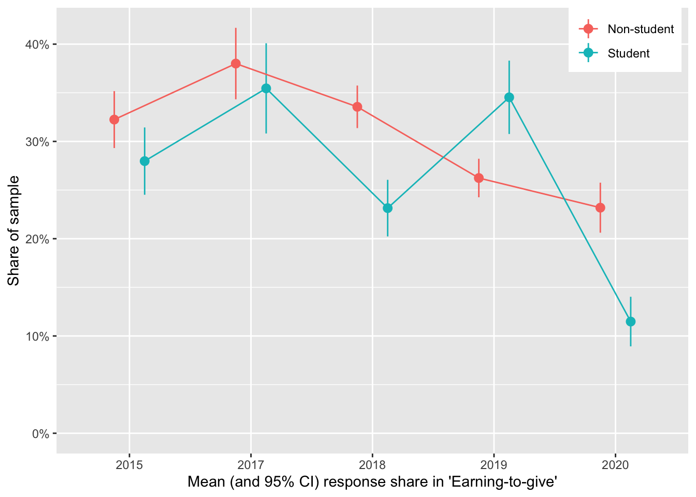
The decline in ETG is less dramatic among non-students (over 23% of non-student respondents still report ETG as their ‘current career’), but it nonetheless appears to be fairly strong and consistent from 2017-present.4
2.4 Donation totals: descriptives
Overall donations, totals by groups
Below, we present a histogram of positive reported 2018 donations by all respondents. Note that:
- the horizontal axis is on a logarithmic scale,
- 13.7% of the 2,056 total respondents reported donating zero, and
- 30.8% of the total respondents did not report their donation amount.
donation_c <- eas_new$donation_c require(scales) don_breaks <- c(50, 100, 200, 300, 500, 1000, 2500, 5000, 10000, 25000, 50000, 100000, 250000, 500000, 1000000, 2500000) eas_new %<>% rowwise() %>% mutate(donation_c_50 = max(donation_c, 50)) %>% ungroup ( donhist_tyly <- eas_new %>% hist_plot_lscale(eas_new$donation_c_50, breaks = don_breaks ) + geom_vline_mean(donation_c) + geom_vline_med(donation_c) + geom_vline_90(donation_c) + labs(title="Histogram of prior year's Donations (latest survey)", x="last year's $ Donations (bottom-coded at 50)", y = "Number of respondents") )
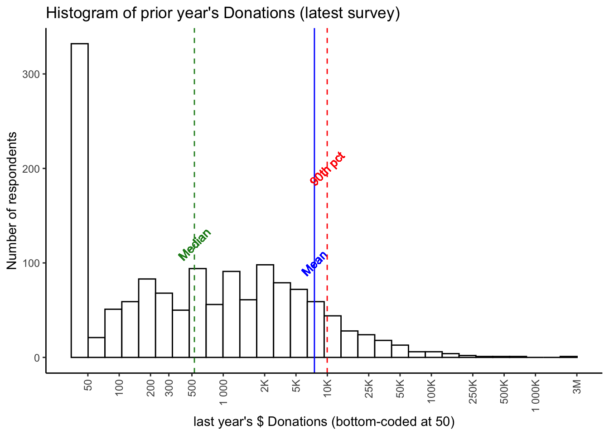
# Todo (medium importance): Overlay a display of 'overall percentage shares' ... so we know where the 80th and 90th percentile are, etc.
In 2018 we reported [link/quote] (Or make this into a concise bulleted comparison)
…
We compare the results for 2020 (for 2019 donations):
- Median donation (of those reporting): 528 USD
- Donation of $1000 puts you in the 59.5th percentile.
- Being in the top 10% requires donating 9,972
- Being in the top 1% means donating 89,560 USD.
…
require(treemapify) geom_treemap_opts <- list(treemapify::geom_treemap(alpha = 0.7), geom_treemap_text(fontface = "italic", colour = "white", place = "centre", grow = TRUE, min.size = 1 ), theme(legend.position = "none", plot.title = element_text(hjust = 0.5)) ) ( don_share_by_size <- eas_new %>% geom_tree_tot_by_split(donation_c, donation_c_split, title = "Share of total last year's donation amount, by donation size") )
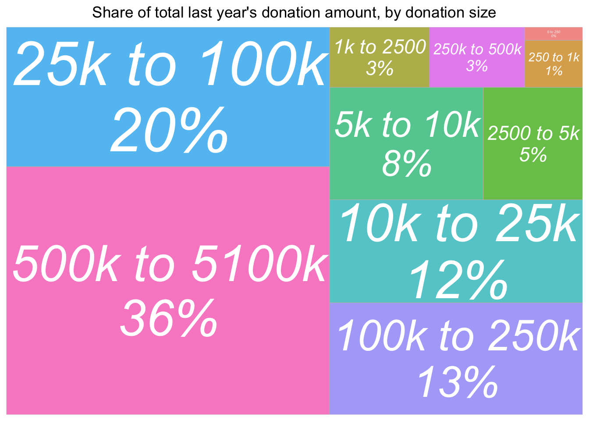
… discussion or cut
‘Which career paths are driving donation totals?’
Some caveats:
Caveats: The figures below exclude 486 participants who provided no response to the career question (… doublecheck this), 0.236 of the sample. These participants reported a total of $$2,766,310 in donations which makes up 25.9% of the total reported donations for 2019 .
- Totals
- Overall shares
#library(treemapify) don_by_career_XXX <- eas_new %>% geom_tree_tot_by_split(donation_c, career_, title= "Share of last year's donations by career path") ( don_by_career <- eas_new %>% select(career_, donation_c) %>% filter(!is.na(career_)) %>% group_by(career_) %>% filter(!is.na(career_)) %>% summarise(total_don = sum(donation_c, na.rm=TRUE), n = n()) %>% mutate(don_share = round(total_don/sum(total_don)*100), freq = n/sum(!is.na(eas_new$career_)) ) %>% ggplot(aes(area = total_don , fill=freq, # Include percentage of total donation label = paste(career_, paste0(don_share, "%"), paste0("(Pop:", round(freq*100) , "%)"), sep = "\n"))) + geom_treemap_opts + # theme(legend.position = "bottom") + #todo -- add title to legend explaining that it's the survey pop; get better colors for this scale_fill_continuous(name = "Frequency", label = scales::percent, trans = "reverse") + labs(title= "Share of last year's donations by career path", subtitle = "(Share of survey population in parentheses; darker = larger share)") )
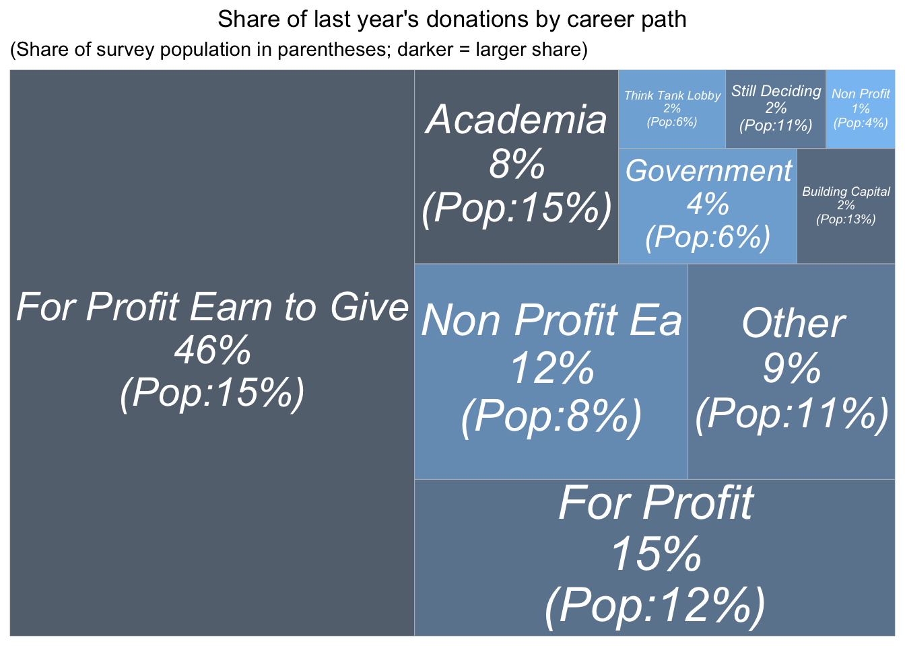
( career_tab <- eas_new %>% mutate(Career = na_if(career_, "na")) %>% filter(!is.na(Career)) %>% tabyl_ow(Career) %>% adorn_totals() %>% rename_with(snakecase::to_title_case) %>% .kable(caption = "Shares in each career path", padding = 0, digits=c(0,0,2)) %>% .kable_styling() )
| Career | N | Percent |
|---|---|---|
| Academia | 242 | 15.41 |
| For Profit Earn to Give | 237 | 15.10 |
| Building Capital | 203 | 12.93 |
| For Profit | 183 | 11.66 |
| Still Deciding | 167 | 10.64 |
| Other | 166 | 10.57 |
| Non Profit Ea | 130 | 8.28 |
| Government | 96 | 6.11 |
| Think Tank Lobby | 90 | 5.73 |
| Non Profit | 56 | 3.57 |
| Total | 1,570 | 100.00 |
We put this in perspective, considering that income levels are different between these career paths:
grp_sum <- function(df, xvar, yvar, groupvar) { df %>% dplyr::select({{xvar}}, {{yvar}}, {{groupvar}}) %>% group_by({{groupvar}}) %>% drop_na({{xvar}}, {{yvar}}, {{groupvar}}) %>% summarise( mn_y = mean({{yvar}}), mn_x = mean({{xvar}}), med_y = median({{yvar}}), med_x = median({{xvar}}), se_y = sd({{yvar}}, na.rm=TRUE)/sqrt(length({{yvar}})), se_x = sd({{xvar}}, na.rm=TRUE)/sqrt(length({{xvar}})) ) %>% group_by({{groupvar}}) %>% # Calculate confidence intervals mutate( lower = max(0, mn_y - 1.96*se_y), upper = mn_y + 1.96*se_y ) } plot_grp <- function(df, groupvar, labsize=4, labangle=90, force = 1, fp = 1, mo=10, bp=1, arrow=NULL) { df %>% ggplot(aes(x=mn_x, y=mn_y, label = {{groupvar}})) + geom_point() + geom_abline(intercept = 0, slope = 0.1, colour="violetred1") + geom_smooth(method=lm, alpha=0.7) + geom_errorbar(aes(ymin = lower, ymax = upper), alpha=0.7) + scale_y_continuous( oob = scales::squish) + scale_x_continuous( oob = scales::squish) + ggrepel::geom_text_repel( size = labsize, angle = labangle, max.overlaps=mo, force=1, force_pull = fp, box.padding = bp, arrow = arrow, color="brown", alpha=0.75) }
( don_inc_career_plot <- eas_new %>% mutate(Career = na_if(career_, "na")) %>% filter(!is.na(Career)) %>% grp_sum(income_c_imp_bc5k, donation_c, Career) %>% plot_grp(Career, labsize=3) + xlab("Mean income in USD (imputed if <5k/missing)") + ylab("Mean donations, CIs") + scale_y_continuous(limits=c(-10000, 30000), oob = scales::squish) )
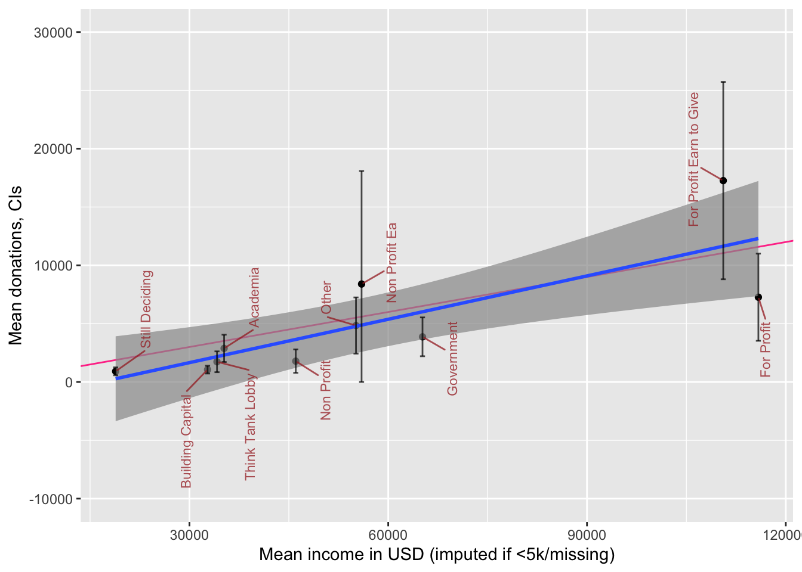
The plot above depicts mean income and mean donations by ‘career group,’ with 95% CI’s for the latter. We superimpose a ‘line of best fit’ (blue, with smoothed 95% intervals for this rough fit) and a ‘10% of income donation’ line (red). Unsurprisingly, for-profit ‘not-EtG’ are below the fitted line, and ‘for-profit EtG’ above this line, although 95% CIs are fairly wide. We also note that among people in non-profit careers, there are similar average incomes whether or not the non-profit is EA-aligned, but the non-profit EA people seem to donate somewhat more (although the CI’s do overlap).
Next, we present reported donation amounts by income groupings.6
#p_load(treemapify) ( don_share_by_income <- eas_new %>% select(donation_c, income_c_imp_bc_k, income_c_imp_split) %>% filter(!is.na(income_c_imp_bc_k)) %>% group_by(income_c_imp_split) %>% summarise(total_don = sum(donation_c, na.rm=TRUE), n = n()) %>% mutate(don_share = round(total_don/sum(total_don)*100), freq = n/sum(!is.na(eas_new$income_c_imp_split))) %>% ggplot(aes(area = total_don, fill= freq, # Include percentage of total donation label = paste(income_c_imp_split, paste0(don_share, "%"), paste0("(Pop:", (round(freq*100, 1)) , "%)"), sep = "\n"))) + geom_treemap_opts + scale_fill_continuous(name = "Frequency", label = scales::percent, trans = "reverse") + labs(title= "Share of last year's donations by income groups", subtitle = "(Share of survey population in parentheses; darker = larger share)") )
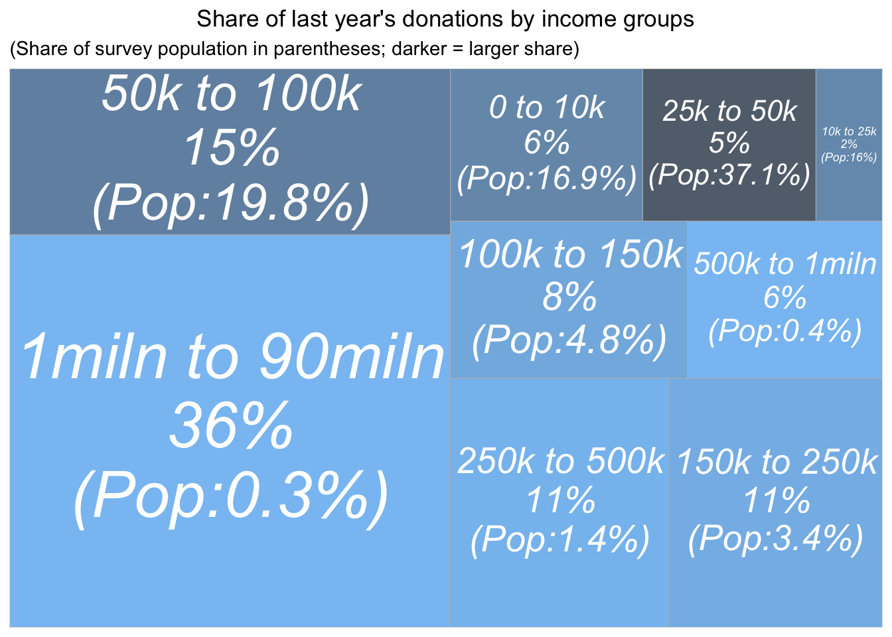
earn_tab <- eas_new %>% tabyl_ow_plus(income_c_imp_split)
Compare the above graph to the ‘donations by donations size’ graph…
Finally, we report donation totals by country.
First for 2019 donations alone:
#p_load(treemapify) ( don_share_country <- eas_new %>% select(donation_c, country_big) %>% group_by(country_big) %>% summarise(total_don = sum(donation_c, na.rm=TRUE), n = n()) %>% mutate(don_share = round(total_don/sum(total_don)*100), freq = n/sum(!is.na(eas_new$country))) %>% ungroup() %>% filter(don_share != 0 & !is.na(country_big)) %>% ggplot(aes(area = total_don, fill= freq, # Include percentage of total donation label = paste(country_big, paste0(don_share, "%"), paste0("(Pop:", op(round(freq*100, 0)) , "%)"), sep = "\n"))) + geom_treemap_opts + #scale_fill_continuous(name = "Frequency", label = scales::percent, trans = "reverse") + scale_fill_continuous(name = "Frequency", label = scales::percent, trans = "reverse") + labs(title= "Share of last year's donations by country", subtitle = "(Share of survey population in parentheses; darker = larger share)") )
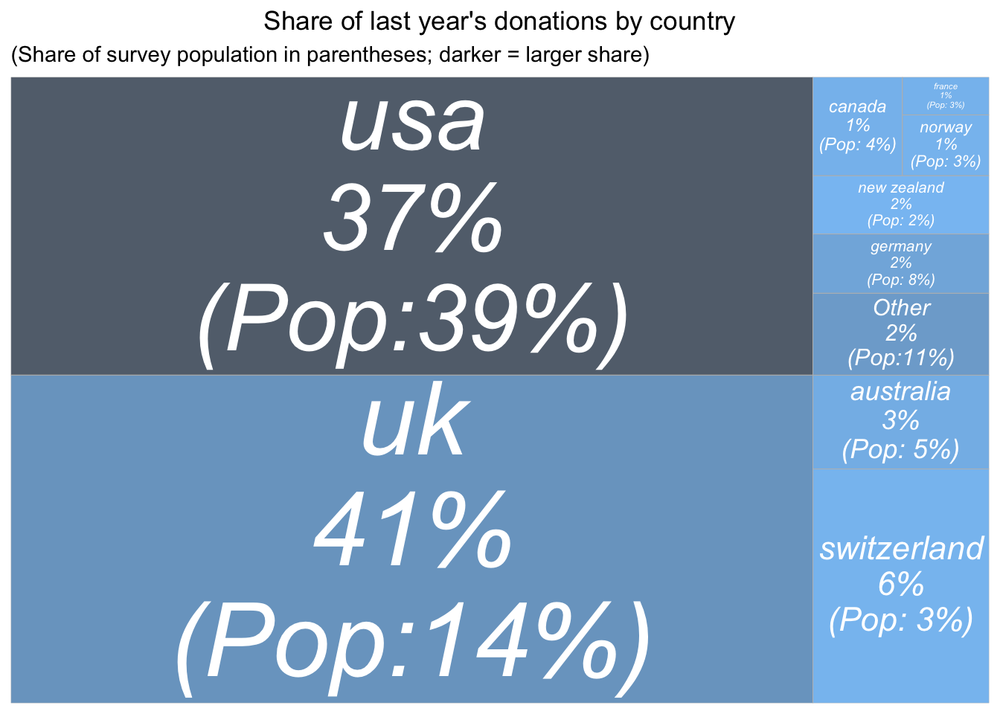
#; darker = larger share
Next, pooling across all years of the EA survey (without any weighting or adjustment):
( don_share_country_all_years <- eas_all %>% select(donation_c, country, year) %>% filter(!is.na(country)) %>% group_by(country) %>% summarise(total_don = sum(donation_c, na.rm=TRUE), n = n()) %>% ungroup() %>% mutate(don_share = round(total_don/sum(total_don)*100), freq = n/sum(!is.na(eas_all$country))) %>% filter(don_share > 0.1) %>% mutate(country = snakecase::to_title_case(country)) %>% ggplot(aes(area = total_don, fill= freq, # Include percentage of total donation label = paste(country, paste0(don_share, "%"), paste0("(Pop:", op(round(freq*100, 0)) , "%)"), sep = "\n"))) + geom_treemap_opts + scale_fill_continuous(name = "Frequency", label = scales::percent, trans = "reverse") + theme(legend.position = "none", plot.title = element_text(hjust = 0.5)) + labs(title= "Share of total (all years) donation amounts by country", subtitle = "(Share of survey population in parentheses; darker = larger share)") )
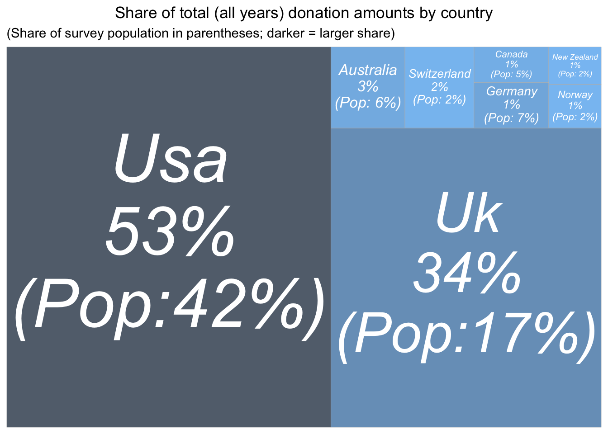
And again, ‘Winsorizing’ donations at 100K USD (setting larger donations at this value), to reduce the impact of outliers:
( don_share_country_all_years_w <- eas_all %>% select(donation_c, country, year) %>% filter(!is.na(country)) %>% rowwise() %>% mutate(donation_c_w = min(donation_c, 100000)) %>% ungroup() %>% group_by(country) %>% summarise(total_don_w = sum(donation_c_w, na.rm=TRUE), n = n()) %>% ungroup() %>% mutate(don_share = round(total_don_w/sum(total_don_w)*100), freq = n/sum(!is.na(eas_all$country))) %>% filter(don_share > 0.1) %>% mutate(country = snakecase::to_title_case(country)) %>% ggplot(aes(area = total_don_w, fill= freq, # Include percentage of total donation label = paste(country, paste0(don_share, "%"), paste0("(Pop:", op(round(freq*100, 0)) , "%)"), sep = "\n"))) + geom_treemap_opts + scale_fill_continuous(name = "Frequency", label = scales::percent, trans = "reverse") + theme(legend.position = "none", plot.title = element_text(hjust = 0.5)) + labs(title= "Share of 100k-Winsorised donations by country; all years", subtitle = "(Share of survey population in parentheses; darker = larger share)") )
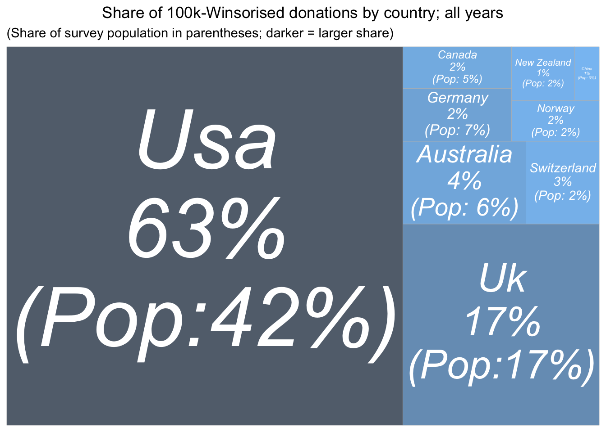
#TODO - @oska -- UK and USA in all-caps above
#TODO - @oska -- capitalization below #TODO - @oska -- sort by shares below ( country_tab <- eas_all %>% group_by(country_big) %>% filter(year>2014) %>% mutate( year_2020 = case_when( year==2020 ~ "2019 share.", TRUE ~ "pre-2019 share." ), `Country` = str_to_title(country_big), ) %>% tabyl(`Country`, year_2020) %>% adorn_percentages("col") %>% .kable(digits=2, caption="Shares (0-1) of survey population by country; larger countries only", label=TRUE) %>% .kable_styling() )
| Country | 2019 share. | pre-2019 share. |
|---|---|---|
| Australia | 0.04 | 0.04 |
| Belgium | 0.01 | 0.00 |
| Brazil | 0.00 | 0.01 |
| Canada | 0.03 | 0.03 |
| Czech Republic | 0.02 | 0.01 |
| Denmark | 0.00 | 0.00 |
| France | 0.02 | 0.01 |
| Germany | 0.06 | 0.05 |
| Netherlands | 0.02 | 0.01 |
| New Zealand | 0.02 | 0.01 |
| Norway | 0.02 | 0.01 |
| Other | 0.09 | 0.06 |
| Poland | 0.00 | 0.00 |
| Sweden | 0.01 | 0.01 |
| Switzerland | 0.02 | 0.01 |
| Uk | 0.11 | 0.12 |
| Usa | 0.30 | 0.29 |
| NA | 0.22 | 0.32 |
#d_anim <- "Y" #library(gganimate) anim_filename <- here(plots_folder, "animated_tree_plot.gif") if (exists("d_anim")) { if (d_anim == "Y") { animated_dons_country <- eas_all %>% select(year, donation_c, country_big) %>% group_by(year, country_big) %>% filter(year>2014) %>% summarise(total_don = sum(donation_c, na.rm=TRUE)) %>% mutate(don_share = round(total_don/sum(total_don)*100)) %>% ggplot(aes(area = total_don, fill= country_big, # Include percentage of total donation label = paste(country_big, paste0(don_share, "%"), sep = "\n"))) + geom_treemap_opts + ggtitle("Share of total last year's reported donation amounts by country") anim <- animated_dons_country + transition_states(year, state_length = 3) + ggtitle("Share of total {closest_state} reported donation amounts by country") gganimate::anim_save(anim_filename, anim) anim } else{ knitr::include_graphics(anim_filename) } }

if (!exists("d_anim")){ knitr::include_graphics(anim_filename) } #Todo (medium importance): slo
Summarize or skip discussion of this here….
We return to presenting a ‘controlled descriptive picture’ in our modeling work.7
2.4.2 Employment and student status
We present income and donation statistics for those “statuses” with more than 50 respondents in the forest plot below (a full table of statistics for each group can be found in the appendix).8 In each of the forest plots in this subsection, the blue line presents a simple linear best-fit of these points, and the red line represents a 10% donation rate.
se <- function(x) sqrt(var(x)/length(x)) sumstatvec <- c("{median}", "{p10}-{p90}", "{mean} [{se}] ({sd})")
doninclabs <- list(income_k_c ~ "Income in $1000 USD", donation_c ~ "Last year's donation (in USD)", donation_plan_c ~ "Latest planned donation")
don_inc_by_student <- eas_new %>% group_by(status_) %>% mutate( status_ = as.character(status_), large_group = case_when( n()<50 ~ "Other", TRUE ~ status_) ) %>% ungroup() %>% dplyr::select(income_k_c, donation_c, donation_plan_c, large_group) %>% tbl_summary(by = large_group, type = c(all_continuous()) ~ "continuous2", statistic = list(all_continuous() ~ sumstatvec), label = doninclabs, missing = c("no") ) %>% bold_labels() %>% add_n() %>% add_overall() #TODO: High -- fix the column labels #todo (low) -- we use this several times and it's a good format; let's functionalise it #Todo (medium): Bootstrapping the SE of the median would be nice, see, e.g., https://clayford.github.io/dwir/dwr_12_generating_data.html
library(ggrepel) # # 1.summarize donation and income (mean and 95pct CI for each) by status_ # 2. plot median (and mean) donation by income for each group (income lowest to highest) # 3. fit a line/curve of donation by income for each group (do for ) -- replace with the regression line based on the population not the groups # 4. Add error bars (for donations, not income) -- hard to do for median, though #TODO -- High Priority: Make this nice in the ways discussed (@oska it seems you have already started this) # why are the error bars not surrounding the point? # make it pretty (use your judgment), fix labels, add median colored dot, ( don_inc_status_plot <- eas_new %>% mutate( status_ = str_replace_all( status_, c("_" = " ") ) ) %>% grp_sum(income_c_imp_bc5k, donation_c, status_) %>% plot_grp(status_, labsize=3, fp=0.3, force=5, mo=20, bp=1.5, arrow = arrow(length = unit(0.02, "npc")) ) + xlab("Mean income in USD (imputed if < 5k/missing)") + ylab("Mean donations, 95% CIs") + scale_y_continuous(limits=c(-10000, 30000), oob = scales::squish) )
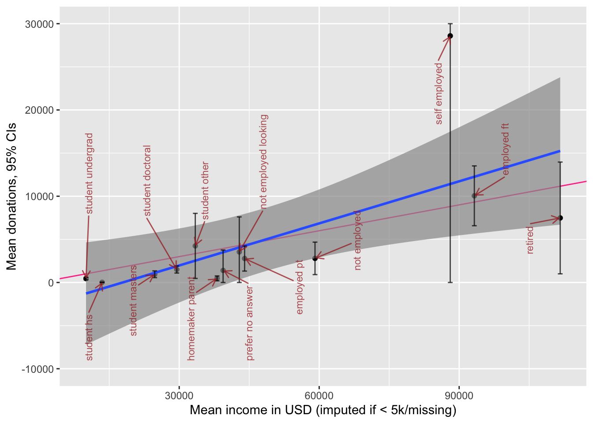
# Todo (low): Plot regression line for full pop # Todo: HIGH -- get this to look nicer, label it better, add better axis breaks (every 5k for donation, every 20k for income) #Todo (Medium) -- add plots for the medians #Todo
Donations generally track income by this aggregation, with some groups possibly ‘under-performing’ or ‘over-performing’; we return to this in our descriptive modeling.9
2.4.3 Donations by country
Donations and income by country
We report similar income and donation statistics for all countries with more than 50 respondents:
( don_income_by_ctry <- eas_new %>% dplyr::select(income_k_c, donation_c, donation_plan_c, country_big) %>% tbl_summary( by = country_big, sort = all_categorical() ~ "frequency", #reverse this ordering or maybe reverse sort by average income type = c(all_continuous()) ~ "continuous2", statistic = list(all_continuous() ~ sumstatvec), label = doninclabs, missing = c("no") ) %>% bold_labels() %>% add_n() %>% add_overall() )
| Characteristic | N | Overall, N = 1,607 | australia, N = 82 | belgium, N = 13 | brazil, N = 9 | canada, N = 59 | czech republic, N = 32 | denmark, N = 10 | france, N = 51 | germany, N = 123 | netherlands, N = 51 | new zealand, N = 37 | norway, N = 48 | Other, N = 179 | poland, N = 10 | sweden, N = 16 | switzerland, N = 45 | uk, N = 221 | usa, N = 621 |
|---|---|---|---|---|---|---|---|---|---|---|---|---|---|---|---|---|---|---|---|
| Income in $1000 USD | 1,384 | ||||||||||||||||||
| Median | 33 | 36 | 31 | 7 | 27 | 17 | 17 | 13 | 17 | 15 | 44 | 29 | 18 | 9 | 41 | 25 | 36 | 50 | |
| 10%-90% | 1-130 | 7-109 | 3-50 | 4-54 | 3-86 | 2-54 | 9-71 | 0-42 | 2-70 | 0-64 | 0-120 | 1-72 | 0-102 | 5-24 | 2-59 | 0-77 | 3-82 | 2-192 | |
| Mean [se] (SD) | 60 [4] (136) | 49 [5] (46) | 29 [5] (18) | 20 [9] (24) | 41 [6] (42) | 25 [4] (23) | 33 [11] (35) | 18 [3] (17) | 28 [3] (29) | 31 [6] (38) | 52 [9] (50) | 34 [5] (31) | 40 [5] (56) | 13 [3] (9) | 34 [8] (27) | 39 [6] (37) | 69 [17] (242) | 85 [6] (146) | |
| Last year's donation (in USD) | 1,397 | ||||||||||||||||||
| Median | 533 | 872 | 237 | 183 | 231 | 100 | 626 | 178 | 355 | 237 | 1,026 | 654 | 296 | 119 | 805 | 484 | 660 | 1,000 | |
| 10%-90% | 0-9,577 | 0-7,271 | 0-5,468 | 0-2,015 | 0-6,948 | 0-1,796 | 46-7,124 | 0-3,551 | 0-4,971 | 0-2,367 | 14-12,317 | 0-5,453 | 0-5,367 | 4-861 | 25-5,339 | 55-12,049 | 0-6,600 | 0-16,180 | |
| Mean [se] (SD) | 7,348 [1,956] (73,113) | 3,647 [971] (8,411) | 1,301 [679] (2,351) | 759 [500] (1,322) | 2,753 [930] (6,769) | 589 [180] (933) | 2,672 [1,230] (3,889) | 1,178 [283] (1,919) | 1,582 [273] (2,850) | 925 [226] (1,536) | 5,157 [2,492] (14,315) | 2,025 [385] (2,523) | 2,041 [402] (4,354) | 337 [195] (552) | 2,267 [914] (3,167) | 16,645 [13,326] (85,328) | 20,727 [12,512] (181,320) | 7,211 [864] (20,215) | |
| Latest planned donation | 1,377 | ||||||||||||||||||
| Median | 1,000 | 1,636 | 473 | 733 | 761 | 398 | 528 | 473 | 947 | 395 | 1,369 | 1,091 | 414 | 172 | 1,769 | 548 | 1,320 | 2,000 | |
| 10%-90% | 0-12,020 | 11-12,360 | 44-5,848 | 165-2,840 | 0-8,676 | 0-4,030 | 0-6,054 | 0-4,660 | 17-5,823 | 0-4,438 | 192-6,843 | 109-6,380 | 0-7,640 | 55-1,399 | 12-13,002 | 55-12,049 | 0-7,788 | 0-21,000 | |
| Mean [se] (SD) | 9,831 [2,001] (74,249) | 4,852 [964] (8,404) | 2,115 [960] (3,461) | 1,165 [501] (1,325) | 2,909 [844] (6,142) | 1,320 [459] (2,342) | 1,716 [876] (2,628) | 2,026 [514] (3,450) | 2,216 [360] (3,692) | 1,358 [280] (1,901) | 5,233 [2,465] (14,162) | 2,434 [439] (2,915) | 3,996 [1,287] (13,798) | 630 [406] (1,149) | 6,071 [3,311] (11,468) | 4,522 [1,618] (10,358) | 24,592 [11,797] (169,316) | 12,033 [2,345] (54,382) |
#todo (medium?): make a stem-leaf thing here #todo (High): add *medians* to the above
# don_inc_status_plot <- eas_new %>% # dplyr::select(status_, donation_c, income_k_c) %>% # group_by(status_) %>% # drop_na(status_, donation_c, income_k_c) %>% # summarise(across(c(donation_c, income_k_c), # list(mean=mean, # median=median, # se = ~sd(.x)/sqrt(length(.x))))) %>% # group_by(status_) %>% p_load(ggimage) country_codes <- tibble(country = c("Australia", "Canada", "France", "Germany", "Netherlands", "Other", "United Kingdom", "USA"), code = c("ac", "ca", "fr", "de", "nl", "yt", "gb", "us")) ( don_inc_country_plot <- eas_new %>% grp_sum(income_c_imp_bc5k, donation_c, country_big) %>% left_join(., country_codes, by = c("country_big" = "country")) %>% plot_grp(country_big) + xlab("Mean income in USD (imputed if <5k/missing)") + ylab("Mean donations, CIs") + scale_y_continuous(limits=c(-3000, 30000), oob = scales::squish) )
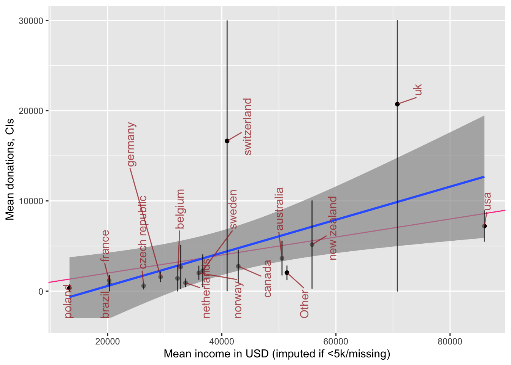
#Note -- plotly seems to destroy country labels here #+ggimage::geom_flag()
Above, we plot donations and income by country of residence for the countries with the largest number of EA respondents. We fit a simple best-fit (least-squares) line in blue, and add a red line depicting a 10% donation rate. Again, donations generally track income, with some under and over-performers (see later modeling).10
( don_by_country_viol_ly <- eas_new %>% plot_box_pt_viol(donation_c, country_big, notch=TRUE) + labs(title = "Donation amounts by country (last year)") ) ( don_by_country_viol_all <- eas_all %>% plot_box_pt_viol(donation_c, where_live_cat, notch=TRUE) + labs(title = "Donation amounts by country grouping (2013-2019)") ) ( don_by_yr_viol_all <- eas_all %>% mutate(year=as.factor(year)) %>% plot_box_pt_viol(donation_c, year) + labs(title = "Donation amounts by year") )
Donations, age and years in EA
Next, we consider how donations may increase or decrease with ‘time-in-EA’ (i.e., ‘tenure’) as well as age.11
Note to MOSS12
don_by_tenure_facet_age <- eas_new %>% filter(!is.na(age_ranges)) %>% ggplot() + aes(x = tenure, y = donation_c_min50) + geom_point(size = 0.15, colour = "#0c4c8a", position = position_jitter(seed = 42, width = 0.1, height = 0.001)) + geom_smooth(span = 0.75) + scatter_theme + facet_grid(vars(), vars(age_ranges), scales = "free") + labs(title = "Last year's donation by time in EA", subtitle = "Faceted by Age ranges") + labs(x = get_label(eas_new$tenure)) + scale_y_don
don_by_tenure_facet_age %>% ggplotly()
We next report the comparable chart for donation as a share of income:
donshare_by_tenure_facet_age <- eas_new %>% filter(!is.na(age_approx_ranges)) %>% ggplot() + aes(x = tenure, y = don_share_inc_imp_bc5k) + geom_point(size = 0.15, colour = "#0c4c8a", position = position_jitter(seed = 42, width = 0.1, height = 0.001)) + geom_smooth(span = 0.75) + scatter_theme + facet_grid(vars(), vars(age_approx_ranges), scales = "free") + labs(title = "Last year's donation as share of (imputed) income by time in EA", subtitle = "Faceted by Age ranges") + labs(x = get_label(eas_new$tenure)) + ylab(element_blank()) + ylim(0, 0.3)
donshare_by_tenure_facet_age %>% ggplotly
[Discussion or link, mention and link analysis ‘within-referrer’… ]
By referrer
Next, we consider how donations vary by ‘which referrer’ (i.e., which link) took an individual to the EA survey. Again, the blue line gives linear fit (for group means), and the red line the slope for donating 10% of income.
( don_inc_referrer_plot <- eas_new %>% grp_sum(income_c_imp_bc5k, donation_c, referrer_cat) %>% plot_grp(referrer_cat) + scale_y_continuous(limits=c(0, 15000), oob = scales::squish) + xlab("Mean income by group in USD (imputed if <5k/missing)") + ylab("Mean donations by group, CIs") + ggtitle("Donation by income and referrer") )
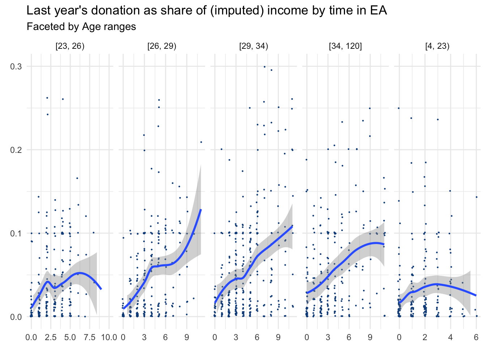
# (Todo?) I wonder if we should get rid of the blue line and gray line for this … or replace it with one from an individual-based regression
2.5 Donation and income for recent years
Changing EAS:
As the composition of EAS responses change from year to year, it may be difficult to tell whether EAs (as individual or in total) have been donating more or less in recent years. We discuss this further in the online bookdown supplement chapter.
Because of these limitations:
- we report both totals and averages below,
- we advise caution in interpreting the amounts and changes
- we return to this in a controlled model, which is also subject to similar limitations,
- we defer more detailed analysis of this question for future work.
The plot and tests below depict and consider the year-to-year changes in reported donations (subject to caveats noted in the fold above).13 We first consider donation rates in each year for those who answer the donation question (reporting 0 or positive amounts).
library(ggstatsplot) library(pairwiseComparisons) ( don_by_year_tab <- eas_all %>% filter(year>=2015) %>% sumtab(donation_c, year, caption="Donations by year", digits=c(0, 0, 2, 0, 0, 0,0)) %>% kable_styling() #redundant but helps with parsing )
| year | N | share > 0 | Mean | Median | P80 | Std.dev. |
|---|---|---|---|---|---|---|
| 2015 | 1171 | 0.76 | 5775 | 333 | 3759 | (39271.5) |
| 2017 | 1028 | 0.84 | 9505 | 657 | 5790 | (75452.24) |
| 2018 | 1889 | 0.85 | 9763 | 740 | 5201 |
|
| 2019 | 1704 | 0.82 | 9370 | 684 | 5000 | (87598.4) |
| 2020 | 1423 | 0.80 | 7516 | 528 | 4347 | (72810.66) |
We next consider a similar report with donation-nonresponses coded as 0.
Discussion/details:
The above only considers people who did answer donation questions. At an extreme we could consider all non-responses as reflecting people who made (little or) no donations, for a lower bound on on donation rates. As a compromise measure, probably a tighter lower bound, we might assume that people willing to report their incomes are generally willing to answer financial questions. Thus if they do not report their donations it seems more reasonable to suspect that they did not donate in a big way. We thus consider the subset of the above who reported their income, considering similar statistics as above for a modified donation variable, coded as ‘0’ where the donation was not reported.
( don0_by_year_tab <- eas_all %>% filter(!is.na(income_c) & year>2014) %>% #rowwise() %>% #mutate(donation_c_0 = if_else(is.na(donation_c), 0, donation_c)) %>% #ungroup() %>% sumtab(donation_c_0, year, caption="Donations by year for those reporting income (missings coded as 0)", digits=c(0, 0, 2, 0, 0, 0, -1, 0)) %>% kable_styling() )
| year | N | share > 0 | Mean | Median | P80 | Std.dev. |
|---|---|---|---|---|---|---|
| 2015 | 1033 | 0.69 | 4746 | 250 | 3094 | (35095.05) |
| 2017 | 1008 | 0.82 | 8905 | 615 | 5118 | (75243.94) |
| 2018 | 1835 | 0.83 | 9952 | 740 | 5201 | (139809.56) |
| 2019 | 1682 | 0.82 | 9443 | 684 | 5000 | (88165.41) |
| 2020 | 1409 | 0.80 | 7452 | 528 | 4098 | (73109.73) |
#todo same for GWWC people (member_gwwc needs reconciling) #todo -- include a 'total donations row'. maybe plot/graph this stuff;
Graphs:donation densities
( don_by_year_viol_test <- eas_all %>% #select(donation_c_min50, year) %>% #select(donation_c, year) %>% mutate(year = year-1) %>% filter(year>2014) %>% ggbetweenstats(y = donation_c, x = year, ylab = "Donations (USD)", # plot.type = "violin", # type of plot type="parametric", conf.level = 0.95, # pairwise.display = "significant", #p.adjust.method = "hol", #results.subtitle = "false", title = "Donations by year, 2016-Present" ) + theme(legend.position="none") + ylim(50, NA) + scale_y_continuous(trans = "pseudo_log", breaks = don_breaks, labels = scales::dollar_format()) )
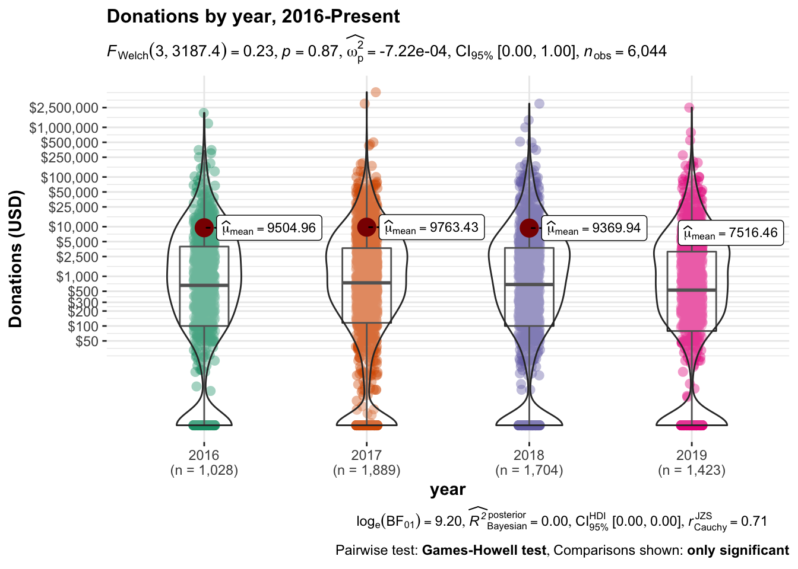
( don_by_year_viol_test_ldon <- eas_all %>% #select(donation_c_min50, year) %>% #select(donation_c, year) %>% mutate(year = year-1, ldon1 = log(donation_c+1)) %>% filter(year>2014) %>% ggbetweenstats(y = ldon1, x = year, ylab = "Log (Donations +1)", # plot.type = "violin", # type of plot type="parametric", conf.level = 0.95, # pairwise.display = "significant", #p.adjust.method = "hol", #results.subtitle = "false", title = "(Log) donations by donation year, 2016-Last year" ) + theme(legend.position="none") )
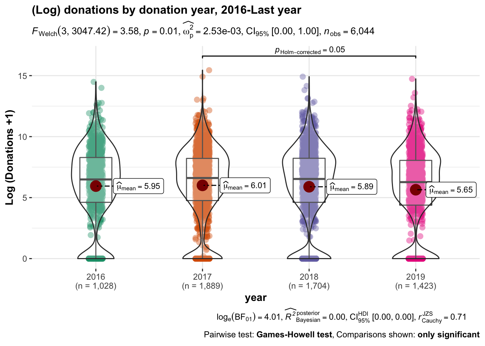
#%>% ggplotly() #Below: replaced this with 'wilcox, the nonparametric test' ... but note that is on top of the tests given by the ggbetweenstats command
2.6 Which charities (causes and categories) are EAs donating to?
Only a small share of respondents report where they are donating. We group this into several categories summarized below, reporting for only those 429 respondents who indicated at least one category of donations.
#don-statistics-category-show, #TODO - HIGH: add better cause labels to this, visualise it in a way that conveys the aggregate shares of donations counts and amounts #created near the top of this file don_stats
| Variable | Number of Responses | Number reporting donation to cause | Share of reporters donating to cause | Mean donation of reporters (including 0’s) | Sd | Median | 90th pct |
|---|---|---|---|---|---|---|---|
| Global health + development | 429 | 266 | 0.62 | 3971.7 | 21405.3 | 153.9 | 6017.6 |
| Animal welfare | 429 | 117 | 0.27 | 1503.7 | 11025.4 | 0 | 964.5 |
| EA meta and organization | 429 | 74 | 0.17 | 771.4 | 7106.9 | 0 | 261.7 |
| Long term & AI | 429 | 78 | 0.18 | 975.3 | 9963.9 | 0 | 345.6 |
| Other | 429 | 47 | 0.11 | 874.4 | 12863.9 | 0 | 25.3 |
Below, we depict the amounts and density of donations for each category.
Details:
The vertical axis is on a logarithmic scale. The width of the violin plot depicts the smoothed density. In the box, the horizontal lines represent medians for each, lower and upper margins of the box 25th and 75th percentiles, “whisker” lines extends from the box to to the largest (smallest) value no further than 1.5 \(\times\) the inter-quartile range, and large dots represent outlying points beyond the edge of the whiskers.
##TODO -- #sort by reverse frequency of donations to a cause #TODO: bottom code and change the scale on this, time permitted ( don_by_cause_viol <- eas_new %>% filter(num_named_dons>0) %>% select(where_don_vars, action_gwwc_f) %>% gather(cause, don, -action_gwwc_f) %>% ggplot() + aes(cause, don) + geom_violin() + geom_boxplot() + ylab("Donation amount") + geom_point(size = 0.30, colour = "#0c4c8a", position = position_jitter(seed = 42, width = 0.3, height = 0.01)) + scatter_theme + scale_y_log10(labels = scales::label_number_si(prefix = "$"), n.breaks = 10) + scale_x_discrete(labels = function(x) str_wrap(all_char_labels, width = 10)) + labs(title = "Donation amounts by category: see description above") )
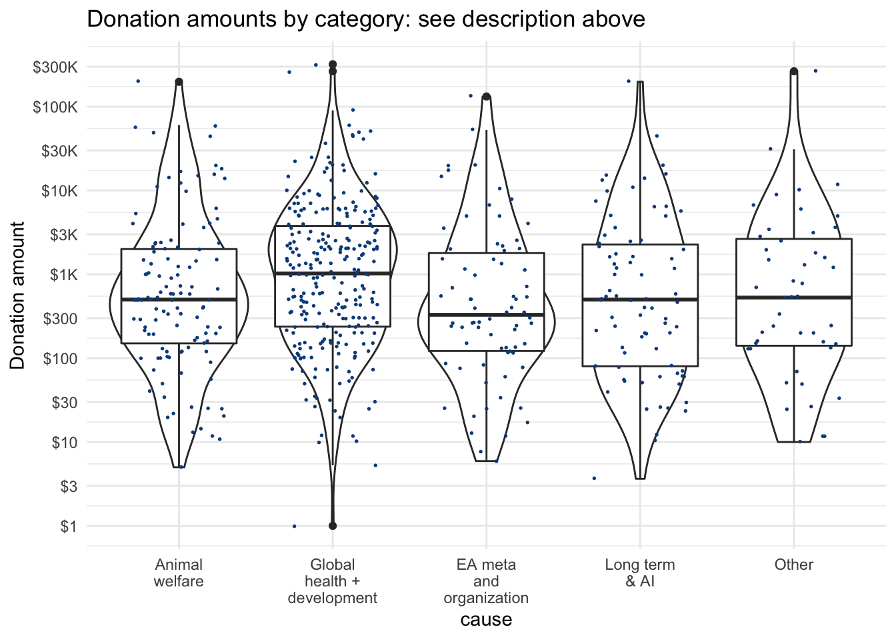
#Todo (Low to medium) ... @oska: if it's easy-ish, maybe gganimate this one across years? #@David: Kinda difficult to do this as the variables in where_don_vars don't seem to align with eas_all #@oska -- it is there, in variables like `donate_[charity]_year` but it would require considerable data cleaning work. Will ask/see if it's worth it.
We also check whether donations to each cause (incidence and amounts) vary by whether the person (ever) took a GWWC pledge.
#TODO -- High Priority (@oska): clean up the below to be more readable, add the mean and a CI for the mean ( don_by_cause_viol_gwwc <- eas_new %>% filter(num_named_dons>0 & !is.na(action_gwwc_f)) %>% select(where_don_vars, action_gwwc_f) %>% gather(cause, don, -action_gwwc_f) %>% ggplot() + aes(cause, don, color=action_gwwc_f) + scale_color_discrete(name="GWWC pledge", labels=c("No", "Yes")) + geom_violin() + geom_boxplot(notch=TRUE) + geom_point(size = 0.30, colour = "#0c4c8a", position = position_jitter(seed = 42, width = 0.3, height = 0.01)) + scatter_theme + scale_y_log10() + scale_x_discrete(labels = function(x) str_wrap(all_char_labels, width = 10)) )
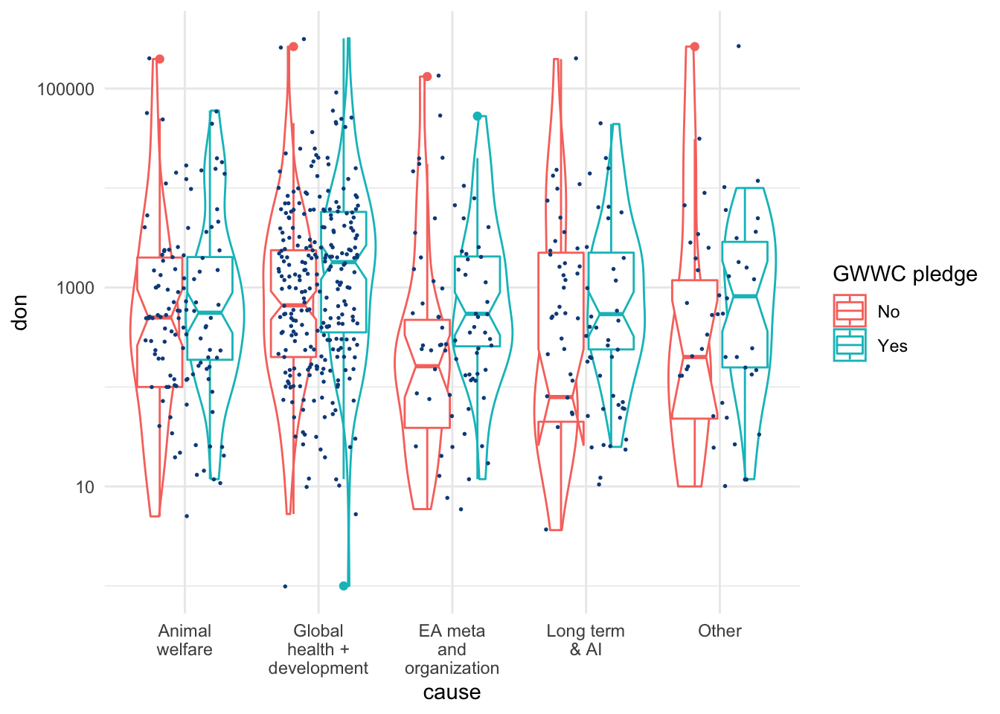
Difference from previous plots :
Comparing this to the “Donation amounts by category…” plot, Here, the lower and upper margins of the (now ‘notched’) box present an estimate of 95% confidence interval for medians (for those reporting at least one category of donations and reporting GWWC status).
Below, we tabulate donations for each cause, by group.14
don_stats_by_gwwc
| Variable | N Responses | Share positive | Mean | Median | N Responses | Share positive | Mean | Median | Test |
|---|---|---|---|---|---|---|---|---|---|
| GWWC Pledge | No | Yes | |||||||
| Global health + development | 241 | 0.59 | 2832.7 | 1144.1 | 187 | 0.66 | 5450.2 | 1854.9 | F=1.573 |
| Animal welfare | 241 | 0.22 | 1480.4 | 867.1 | 187 | 0.34 | 1531 | 495.5 | F=0.002 |
| EA meta and organization | 241 | 0.12 | 696.4 | 553.1 | 187 | 0.24 | 872.1 | 335.7 | F=0.064 |
| Long term & AI | 241 | 0.13 | 1144.7 | 830 | 187 | 0.25 | 762.1 | 274.8 | F=0.155 |
| Other | 241 | 0.06 | 1289.5 | 1103.3 | 187 | 0.17 | 344.1 | 96.8 | F=0.567 |
Next, as above, but for donation incidence:15
ddon_stats_by_gwwc
| Variable | N Responses | Donated to… ? | N Responses | Donated to… ? | Test |
|---|---|---|---|---|---|
| GWWC Pledge | No | Yes | |||
| Global health + development | 241 | 187 | X2=2.399 | ||
| … No | 100 | 41% | 63 | 34% | |
| … Yes | 141 | 59% | 124 | 66% | |
| Animal welfare | 241 | 187 | X2=7.897*** | ||
| … No | 189 | 78% | 123 | 66% | |
| … Yes | 52 | 22% | 64 | 34% | |
| EA meta and organization | 241 | 187 | X2=8.283*** | ||
| … No | 211 | 88% | 143 | 76% | |
| … Yes | 30 | 12% | 44 | 24% | |
| Long term & AI | 241 | 187 | X2=9.831*** | ||
| … No | 210 | 87% | 140 | 75% | |
| … Yes | 31 | 13% | 47 | 25% | |
| Other | 241 | 187 | X2=11.681*** | ||
| … No | 226 | 94% | 155 | 83% | |
| … Yes | 15 | 6% | 32 | 17% |
# #TODO -- High Priority (@oska): -- the below is a mess... we want both the frequency table and test for each of these ... but how to do it. I feel like I've done this before. maybe the function in rstuff `fisherme` would help? # TODO (high-medium): Once we get it to work, do similar plots and tests for different 'which cause' comparisons ... fisher_cats <- eas_new %>% filter(num_named_dons>0) %>% dplyr::select(all_of(where_don_vars)) %>% lapply(janitor::fisher.test, y = eas_new$action_gwwc_f[eas_new$num_named_dons>0], simulate.p.value=TRUE)
Discussion of results above:
… As suggested in the first of the two tables above, among those who report a charity category, those who took the GWWC pledge tend to give …
2.7 Donations: plans/aspirations vs. actual (reported) amounts
To consider:16
#filtering and shaping functions f_don_plan_by_year <- function(df=eas_all, years=latest_years) { #adjusting for comparing planned and actual donation for same year in question (but not always for 'same individuals') {df} %>% select(year, donation_c, donation_plan_c) %>% gather(donation_type, value, -year) %>% mutate(year = if_else(donation_type == "donation_plan_c", year, year-1)) %>% mutate(year = fct_rev(as.factor(year)), donation_type = fct_recode(donation_type, "Planned Donation" = "donation_plan_c", "Donation" = "donation_c")) %>% filter(year %in% years) } f_don_last_3 <- function(df=eas_all, years=last_3_years) { #this is for comparing to 'planned donation' (next year) df %>% dplyr::filter(year %in% years) %>% group_by(year) %>% select(year, donation_c, donation_plan_c) %>% gather(donation_type, value, -year) } f_next_d_don <- function(df=eas_all) { #same as f_don_last_3, but instead of gather it constructs a differenced variable `next_d_don` df %>% dplyr::filter(year %in% last_3_years) %>% select(year, donation_c, donation_plan_c) %>% transmute(next_d_don = donation_plan_c - donation_c) }
#Construct key tibbles to use in comparing planned and actual for 'this year' demographics <- c('age', 'gender', 'country', 'employ_status') # Filtering for those present in both datasets planned_actual_ly_ty <- eas_all %>% filter(year %in% c(year_n, year_n-1) & !is.na(ea_id)) %>% select(ea_id, donation_c, donation_plan_c, year) %>% distinct() %>% group_by(ea_id) %>% filter(n() == 2) %>% # Filter for those appearing in both years pivot_wider(names_from = "year", values_from = c("donation_c", "donation_plan_c")) %>% # Remove unnecessary columns select(-donation_plan_c_2020, -donation_c_2019) %>% # drop_na() %>% # Ensure that each participant had planned donation from 2019 and actual donation from 2020 # TODO - fix, this is dropping everything rename(donation_last_survey_year = donation_c_2020, planned_donation_prior_survey_year = donation_plan_c_2019) %>% #2022: renamed from 'donation_ly' and 'planned_donation_ly' for greater clarity # Add demographic information left_join(., select(eas_new, all_of(demographics), ea_id, action_gwwc, start_date, end_date, income_c), by = "ea_id") #Convert to long format for ggplot planned_actual_ly_ty_l <- planned_actual_ly_ty %>% group_by(ea_id) %>% gather(donation_type, value, donation_last_survey_year, planned_donation_prior_survey_year)
## helper functions f_ly_hyp <- function(df) { #2019 data for donation difference df %>% filter(donation_last_survey_year > 0 & planned_donation_prior_survey_year>0) %>% #positive don in each year transmute(don_diff = donation_last_survey_year - planned_donation_prior_survey_year) #only the difference is used; this adds an 'attribute' to this object }
#test_rep_don_diff_mn_19 #point hypothesis of 0 mean (+attribute) #1000 replications of the relevant 'data' #test_rep_don_diff_med_19: as above but for median #test_rep_next_d_don_mn_18_20 #for actual vs *next* year's plan (means) #test_rep_next_d_don_med_18_20 ... (medians) #### Linked tests: New Purr testing framework ##### # ...Alternate between testing mean and median = 0 #### mean_zero_hyp <- list(null = "point", mu = 0) med_zero_hyp <- list(null = "point", med = 0) hyps <- list(mean_zero_hyp, med_zero_hyp) # ...Stats to calculate ##### stat_mean <- list(list(stat = "mean")) stat_median <- list(list(stat = "median")) bs_1000 <- list(reps = 1000, type = "bootstrap") #dataframes for testing 'current less next donation' and 'actual less planned donation' df_next_don <- eas_all %>% f_next_d_don df_don_diff <- planned_actual_ly_ty %>% f_ly_hyp n <- 4 # Total number of tests ... mean and median for each dataframe (better to softcode this?) responses <- c( rep("don_diff", n/2), rep("next_d_don", n/2)) p_value_directions <- rep("two_sided", n) # ... Functionalize #### dfs <- list( rep(list(df_don_diff), n/2), rep(list(df_next_don), n/2)) linked_df_labels <- c(rep("Last year-this year linked responses", 2), rep("Last 3 years all responses", 2)) linked_test_var_type <- c(rep("Actual vs Planned", 2), rep("'Next year' vs Current", 2))
linked_tests_df <- tibble(df = do.call(c, dfs), # Dataframes (needs tidying) # Stats to calculate stat = rep(c(stat_mean, stat_median), n/2), # Hypotheses to test hypothesis = rep(hyps, n/2), # Samples to generate gen = rep(list(bs_1000), n), # Outcome variables response = responses, # Direction for p-value calculation p_val_dir = rep("two_sided", n)) # .... actually run tests and collect pvalues etc #### linked_tests_df <- linked_tests_df %>% mutate(results = pmap(., htest_infer_sim)) #htest_infer_sim was defined in `hypothesis_test.R`; it runs the steps in the Infer testing package with options selected based on the content of the arguments. linked_tests_results <- extract_hyp_results(linked_tests_df) %>% #extract and label key results for reporting and plotting mutate(data_label = linked_df_labels, data_type = linked_test_var_type)
# ... make a tibble of the relevant dataframes and 'test formula elements' #### unlinked_tests_df <- tibble(df = do.call(c, unlinked_data), formula = rep(list(unlinked_formula), n), hypothesis = rep(hyp_unlinked, n), gen = rep(list(perm_200), n), stat = c(rep(d_order_diff_means, n-1), d_order_next_diff_means), p_val_dir = rep("two_sided", n))
# Column labels rename_test_results <- c("Statistic" = "stat", "Null type" = "null", "Null value" = "null_value", "Point estimate" = "point_estimate", "CI Lower" = "lower_ci", "CI Upper" = "upper_ci", "P-value" = "p_value", "Sample" = "data_label") # This can be used for plotting full_test_results <- dplyr::bind_rows(linked_tests_results, unlinked_diff_in_means_results, unlinked_diff_in_medians_results) %>% select(-c(order)) %>% mutate(across(c(stat, null, p_val_dir), ~ snakecase::to_sentence_case(.x))) # This forms the basis for tables/displaying stats full_test_results_clean <- full_test_results %>% select(-c(reps, type, formula, p_val_dir, response)) %>% rename(!!rename_test_results) %>% mutate(Statistic = str_replace_all(Statistic, c("means" = "Mean", "medians" = "Median", "Diff" = "Difference")))
#making tables #For linked tests: current_next_test_results_clean <- full_test_results_clean %>% filter(data_type == "'Next year' vs Current") %>% select(-c(data_type, null_dist)) planned_v_actual_test_results_clean <- full_test_results_clean %>% filter(data_type == "Actual vs Planned") %>% select(-c(data_type, null_dist)) planned_v_actual_test_table <- planned_v_actual_test_results_clean %>% select(-c(`Null value`, `Null type`, `Sample`)) %>% kable(caption = "Actual minus planned donations for last year, linked participants (this year and last year)", digits=c(0,0,0,3)) %>% kable_styling() current_next_test_table <- current_next_test_results_clean %>% select(-c(`Null value`, `Null type`, `Sample`)) %>% kable(digits=c(0,0,0,0,3), caption = "Planned minus last year's donation, 2018-20, all participants who report donations") %>% kable_styling()
#making tables for UNLINKED tests: planned_actual_unlinked_results_table <- full_test_results_clean %>% arrange(match(Sample, c("Full sample (Prior donation years)", "Involved before last year (Prior-year don)", "GwwC only (Prior-year don)", "'Matched individuals'"))) %>% filter(`Null type` == "Independence" & data_type == "Actual - Planned" ) %>% select(-c(data_type, null_dist, `Null value`, `Null type`)) %>% select(Sample, Statistic, everything()) %>% kable(caption = "Actual versus Planned donation distributions: permutation tests", digits=c(0,0,0,0,0,3)) %>% kable_styling() next_current_unlinked_results_table <- full_test_results_clean %>% filter(`Null type` == "Independence" & data_type == "'Next year' - 'this year'" ) %>% select(-c(data_type, null_dist, `Null value`, `Null type`)) %>% select(Sample, Statistic, everything()) %>% kable(caption = "'Next year (plan)' - 'this year' donation distributions: permutation tests", digits=c(1,1,1,3)) %>% kable_styling()
Do people meet or exceed the amount they intended or planned to donate for the next year?
In recent surveys, we have asked “In [current year] how much do you currently plan to donate?” We also ask “in [previous year], roughly how much money did you donate?”
Note: timings of surveys:
The EA surveys have been released at various points in the year:
In 2017, the survey was released in April; thus the ‘plan’ was reported only about 1/3 of the way through the year (or slightly later, depending on response time).
In 2018, the survey was released in May.
In 2019, it was released in August, about 3/4 of the way throughout the year.
Thus, for each of these years, the year-to-year comparison may tell us something about whether people lived up to their plans.
2019 Planned vs. actual: Individuals present in both surveys
We first consider those 441 respondents who can be matched across the 2019 and 2020 surveys.17
The plots below cover only respondents who appear in both samples and provide planned and actual donation values. These individuals make up 22.9% of the total respondents that appear in the 2020 sample and 15% of the total respondents across 2019 and 2020.18
# Create plots for planned and actual donations matched across 2019 scales_point_density_min50 <- list(limits = c(50, 500000), trans = scales::pseudo_log_trans(base=10), breaks = breaks, labels = scales::dollar_format()) planned_actual_ly_ty_density <- planned_actual_ly_ty_l %>% rowwise() %>% mutate(value = max(value, 50)) %>% ungroup() %>% ggplot() + geom_density(aes(x = value, fill = donation_type), alpha = 0.5) + do.call(scale_x_continuous, scales_point_density_min50) + scale_y_continuous(breaks = density_breaks, expand = c(0,0)) + ggtitle("Actual vs Planned last year's donations", subtitle = "Donations bottom-coded at $50; subset: those who can be matched across surveys)") + theme(legend.position = "bottom", legend.margin=margin(t = -0.6, unit='cm')) + # Shift legend position up xlab("") + ylab("Density") + scale_fill_discrete(name = "", labels = to_title_case(unique(planned_actual_ly_ty_l$donation_type))) # Define same parameters for x and y axis scales_point_density <- list(limits = c(0, max_lim), trans = scales::pseudo_log_trans(base=10), breaks = breaks, labels = scales::dollar_format()) planned_actual_ly_ty_pointdensity <- planned_actual_ly_ty %>% rowwise() %>% mutate(planned_donation_prior_survey_year = max(planned_donation_prior_survey_year, 50), donation_last_survey_year = max(donation_last_survey_year, 50)) %>% ungroup() %>% ggplot(aes(y = donation_last_survey_year, x = planned_donation_prior_survey_year)) + ggpointdensity::geom_pointdensity(adjust = 0.25) + geom_abline(slope = 1, intercept=0, linetype = "dotted") + geom_smooth() + do.call(scale_x_continuous, scales_point_density_min50) + do.call(scale_y_continuous, scales_point_density_min50) + scale_color_viridis_c("Neighbours") + #scale_size_continuous("Income", labels = scales::label_number_si()) + ylab("Actual last years' Donation (bottom-coded @ $50)") + xlab("Planned last year's donation from prior year (bottom-coded @ $50)") + ggtitle("Planned & actual donations (cross-survey matches)") #@oska I added a geom_smooth. If you can get it to work with the income-size and legends looking good, let's put that back (TODO) #We can also trim the right horizontal axis perhaps (maybe that can be set more generally above?)
Below, we plot planned and actual 2019 donations for these respondents.19
planned_actual_ly_ty_density
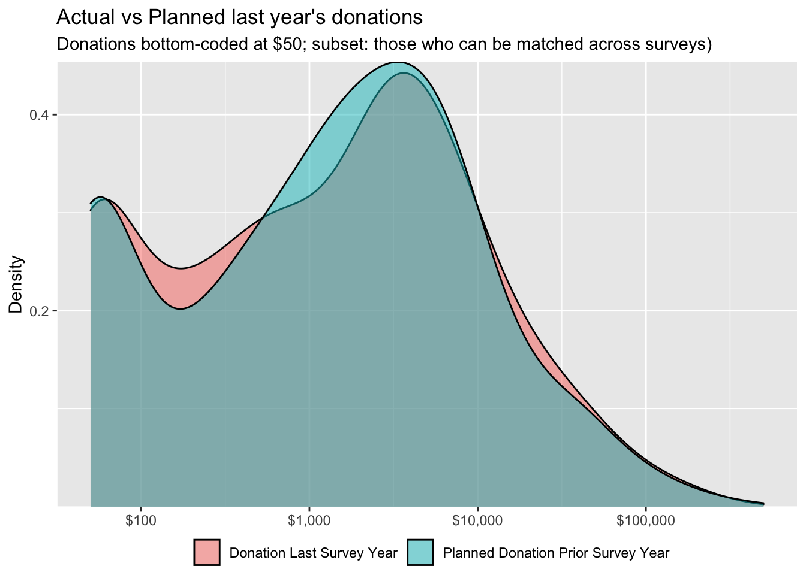
We separate the above graph by whether the individual made a GWWC pledge:
( planned_actual_gwwc <- planned_actual_ly_ty_l %>% rowwise() %>% mutate(value = max(value, 50)) %>% ungroup() %>% filter(!is.na(action_gwwc)) %>% mutate(action_gwwc = as.factor( if_else(action_gwwc == 1, "GWWC Pledge", "No GWWC Pledge") ) )%>% # mutate(value = value + 1) %>% ggplot() + geom_density(aes(x = value, fill = donation_type), alpha = 0.5) + scale_x_log10(labels = scales::label_number_si(prefix = "$")) + ggtitle("Actual vs Planned 2019 donations by 'made GWWC pledge'", subtitle="Linked individuals, log scale") + xlab("Donation value, bottom-coded at $50") + ylab("Density") + facet_grid(action_gwwc ~ . ) + scale_fill_discrete(name = "", labels = to_title_case(unique(planned_actual_ly_ty_l$donation_type))) )
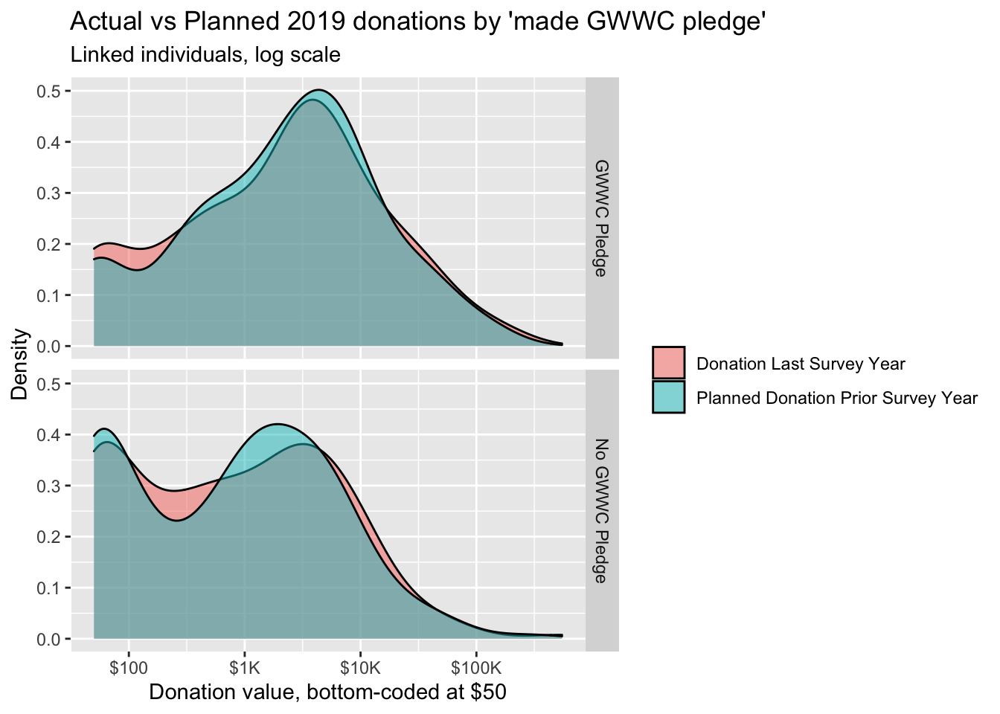
#TODO (\@oska) -- maybe do this specifically for a year in which there is a large gap in timing -- perhaps 2018 is the best as it was <ay (1/2 the year) and we think it's a reliable data year #TODO: Med-high -- test for difference in planned and actual (a 'shift') and ideally test for a difference in difference between GWWC and non-GWWC
We ran a series of simulation-based ‘permutation tests’ to consider compare the medians and means of the distributions of planned and actual donations for these linked individuals. Results are included in the table “Actual minus planned donations for 2019, linked participants (2019 - 2020)” in the section Planned vs. actual: All respondents. …
Donations versus plans (same individuals, linked)
While the graphs and figures above help us understand whether the distribution of planned and actual gifts differ, it does not tell us whether any individual’s donation meets or exceeds his or her plan. As we are considering individuals present in both surveys, we can connect their donation responses across years.
The graph below shows the distribution over the difference in planned and actual 2019 donations for those matched across the years. Here a negative value corresponds to an actual donation being lower than planned.
#TODO [Medium-High] -- incorporate it in so it will work for split plots, for 'same year', etc. m_dd <- planned_actual_ly_ty %>% transmute(don_diff = donation_last_survey_year - planned_donation_prior_survey_year) %>% ungroup() %>% dplyr::summarize(mn_dd=mean(don_diff, na.rm=TRUE), med_dd = median(don_diff, na.rm=TRUE) ) ( actual_planned_2019 <- planned_actual_ly_ty %>% transmute(don_diff = donation_last_survey_year - planned_donation_prior_survey_year) %>% ggplot(aes(x = don_diff)) + geom_density(alpha=0.5, fill="blue") + scale_x_continuous(trans = pseudo_log_trans(base=10), breaks = c((-1)*breaks*2, breaks*2), labels = label_number_si(prefix = "$")) + geom_vline(xintercept=m_dd$mn_dd, size=1.5, color="green") + # this code is lame, we can improve it geom_vline(xintercept=m_dd$med_dd, size=1.5, color="red") + # this code is lame, we can improve it geom_vline(xintercept=0) + # coord_flip() + labs(title = "Last year's donations: actual minus previously planned", caption = "Red line: Median, Green line: Mean" ) + xlab("Actual - planned for same year") + ylab("") )
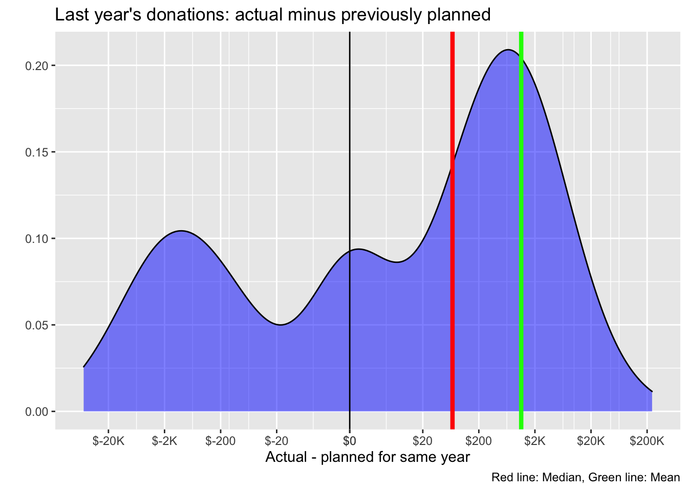
# TODO: keep improving this guy
Planned and actual donations are… highly correlated (\(\rho =\) 0.948).
… In fact, the mean difference between donation and plan is 1,139 USD in excess of plan (the green line), while the median of the differences is 67.9 USD.
Considering that the zeroes might have been quick and uncareful mis-responses, we repeat the same plot for those who report positive planned and actual donations in the consecutive years, and compare these for GWWC pledgers versus non-pledgers:
( actual_planned_2019_no_0_bygwwc <- planned_actual_ly_ty %>% filter(!is.na(action_gwwc)) %>% filter(donation_last_survey_year>0 & planned_donation_prior_survey_year>0) %>% mutate(don_diff = donation_last_survey_year - planned_donation_prior_survey_year) %>% ggplot(aes(x = don_diff, y = as.factor(action_gwwc), fill = factor(stat(quantile)))) + stat_density_ridges( geom = "density_ridges_gradient", calc_ecdf = TRUE, quantiles = 4, quantile_lines = TRUE ) + scale_fill_viridis_d(name = "Quartiles") + scale_x_continuous(trans = pseudo_log_trans(base=10), breaks = c((-1)*breaks*2, breaks*2), labels = label_number_si(prefix = "$")) + geom_vline(xintercept=0) + ggtitle("2019 donations (no zeroes): actual minus planned, by GWWC-pledge") + xlab("") + ylab("") )
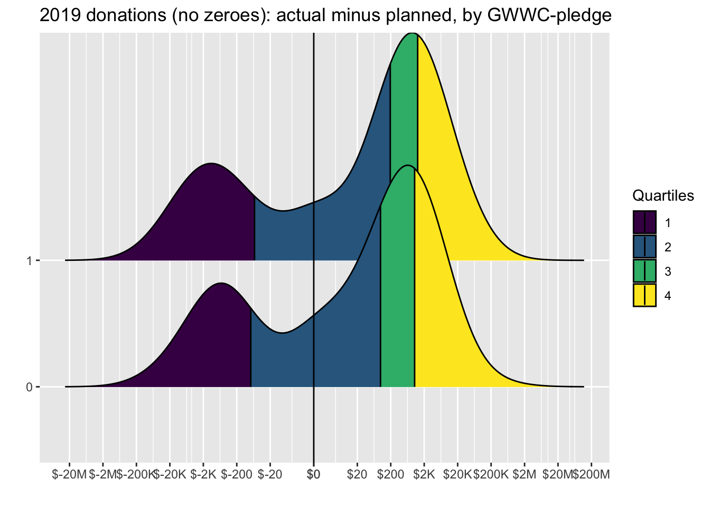
…
We next present a scatterplot of planned versus actual donations for 2019, for those who can be matched across surveys. In the figure below, the brightness of a color indicates the density of respondents (number of ‘neighbors’) with a particular combination of planned and actual donations.
planned_actual_ly_ty_pointdensity
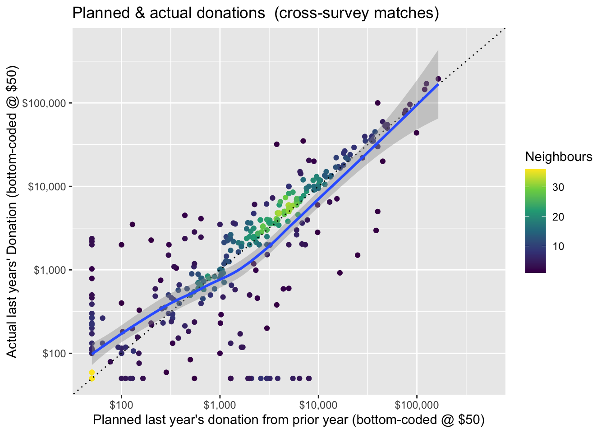
Overall, the plot is more or less centered around the 45 degree line of ‘plans=actual.’ There are noticeable departures in each direction, but these seem to balance out. Thus, we might loosely conclude that ‘on average 441 individuals who can be matched across years tend to donate an amount close to what they planned.’ However, there may nonetheless be important differences, so we test further.
Below, we plot donations for these linked individuals – actual donations are on the left, and planned donations are on the right. We overlay a ‘violin’ density plot (widths depicts the frequencies). Medians are depicted in red dots, and the boxes depict 25th and 75th percentiles. The lines show each individual’s donation (on the left) connected to her plan (on the right). The plot also reports on a Wilcoxon signed-rank test (for paired data).
( matched_dons_wilcoxon <- planned_actual_ly_ty_l %>% mutate(donation_type = to_title_case(donation_type)) %>% ggstatsplot::ggwithinstats( x = donation_type, y = value, type = "nonparametric", paired = TRUE, point.path.args = list(alpha = 0.1, linetype = "solid"), ) + do.call(scale_y_continuous, scales) + xlab("") + ylab("") + scale_fill_discrete(name = "") )
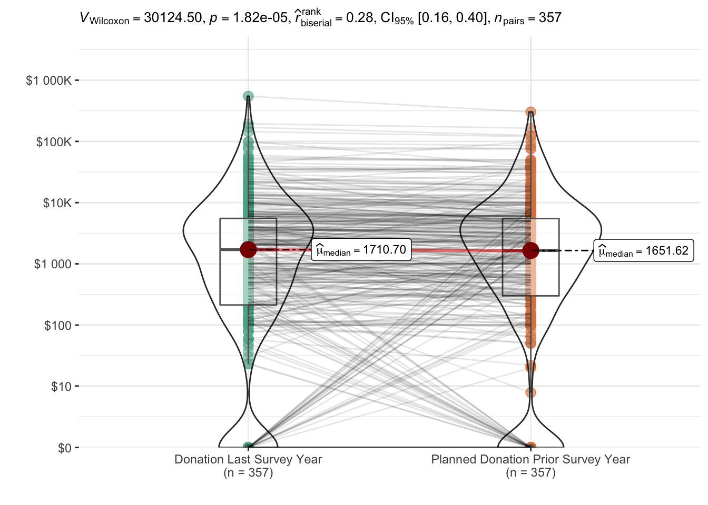
w_signed_test_planned_actual <- wilcox.test(x = planned_actual_ly_ty$donation_last_survey_year, y = planned_actual_ly_ty$planned_donation_prior_survey_year, alternative = c("greater"), mu = 0, paired = TRUE, exact = NULL, correct = TRUE, conf.int = TRUE, conf.level = 0.95, tol.root = 1e-4, digits.rank = Inf) #a Wilcoxon signed rank test of the null that the distribution of ... x - y (in the paired two sample case) is symmetric about mu is performed. #Here the CI estimates 'the median of the difference between a sample from x and a sample from y.'
The nonparametric tests reported above find a statistically significant difference: actual donations tend to exceed planned donations in this sample, and this difference is unlikely to be due to chance. The ‘pseudo-median’ of this difference is estimated as 281 USD with 95% lower CI bound 162. The “matched-pairs rank-biserial correlation” is also bounded between about 0.17 and 0.41, suggesting that “actual donation exceeds planned donation” is more likely than “planned exceeds actual” (in the population that this is drawn from).
# For those who report a donation in each year... planned_actual_ly_ty_no_0 <- planned_actual_ly_ty %>% filter(donation_last_survey_year>0 & planned_donation_prior_survey_year>0) w_signed_test_planned_actual_no0s <- wilcox.test(x = planned_actual_ly_ty_no_0$donation_last_survey_year, y = planned_actual_ly_ty_no_0$planned_donation_prior_survey_year, alternative = c("greater"), mu = 0, paired = TRUE, exact = NULL, correct = TRUE, conf.int = TRUE, conf.level = 0.95, tol.root = 1e-4, digits.rank = Inf) #a Wilcoxon signed rank test of the null that the distribution of ... x - y (in the paired two sample case) is symmetric about mu is performed. #Here the CI estimates 'the median of the difference between a sample from x and a sample from y.'
We next present simulation-based tests for whether the mean and median of the individual ‘actual minus planned’ donations exceeds or falls below zero.
planned_v_actual_test_table
| Statistic | Point estimate | CI Lower | CI Upper | P-value |
|---|---|---|---|---|
| Mean | 1587 | -279 | 3453.648 | 0 |
| Median | 141 | 23 | 259.456 | 0 |
linked_ddmn <- linked_tests_results %>% filter(response=="don_diff" & stat=="mean") linked_ddmed <- linked_tests_results %>% filter(response=="don_diff" & stat=="median")
The mean of ‘actual minus planned’ donations is 1,587 USD, with simulation-based (bootstrapped) confidence intervals [-279, 3,454], with corresponding p-value 0.138. For the median of this difference we have point estimate 141 USD, with simulation-based (bootstrapped) confidence intervals [22.5, 259], with corresponding p-value 0.102. Thus, the evidence points towards ‘actual donations exceeding planned donations for those EAs who can be linked across the past two years.’
Planned vs. actual: All respondents (across relevant years)
Those who responded to both 2019 and 2020 surveys (and left emails both times) might tend to be the more engaged EAs, suggesting that the above figures may be biased towards more ‘fulfilled plans.’21
Thus, we next overlay the planned and actual donations for all respondents across both surveys.22
Indeed, ‘2019 respondents who entered a planned donation amount’ (call these ‘2019-planners’) may not be precisely representative of the population of interest. Still, we might at least seek an ‘internally-valid’ measure of the ‘distribution of actual 2019 donations for the 2019-planners,’ and compare their actual to their planned 2019 donations. This will still be imperfect: the composition of the 2019 and 2020 respondents may differ, as discussed elsewhere.
Thus, the distribution of ‘reported 2019 donations for those who completed the survey in 2020’ (call these ‘2020-reporters’) may be different from the distribution of the actual 2019 donations made by 2019-planners. The direction and nature of this bias is unclear; we might get some hints at this by comparing the reported donations in 2018 and 2019 respectively by 2019-reporters and 2020-reporters. If the distribution of donations changes little from year to year, we might worry less about this bias. We defer this for future work.
Below, we also report these measures for those who joined EA only before 2019 (plausibly a more stable group).
( dons_planned_across_all <- eas_all %>% f_don_plan_by_year %>% ggplot(aes(x = value, y = as.factor(year), fill = donation_type)) + geom_density_ridges(alpha=.6, color = "black", quantile_fun = median, quantile_lines = TRUE, rel_min_height = 0.005) + # geom_vline_med(x) + scales_set + ridge_bottom_opts + xlab("") + guides(fill = guide_legend(override.aes = list(linetype = 0))) + labs(title= "Density of planned and actual donations for each year", subtitle = "Vertical lines: medians for the year and donation type", caption = "Donations bottom-coded at $50") )
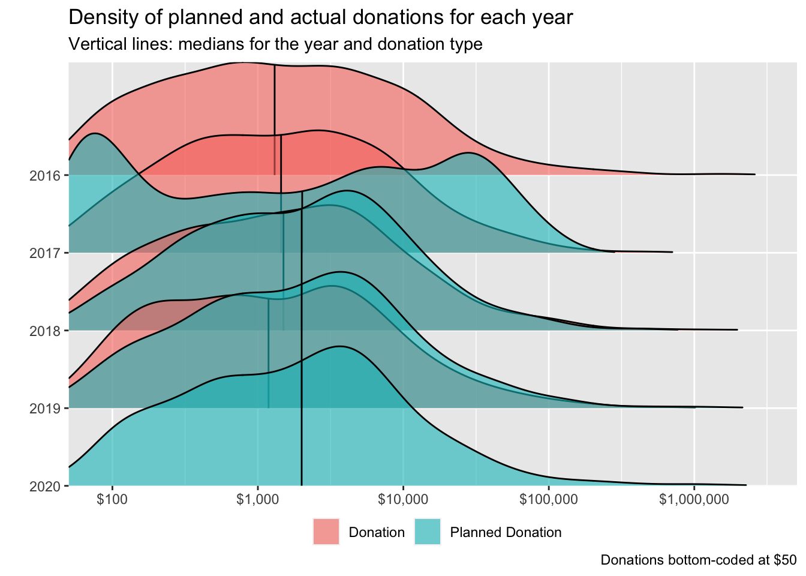
Discussion of above chart:
… For 2019 (2020 survey ‘actual’ and 2019 survey ‘planned’) and 2018 (2019 survey ‘actual’ and 2018 survey ‘planned’), the histograms of planned and actual donations line up approximately (although planned donations tend to be a bit higher). However, for 2017 (2018 survey ‘actual’ and 2017 survey ‘planned’), the planned donation distribution appears far lower. This seems likely to result from a different response and a different composition between the 2017 and 2018 responses.^[There was an increase in the sample size and the response rate to the donation questions from 2017 to 2018 below. We report this in the bookdown ‘robustness’ appendix.]
(Thus we will not include 2017 in our “planned versus actual” comparisons.)
As noted, for the remaining relevant donation years (2018 and 2019) the median donation is somewhat lower than the median planned donation, suggesting under-performance relative to plans.
Over the most recent years, how do the distributions of planned versus actual donations differ?
In spite of the caveats above, we consider and test whether the distribution of planned donations for a year exceeds or falls short of actual donations, pooling across recient years. We do this separately both overall, and excluding those who joined EA only before 2019 (plausibly a more stable group).
#TODO -- medium-high priority: some depiction of quantiles/cutoffs within each smoothed histogram (for all the ones below, even the faceted ones). See, e.g., https://stackoverflow.com/questions/57563692/combining-facet-wrap-and-95-area-of-density-plots-using-ggplot2/57566951#57566951 dons_plan_hist_opts <- function(df) { df %>% ggplot(aes(x = value, fill = donation_type)) + geom_density(alpha=.35) + scales_set + #geom_vline_med(x) + ridge_bottom_opts + xlab("") } #crappy workaround here: x <- eas_all %>% filter(year %in% last_3_years) %>% f_don_plan_by_year xo <- eas_all %>% filter(year_involved<2019) %>% filter(year %in% last_3_years) %>% f_don_plan_by_year x_med_don <- median(x$value[x$donation_type== "Donation"], na.rm=TRUE) x_med_don_plan <- median(x$value[x$donation_type== "Planned Donation"], na.rm=TRUE) xo_med_don <- median(x$value[xo$donation_type== "Donation"], na.rm=TRUE) xo_med_don_plan <- median(xo$value[x$donation_type== "Planned Donation"], na.rm=TRUE) dons_planned_last_2_years <- eas_all %>% filter(year %in% last_3_years) %>% f_don_plan_by_year %>% rowwise() %>% mutate(value = max(value, 50)) %>% ungroup() %>% dons_plan_hist_opts + geom_vline(xintercept=x_med_don, size=.5, color="green") + geom_vline(xintercept=x_med_don_plan, size=.75, color="pink") + ggtitle("2018-19") dons_planned_last_2_years_no_new <- eas_all %>% filter(year_involved< year_n-1) %>% filter(year %in% last_3_years) %>% f_don_plan_by_year %>% dons_plan_hist_opts + geom_vline(xintercept=xo_med_don, size=.5, color="green") + geom_vline(xintercept=xo_med_don_plan, size=.75, color="pink") + ggtitle("2018-19") ( dons_planned_last_2_years_arr_new <- ggarrange(dons_planned_last_2_years, dons_planned_last_2_years_no_new, ncol = 2, nrow=1, labels=c("All", "Involved pre-last-year"), label.x=0.0, label.y=0.85, legend="bottom", common.legend=TRUE ) + labs(title= "Density of planned and actual donations, split by year-invo", subtitle = "Vertical lines: medians for the group and donation type", caption = "Donations bottom-coded at $50") )
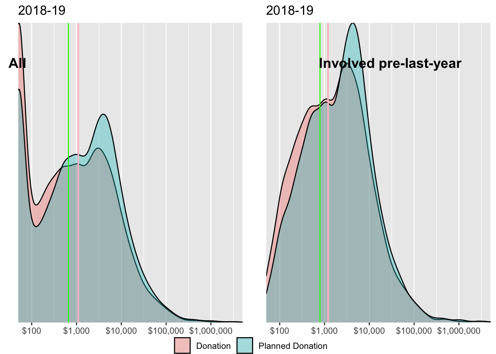
#todo (@oska) -- finish this; separate aligned plots for # - is it doing what I think? I think we want to use 2020 for the sums in 'actual' but not in 'planned' # - align the above, fix labels # - report some more stats within each as 'bars' or shading (geom lines could also be good) # - stat tests for each
Above, we give the density of planned and actual donations, split by year-involved. Vertical lines represent medians for the group and donation type (green=donation, pink=planned donations). Donations are bottom-coded at 50 USD. Again, for both groups (where the survey entries are linked) the planned donation distribution appears to be somewhat higher than the actual distribution, although the difference is not dramatic.
We present the results of simulation-based permutation tests below. (Explanation in fold).
Explanation of permutation tests:
We use permutation tests for testing whether the median (and mean) of planned donations exceeded/fell short of the mean for actual donations, but using the data from different years’ surveys (without connected individuals).
The null hypothesis (for 2019 donations) is that:
‘there is no difference in the median donation, in our survey sample, between actual 2019 donations (reported in 2020) and planned 2019 donations (reported in 2019).’
Suppose we maintain the hypothesis that
‘individuals appeared in the 2019 survey versus the 2020 survey ’as if randomly drawn’’, and we consider that under the null hypothesis “the distribution of planned and actual donations is identical” (this may be a stronger assumption than needed).
The permutation procedure repeatedly simulates a distribution of planned and actual donations that is consistent with this null, by using our original donation amount data and randomly re-assigning each observation to either ‘planned’ or ‘actual.’ For each ‘simulated null distribution’ we can then compute the targeted statistic (difference between mean/median donation between the two groups). We can plot this ‘simulated null distribution of differences’ and consider ‘how often do we observe a difference as extreme as the ’point estimate’ from our actual data’? This yields the p-values reported below.
The confidence intervals for the differences come from simply using the 95% interval range from the simulated distribution, shifted to be centered around our point estimate.
The figure below presents the simulated null distribution of differences in medians arising from this procedure, for the full sample (2018 - 2019 donation years).
NOTE: we lost the image here
Explanation:
The red line gives the point estimate of ‘differences in median between planned and actual’ from our data. The grey bins present the ‘(simulated) distribution of differences between planned and actual, under the null hypothesis that planned and actual are drawn from the same distribution.’
The ‘pink areas’ depict the area of the simulated null distribution that is ‘more extreme’ than our point estimate; this iis the area represented by the ‘p-value’ of a two-tailed hypothesis test.
Finally the turquoise should represent a 95% CI for the actual median; essentially this comes from a simulated distribution under the hypothesis that the true difference between the medians is exactly equal to our point estimate.
Note that this turquoise region just crosses the 0, again confirming that we ‘just barely cannot reject the null,’ but that a Bayesian analysis would probably put a lot of probability mass on fairly substantial differences.
In the table below we summarize the results of this test for means and medians, and for four distinct subsamples.
planned_actual_unlinked_results_table
| Sample | Statistic | Point estimate | CI Lower | CI Upper | P-value |
|---|---|---|---|---|---|
| ‘Matched individuals’ | Difference in Mean | 1449 | -2599 | 5496 | 0.504 |
| ‘Matched individuals’ | Difference in Median | 94 | -757 | 945 | 0.868 |
| Full sample (2018-19 donation years) | Difference in Mean | -2354 | -7288 | 2579 | 0.366 |
| GwwC only (2018-19 don) | Difference in Mean | -235 | -10853 | 10384 | 0.970 |
| Involved before last year (2018-19 don) | Difference in Mean | -1293 | -6742 | 4156 | 0.684 |
| Full sample (2018-19 donation years) | Difference in Median | -458 | -608 | -308 | 0.000 |
| GwwC only (2018-19 don) | Difference in Median | -1027 | -1469 | -586 | 0.000 |
| Involved before last year (2018-19 don) | Difference in Median | -157 | -336 | 23 | 0.008 |
# report on #test_rep_mean_don_19_20 #test_rep_med_don_19_20 #test_rep_mean_don_19_20_gwwc #test_rep_med_don_19_20_gwwc #test_rep_mean_don_19_20_nonew #test_rep_med_don_19_20_nonew
For the full sample, for the subset who have been in EA since before 2019, and for GWWC pledgers, both the mean and median donations […] fall short of the planned donations. Overall, the difference in medians is bounded between about …
… re-state results… This contrasts with 23
2.8 Donations versus next year’s plans
[…] In each of the years where it was asked, most respondents who answered the retrospective donation question also answered the ‘planned for this year’ question. We can see how these tend to relate; we may particularly consider whether 2020 donations are expected to be higher or lower than 2019, in light of recent events.
Below we overlay the distribution of ‘last year’s donations’ and ‘planned current year’ donations for the most recent surveys.
next_don_lab <- c(donation_c = "Don: Last year", donation_plan_c = "Don: This year (plan)") ( dons_v_next_last_2_years <- eas_all %>% f_don_last_3 %>% ggplot(aes(x = value, y = as.factor(year), fill = donation_type)) + geom_density_ridges(alpha=.6, color = "black", quantile_fun = median, quantile_lines = TRUE) + # geom_vline_med(x) + scales_set + ridge_bottom_opts + guides(fill = guide_legend(override.aes = list(linetype = 0))) + labs(title= "Density of last year vs current year planned donations", subtitle = "Vertical lines: medians for the year and type of report") + scale_color_brewer(labels=next_don_lab) + scale_fill_brewer(labels=next_don_lab) + xlab("") + theme(legend.title=element_blank()) + guides(fill = guide_legend(reverse = TRUE)) )
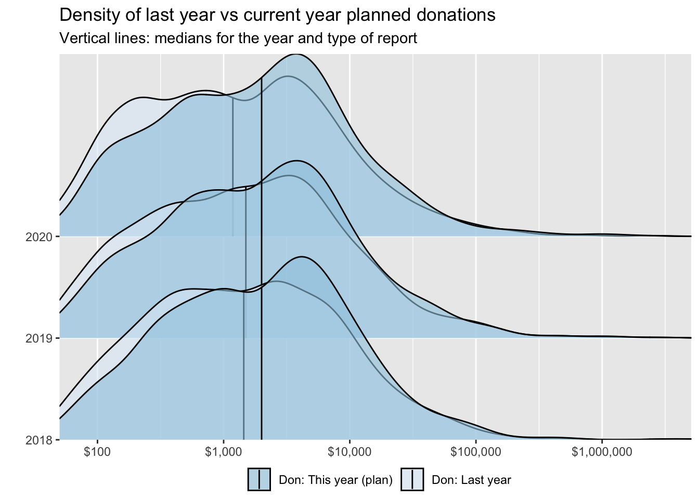
# Todo - medium: It's still not clear what is going on from year to year... maybe try animated? # Todo -- medium/high: get bars or color separation for quantiles (probability mass) within each histogram
Next we plot this in two dimensions: for each individual we plot their planned current year’s donation against their reported donation for the year prior to the survey.
current_planned_eas <- eas_all %>% select(ea_id, donation_c, donation_plan_c, year) %>% # Add demographic information -- cut because it was crap #left_join(., select(eas_new_cy, all_of(demographics), ea_id, action_gwwc, start_date, end_date, income_c), by = "ea_id") %>% #remove likely duplicate entries (do that elsewhere too?) ; this also removes entries from years without any responses to these I guess distinct()
( current_planned_pointdensity <- current_planned_eas %>% # ggplot(aes(y = donation_2019, x = donation_plan_c)) + filter(year>=2018) %>% rowwise() %>% mutate(donation_c = max(50, donation_c), donation_plan_c = max(50, donation_plan_c)) %>% ungroup() %>% ggplot(aes(x = donation_c, y = donation_plan_c)) + ggpointdensity::geom_pointdensity(adjust = 0.25) + geom_smooth() + do.call(scale_x_continuous, scales_point_density_min50) + do.call(scale_y_continuous, scales_point_density_min50) + scale_color_viridis_c("Neighbours") + #scale_size_continuous("Income", labels = scales::label_number_si()) + ylab("Planned (next year's) Donation") + xlab("Actual (this year's) donation") + labs(title= "Last year's donation vs this year's (planned) donation", subtitle = "most recent years; donations 'bottom-coded' at 50 USD") )
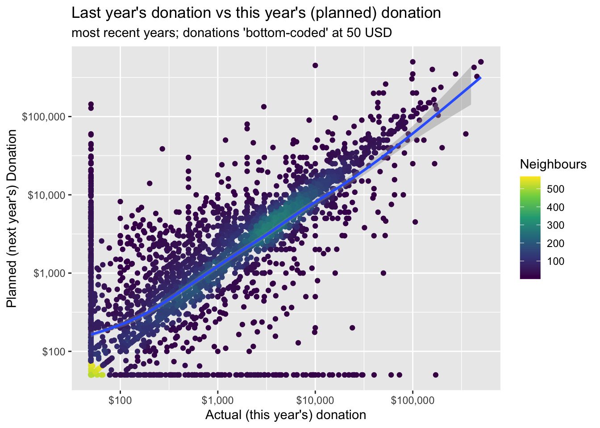
#TODO: --medium importance -- facet or animate this across years'
The graph’s implications
We repeat the above plot but only for those who report positive values for both ‘the previous year’ and for ‘planned for this year’:
( current_planned_pointdensity_no0 <- current_planned_eas %>% # ggplot(aes(y = donation_2019, x = donation_plan_c)) + filter(donation_c >0 & donation_plan_c>0) %>% filter(year_n-2>=2018) %>% rowwise() %>% mutate(donation_c = max(50, donation_c), donation_plan_c = max(50, donation_plan_c)) %>% ungroup() %>% ggplot(aes(x = donation_c, y = donation_plan_c)) + ggpointdensity::geom_pointdensity(adjust = 0.25) + geom_smooth() + do.call(scale_x_continuous, scales_point_density_min50) + do.call(scale_y_continuous, scales_point_density_min50) + scale_color_viridis_c("Neighbours") + #scale_size_continuous("Income", labels = scales::label_number_si()) + ylab("Planned (next year's) Donation") + xlab("Actual (this year's) donation") + labs(title= "Last year's vs this year's (planned) donation", subtitle = "For EAs reporting a positive amount for each", caption="Last twi tears, donations 'bottom-coded' at 50 USD" ) )
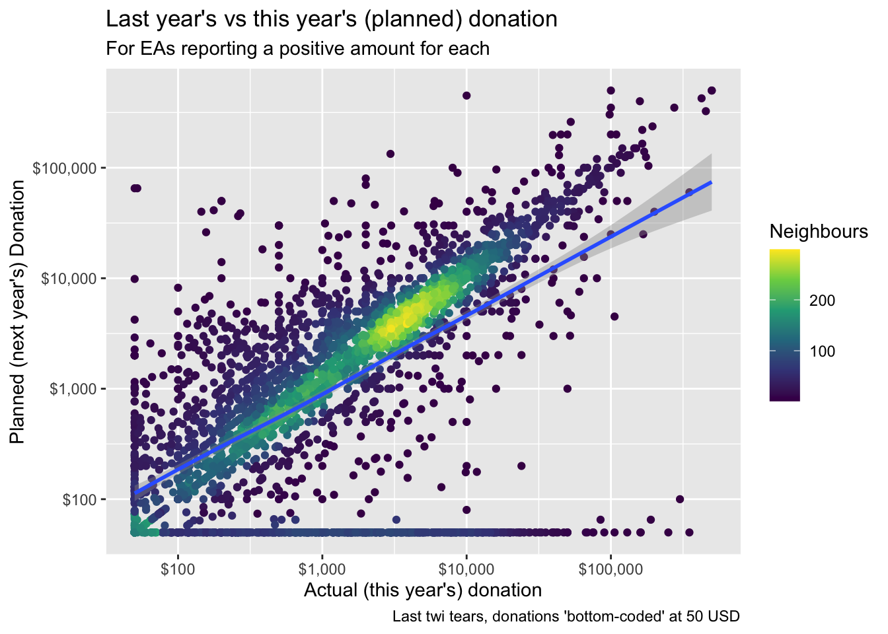
#TODO: --medium importance -- facet or animate this across years'
Simulation-based tests
(1) (Unpaired) differences in the medians and means of distributions
next_current_unlinked_results_table
| Sample | Statistic | Point estimate | CI Lower | CI Upper | P-value |
|---|---|---|---|---|---|
| most recent years, all responses | Difference in Mean | 1632.8 | -2425.845 | 5691.4 | 0.4 |
| most recent years, all responses | Difference in Median | 437.7 | 307.885 | 567.5 | 0.0 |
The median is higher (by 438 USD point estimate).
(2) Differences by individual:
#report-test_rep_next_d_don_med_18_20-etc current_next_test_table
| Statistic | Point estimate | CI Lower | CI Upper | P-value |
|---|---|---|---|---|
| Mean | 1452 | 351 | 2553 | 0.012 |
| Median | 0 | 0 | 0 | 1.000 |
Discussion: …
2.9 Model of EA donation behavior
Modeling ‘questions’ and approaches:
We differentiate three categories of modeling: descriptive, predictive, and causal. We discuss these further [Link to methods bookdown here].
The three categories, briefly:
The three categories are
- Descriptive (‘what relates to donation behavior’),
- Predictive (‘what will people with particular characteristics donate in the future’), and
- Causal (‘what factors actually determine the amount donated’; so if we changed these factors, donations would change).
Brief: why might we care about causality here?
We may care about causality
because we see potential to intervene and boost those variables that cause greater giving, and/or because
a better understanding of what actually drives donation behavior may yield additional insights, helping us understand the world better
Brief: why might we care about prediction here?:
We may care about prediction because
(… add brief discussion here)
2.9.1 Descriptive (and causally-suggestive) models
Brief: our descriptive model ‘selection’
In our descriptive modeling we do not remove ‘insignificant’ features from the model (as in stepwise regression), nor do we shrink the coefficients towards zero (as in Ridge and Lasso models). Under the assumptions of the classical linear model and its simple extensions the coefficients we present here would be unbiased or consistent. (However, we admit that the strong assumptions of this model, particularly those embodying exogeneity, are likely to fail in important ways in the current non-experimental setting.)
We retain those features of most direct interest (such as ‘how introduced to EA’) and/or theoretical importance (such as income),24 and ‘controls’ (especially time-in-EA and survey-year) that might allow us to better interpret the features of interest.25
Choosing features and modeling targets
We construct several ‘feature sets’:
- “Key demographics, student status, and geography,” used in all models
- “Career/Economics”: (Income, employment status, top-6 university)26
- “Pledges/commitments:” Whether ever taken a ‘Giving What We Can Pledge,’ whether ‘Earning to Give’
- “Controls” for age, time-in-EA, and survey-year (used in all models)27
We focus on three key outcomes:
Amount donated (converted to US dollars)28
Donation as a share of income29
Whether donated more than 1000 USD
# Define vector for renaming terms in regression output #"new_names'" moved to `build/labeling_eas.R'
#TODO - medium -- try to move all this to build side #We impute variables where missing and normalizing all variables to be mean-zero and to be on the same scale. diqr <- function(x) { (x - mean(x, na.rm=TRUE))/IQR(x, na.rm=TRUE) } gtmed <- function(x) { x*(x>med(x)) } #TODO -- HIGH importance -- why 43 missing values for donation_c? eas_all_s <- eas_all %>% filter(!is.na(don_av2_yr) & year_f %in% last_3_years) %>% mutate( #(re) code scaling and 2-part splits for the modeling sample (2018-20, reporting donations) age_d2sd = arm::rescale(age), #Todo (automate this with `mutate(across)` thing) age_if_older = gtmed(age), ln_age_if_older = gtmed(ln_age), ln_years_involved_post_med = gtmed(ln_years_involved), years_involved_d2sd = arm::rescale(year - as.numeric(year_involved)), years_inv_d2sd_post_med = gtmed(years_involved_d2sd), income_c_imp_diqr = diqr(income_c_imp_bc5k), age_d2sd_post_med = arm::rescale(age_if_older), income_c_imp_diqr_if_richer = gtmed(income_c_imp_diqr), ln_income_c_imp_if_richer= gtmed(ln_income_c_imp_bc5k) ) %>% rowwise() %>% mutate(don_share_inc_imp_bc5k = min(don_share_inc_imp_bc5k, 1)) %>% #recode about 84 values so the range is between 0-1 for frac. logit to work ungroup() %>% dplyr::select(all_of(c(num_out, bin_out, controls, key_demog, feat_income_employ, feat_gwwc_etg, robust_controls)), income_c, income_c_imp, income_c_imp_bc5k, income_c_imp_diqr, income_c_imp_diqr_if_richer, first_hear_ea_lump, years_involved, age, contains("d2sd"), contains("iqr")) %>% #I have added first_hear_ea_lump back even though we don't use it here because we want to use it in ML; I hope it doesn't mess anything up # years_involved included to put in sumstats labelled::set_variable_labels(.labels = as.list(key_eas_all_labels), .strict=FALSE) #Recode missing as 0 for all dummies, as a 'NA category' for categoricals #also for normalized variables; i.e., set missings to the mean eas_all_s_rl <- eas_all_s %>% mutate(across(matches("d_|not_just_white"), missing_to_zero)) eas_all_s_rl_imp <- eas_all_s_rl %>% mutate(across(matches("d2sd|diqr"), missing_to_zero)) %>% labelled::set_variable_labels(.labels = as.list(key_eas_all_labels), .strict=FALSE) #TODO: (future) -- check for sensitivity to this imputation vs dropping these obs # Write imp dataset to csv and RDS for ML/predictive modeling in donation_pred.R etc. saveRDS(eas_all_s_rl_imp, file = here("data","edited_data","eas_all_s_rl_imp.Rdata")) eas_all_s_rl_imp %>% write_csv(here("data", "edited_data/eas_all_s_rl_imp.csv"))
count_uniq <- eas_all_s_rl %>% #counts of unique values for each feature in each year grp_uniq(year_f) recover_cols <- count_uniq %>% #any columns *without* unique features in each year? select_if(~ any(.==1))%>% names()
We report summary statistics on a selection of these features and target outcomes below, limited to the subset who report a zero or positive previous or current-year donation (as in our modeling).
#don_inc_career_tab ( don_inc_career_tab <- eas_all_s_rl_imp %>% filter(!is.na(don_av2_yr)) %>% mutate(`Earn-to-give` = as.factor(d_career_etg), `GwwC` = as.factor(d_gwwc_ever_0)) %>% ungroup() %>% filter(year_f %in% last_3_years) %>% dplyr::select(starts_with("don"), starts_with("d_don"), starts_with("inc"), -income_c_imp_diqr, d_pt_employment, d_not_employed, `Earn-to-give`, `GwwC`) %>% dplyr::select(-starts_with("l_"), -d_don_10pct, -ends_with("d2sd"), -matches("_if_|_post_")) %>% .summ(title = "Donations, income, career, most recent years, (subset: reporting 0+ donation)", digits = c(0,0,1,1,2,1), labels=TRUE, logical.labels = c("No", "Yes"), factor.counts = FALSE, out="kable") %>% kable_styling() )
| Variable | N Responses | N positive | Mean | Sd | Median | 90th pct |
|---|---|---|---|---|---|---|
| donation_c | 5016 | 4157 | 8992.3 | 106108.5 | 660 | 10059.9 |
| Don. ‘avg’ | 5059 | 4528 | 9633.8 | 103967.3 | 1000 | 12000 |
| Don./Income (imp, bc) | 5015 | 4157 | 0.1 | 0.1 | 0.02 | 0.1 |
| donation_plan_c | 4870 | 4201 | 10625.1 | 107729.9 | 1097.69 | 13000 |
| Don. > 1k USD | 5016 | |||||
| … FALSE | 54% | |||||
| … TRUE | 46% | |||||
| Income (not imp.) | 4887 | 4518 | 83066.8 | 1314897.6 | 33956.11 | 130075.8 |
| Income (imp.) | 5058 | 5058 | 83540 | 1292509.5 | 36000 | 130000 |
| Income (imp. bc) | 5058 | 5058 | 83794.8 | 1292493.7 | 36000 | 130000 |
| Employed PT | 5059 | 474 | 0.1 | 0.3 | 0 | 0 |
| Not Employed | 5059 | 260 | 0.1 | 0.2 | 0 | 0 |
| Earn-to-give | 5059 | |||||
| … 0 | 70% | |||||
| … 1 | 30% | |||||
| GWWC (ever) | 5059 | |||||
| … No/NA | 66% | |||||
| … Yes | 34% |
Above, we report donations, income, career, and GWWC pledge rates. …
#TODO for future posts/time permitting: split by 'whether reported donation', test for differences ( demog_etc_tab <- eas_all_s_rl_imp %>% ungroup() %>% filter(year_f %in% last_3_years) %>% droplevels() %>% filter(!is.na(don_av2_yr)) %>% dplyr::select(-contains("don"), -starts_with("d_don"), -starts_with("inc"), -starts_with("ln_"), -d_don_10pct, -ln_income_c_imp_bc5k, -matches("d2sd|_if_|_post_")) %>% select(-d_pt_employment, -d_not_employed, -d_career_etg, -d_gwwc_ever_0, -first_hear_ea_lump, -year_f, -years_involved, -age) %>% select(everything()) %>% labelled::set_variable_labels(.labels = as.list(key_eas_all_labels), .strict=FALSE) %>% sumtable( labels = TRUE, #uses assigned in Hmisc or sjlabelled simple.kable = TRUE, title = "Demography etc., most recent years (subset: reporting 0+ donation)", digits = 1, factor.counts = FALSE, out="kable" ) %>% kable_styling() )
| Variable | N | Percent |
|---|---|---|
| Gender | 5059 | |
| … Male | 69% | |
| … Not-male | 28% | |
| … Gender: No response | 3% | |
| Student | 5059 | |
| … Non-student | 67% | |
| … Student | 33% | |
| … Student: No response | 0% | |
| Race/ethnicity | 5059 | |
| … Just white | 80% | |
| … NA | 4% | |
| … Not just white | 16% | |
| Where live | 5059 | |
| … USA | 35% | |
| … Can/Aus/NZ | 12% | |
| … Country: No response | 12% | |
| … EEA not Anglo | 22% | |
| … Other | 4% | |
| … UK/IR | 15% | |
| City | 5059 | |
| … Other | 42% | |
| … City: No response | 14% | |
| … Named big city | 44% | |
| Top-6 Uni. | 5059 | |
| … No | 46% | |
| … NA | 47% | |
| … Yes | 7% |
( year_etc_tab <- eas_all_s_rl_imp %>% ungroup() %>% filter(year_f %in% last_3_years) %>% droplevels() %>% filter(!is.na(don_av2_yr)) %>% dplyr::select(year_f, years_involved, age) %>% labelled::set_variable_labels(.labels = as.list(key_eas_all_labels), .strict=FALSE) %>% sumtable( labels = TRUE, #uses assigned in Hmisc or sjlabelled simple.kable = TRUE, title = "Year, years-involved, age; most recent years (subset: reporting 0+ donation)", digits = 1, factor.counts = FALSE, out="kable") %>% kable_styling() )
| Variable | N | Mean | Std. Dev. | Min | Pctl. 25 | Pctl. 75 | Max |
|---|---|---|---|---|---|---|---|
| Year of survey | 5059 | ||||||
| … 2018 | 38% | ||||||
| … 2019 | 34% | ||||||
| … 2020 | 28% | ||||||
| Years in EA | 4871 | 3.7 | 2.4 | 0.5 | 1.5 | 5.5 | 11.5 |
| age | 4430 | 30.2 | 9.8 | 4 | 24 | 33 | 102 |
As the table above suggests, we are modeling the most recent EA survey years … only, with roughly … shares of each year … The largest (or plurality) demographic groups (as in the sample overall, see other posts) are …
Constructing models
We focus on the following modeling specifications:30
Proportional-effects ‘Quasi-Poisson’ model for ‘amount donated’ outcomes (allowing the expected donation to be an exponential function of the features).31
Fractional logit (Papke & Wooldridge (2008)) ‘donation as a share of income’
Logit regression for the binary ‘donated over 1000 USD’ outcome
# Define models (For LINEAR models ... used only in appendix, but some of these are reused in other models) #----------------------------------------------------- feat_list = list( #better to make this a 'named list'? (TODO -- @oska would that improve the code?) c(key_demog, feat_income_employ, controls), c(key_demog, feat_income_employ, controls, robust_controls), # c(key_demog, feat_income_employ, feat_fh, controls, robust_controls), #robust controls here because 'first heard' is likely entangled with tenure and age c(key_demog, feat_income_employ, feat_gwwc_etg, controls) ) feat_list_n = list( #better to make this a 'named list'? (TODO -- @oska would that improve the code?) c(key_demog_n, feat_income_employ_n, controls_n), c(key_demog_n, feat_income_employ_n, controls_n, robust_controls_n), c(key_demog_n, feat_income_employ_n, feat_gwwc_etg, controls_n) ) feat_names = c("Baseline", "Robust controls", "Base + EtG & GWWC") rhs_vars_list <- rep(feat_list, length(targets_short)) #rhs_vars_list_iqr <- rep(feat_list_iqr, length(targets_short)) outcome_vars_list <- rep(as.list(targets_short), each=length(feat_list)) dfs <- rep(list(eas_all_s_rl_imp), length(outcome_vars_list))
## Create dataframe for modeling linear_models <- make_model_df(rhs_vars_list, outcome_vars_list, dfs) # Fit linear models linear_models <- linear_models %>% mutate( lm_fit = fit_models( linear_models, "formulas", "dfs", fun = fit_lm) ) #warning `using type = "numeric" with a factor response will be ignored‘-’ not meaningful for factor` # @DR: Why are these models being fit on binary outcomes? DR, @OM: It is fit on all the outcomes including the binary ones, no? However, we haven't reported it yet. Anyways, I think there is still a norm of considering 'linear probability models' in Economics, and arguments on its behalf, at least as a robustness check. # Extract coefficients, fitted and residuals model_feat_names <- rep(c(feat_names), times= length(targets_short)) model_oc_names <- rep(c(targets_short_names), each= length(feat_names)) model_names <- paste(model_oc_names, model_feat_names, sep = ": ")
linear_models <- linear_models %>% mutate(lm_coefficients = map(lm_fit, extract_coefficients, replacement_names = new_names, robust_SE = TRUE), #TODO -fix -- Medium importance (as linear is just for robustness checks...) error/warning: `'^’ not meaningful for factors` lm_resids = map(lm_fit, residuals), lm_fitted = map(lm_fit, fitted)) #note: in modeling_df, lm_fit and qp_fit are the 'model output' objects # `lm_resids` are a list of vectors of residuals from each linear model # `lm_fitted` are a list of vectors of predicted outcomes from each linear model # Error: Problem with `mutate()` column `lm_coefficients`. ## ℹ `lm_coefficients = map(...)`. ## x only 0's may be mixed with negative subscripts <!-- Todo: get Oska's help to run this -->
#trying out some simple models just as a place to test what is going on test_qp <- eas_all_s_rl_imp %>% glm(don_av2_yr ~ ln_income_c_imp_bc5k + ln_age + not_male_cat + student_cat + race_cat + where_live_cat + city_cat + d_pt_employment + d_not_employed + d_top6_uni + ln_years_involved + year_f, family=quasipoisson, data =.) test_fl <- eas_all_s_rl_imp %>% glm(don_share_inc_imp ~ ln_income_c_imp_bc5k + ln_age + not_male_cat + student_cat + race_cat + where_live_cat + city_cat + d_pt_employment + d_not_employed + d_top6_uni + ln_years_involved + year_f, family = quasibinomial('logit'), data = .) test_logit <- eas_all_s_rl_imp %>% glm(d_don_1k ~ age_d2sd + not_male_cat + student_cat + race_cat + where_live_cat + city_cat + income_c_imp_diqr + d_pt_employment + d_not_employed + d_top6_uni + years_involved_d2sd + year_f, family = binomial, data = .)
qp_targets_short <- c("don_av2_yr") qp_outcome_vars <- rep(as.list(qp_targets_short), each=length(feat_list)) # List of outcome variables for quasi-poisson qp_rhs_vars <- rep(feat_list, length(qp_targets_short)) # List of independent variables qp_dfs <- rep(list(eas_all_s_rl_imp), length(qp_outcome_vars)) # List of dataframes to fit models to qp_models <- make_model_df(qp_rhs_vars, qp_outcome_vars, qp_dfs) # Create dataframe for models # Add model names feat_group_names <- c("1. Baseline", "2. Robust controls", "3. Base + ETG + GWWC") qp_model_names <- feat_group_names qp_models <- qp_models %>% mutate(model_name = rep(qp_model_names, length(qp_targets_short))) # Fit quasi-poisson models qp_models <- qp_models %>% mutate( qp_fit = fit_models( qp_models, "formulas", "dfs", fun = fit_glm) ) # Extract coefficients ## Takes a little while, consider parallels package? qp_models_noexp <- qp_models %>% mutate(qp_coefficients = map(qp_fit, extract_coefficients, replacement_names = new_names, exponentiate = FALSE, robust_SE = TRUE), qp_resids = map(qp_fit, residuals), qp_fitted = map(qp_fit, fitted)) qp_models <- qp_models %>% mutate(qp_coefficients = map(qp_fit, extract_coefficients, replacement_names = new_names, exponentiate = TRUE, robust_SE = TRUE), qp_resids = map(qp_fit, residuals), qp_fitted = map(qp_fit, fitted))
#Note: redone/redoing - fractional logit instead of Quasi-poisson with offset #Discussion: fl_targets_short <- c("don_share_inc_imp_bc5k") fl_outcome_vars <- rep(as.list(fl_targets_short), each=length(feat_list)) # List of outcome variables for quasi-poisson fl_rhs_vars <- rep(feat_list, length(fl_targets_short)) # List of independent variables fl_dfs <- rep(list(eas_all_s_rl_imp), length(fl_outcome_vars)) # List of dataframes to fit models to #---------- # Function to remove a particular string from a list #remove_str_list (moved to rstuff functions) # Create dataframe for models fl_models <- make_model_df(fl_rhs_vars, fl_outcome_vars, fl_dfs) fl_models <- fl_models %>% mutate(model_name = rep(feat_group_names, length(fl_targets_short)))
# Fit fractional logit models fl_models <- fl_models %>% mutate( fl_fit = fit_models( fl_models, "formulas", "dfs", fun = fit_glm, family = quasibinomial('logit')) ) # Extract coefficients ## Takes a little while, consider parallels package? fl_models_noexp <- fl_models %>% mutate(fl_coefficients = map(fl_fit, extract_coefficients, replacement_names = new_names, exponentiate = FALSE, robust_SE = TRUE), fl_resids = map(fl_fit, residuals), fl_fitted = map(fl_fit, fitted)) fl_models_noexp_nonrobust <- fl_models %>% mutate(fl_coefficients = map(fl_fit, extract_coefficients, replacement_names = new_names, exponentiate = FALSE, robust_SE = FALSE), fl_resids = map(fl_fit, residuals), fl_fitted = map(fl_fit, fitted)) fl_models <- fl_models %>% mutate(fl_coefficients = map(fl_fit, extract_coefficients, replacement_names = new_names, exponentiate = TRUE, robust_SE = TRUE), fl_resids = map(fl_fit, residuals), fl_fitted = map(fl_fit, fitted))
Models (tables and plots of results; latest years combined)
We put together forest plots of (normalized) coefficients from the distinct set of models outlined above, where these can be compared on the same scales. Specifically, we consider,
- for each of the three key outcomes (‘amount donated (averaged),’ ‘donation as a share of income,’ ‘donated over 1000 USD’),
- models with three specific sets of features, yielding nine models in total (plus robustness checks in the appendix).
The feature sets, which we will refer to in the forest plots below, are:
1. “Base” (baseline model)
Demographics:32 Log age, Gender, Student, Race/ethnicity, Where live, City
Career-related: Employed PT, Not Employed, Top-6 Uni.
Controls: Years in EA (log), Year of survey
Logit model: standardizations:
For the Logit models we use standardizations instead of logged continuous variables. We divide age and tenure by two sample standard deviations for each, following Gelman (2008). This allows the coefficients of continuous features like income to be compared to those for binary features like “whether employed.” We divide income by the sample inter-quartile range (Error in h(simpleError(msg, call)) : error in evaluating the argument ‘x’ in selecting a method for function ‘format’: missing values and NaN’s not allowed if ‘na.rm’ is FALSE USD). As the distribution appears highly skewed, normalizing income by 2sd would yield extremely large and hard-to-interpret coefficients.
2. “Robust controls”: Including all of the features in Base as well as a second term for each of “Years in EA (log), Log age” that takes a positive value only where these exceed their respective sample medians, and is otherwise set to zero. These represent ‘adjustment terms’ allowing us to see whether and how time-in-EA, age, and income may have a different relationship with donations at higher values of each of these.33
3. “Base + ETG + GWWC”: Including all of the features in Base as well as the binary variables “GWWC (ever), EtG,” i.e., whether reported ever having taken the Giving What We Can Pledge, and whether they report their career as ‘earning-to-give.’
Note that we report models with each of the three feature sets in each of the forest plots below. However, each forest plot reports on a single outcome and a single ‘theme,’ e.g., focusing on reporting just the coefficients on demographics from across each of the above three model feature sets (with some repeated coefficients across plots).
These themes are
- Demographics (including age and time-in-EA)*
- Employment/career, GWWC, EtG, Income**
- “Non-response” to particular questions (in the appendix)***
However, it is important to remember that the reported estimates in each forest plot come from models that ‘control for’ other features (as reported).
Note that we exclude the ‘two-part’ coefficients (in the ‘Robust controls’ models) from the forest plots.34
We present the coefficients on ‘Age, Time in EA, Income, and nonlinear adjustments for each of these’ in a separate set of tables (web link).35,36
# Create variable groupings for displaying coefficients ## Can't think of a tidier way to do this... ### Check that this extracts all necessary demog_coefs <- c("Age", "Where live:", "Student", "city", "Gender:", "white", "race") emp_gw_etg_coefs <- c("top-6 uni", "employ", "etg", "gwwc") #fh_coefs <- c("hear") nr_coefs <- c("response", "NA") nonlin_coefs <- c("income", "age", "year") #coefficients of interest not (always) reported elsewhere, allowing us to consider nonlinearity # Filter the coefficients returned from using broom::tidy ## Keep only those specified in character vector keep extract_coefs <- function(df, keep, term_col = term, ignore.case = TRUE, exclude = NULL){ # Add assertion statements in/doc string if (ignore.case == TRUE){ keep <- tolower(keep) } keep <- paste(keep, collapse="|") coef_df <- df %>% filter(str_detect(tolower({{term_col}}), keep)) if (!is.null(exclude)){ exclude <- paste(exclude, collapse="|") coef_df <- coef_df %>% filter(!str_detect(tolower({{term_col}}), exclude)) } return(coef_df) }
# Extract coefficients for each feature set, for making forest plots (and tables) # forms <- list("qp", "fl", "logit") #--> pmap (todo @oska) qp_coefs <- qp_models %>% select(qp_coefficients, model_name, outcome) %>% tidyr::unnest(., cols = c(qp_coefficients)) qp_coefs_noexp <- qp_models_noexp %>% select(qp_coefficients, model_name, outcome) %>% tidyr::unnest(., cols = c(qp_coefficients)) fl_coefs <- fl_models %>% select(fl_coefficients, model_name, outcome) %>% tidyr::unnest(., cols = c(fl_coefficients)) fl_coefs_noexp <- fl_models_noexp %>% select(fl_coefficients, model_name, outcome) %>% tidyr::unnest(., cols = c(fl_coefficients)) fl_coefs_noexp_nonrobust <- fl_models_noexp_nonrobust %>% select(fl_coefficients, model_name, outcome) %>% tidyr::unnest(., cols = c(fl_coefficients)) logit_coefs <- logit_models %>% select(logit_coefficients, model_name, outcome) %>% tidyr::unnest(., cols = c(logit_coefficients)) # feature_sets <- list("demog", "inc_emp_gw_etg", "fh", "nr") #--> pmap2 feature_sets, forms (todo @oska) .. or maybe map across forms but not feature sets here, as we need bespoke exclusions exclude_demog_coefs <- c("response","older", "post_med", "ln_" ) exclude_inc_coefs <- c("response", "if above", "older", "na") #exclude_fh_coefs <- c("response", "if above", "older") #will prob need to add coefs for all the small fh categories if we put these all in demog_coefs_qp <- extract_coefs(qp_coefs, demog_coefs, exclude = c(exclude_demog_coefs)) emp_gw_etg_coefs_qp <- extract_coefs(qp_coefs, emp_gw_etg_coefs, exclude = exclude_inc_coefs) nr_coefs_qp <- extract_coefs(qp_coefs, nr_coefs) nonlin_coefs_qp <- extract_coefs(qp_coefs, nonlin_coefs) nonlin_coefs_qp_noexp <- extract_coefs(qp_coefs_noexp, nonlin_coefs) nonlin_coefs_qp_combo <- bind_rows(nonlin_coefs_qp_noexp %>% filter(str_detect(term, "Year of")==FALSE), nonlin_coefs_qp %>% filter(str_detect(term, "Year of")==TRUE)) demog_coefs_fl <- extract_coefs(fl_coefs, demog_coefs, exclude = exclude_demog_coefs) emp_gw_etg_coefs_fl <- extract_coefs(fl_coefs, emp_gw_etg_coefs, exclude = exclude_inc_coefs) #TODO: doublecheck the income coefficients: nr_coefs_fl <- extract_coefs(fl_coefs, nr_coefs) nonlin_coefs_fl <- extract_coefs(fl_coefs, nonlin_coefs) nonlin_coefs_fl_noexp <- extract_coefs(fl_coefs_noexp, nonlin_coefs) nonlin_coefs_fl_noexp_nonrobust <- extract_coefs(fl_coefs_noexp_nonrobust, nonlin_coefs) nonlin_coefs_fl_combo <- bind_rows(nonlin_coefs_fl_noexp %>% filter(str_detect(term, "Year of")==FALSE), nonlin_coefs_fl %>% filter(str_detect(term, "Year of")==TRUE)) demog_coefs_logit <- extract_coefs(logit_coefs, demog_coefs, exclude = exclude_demog_coefs) emp_gw_etg_coefs_logit <- extract_coefs(logit_coefs, c("income", emp_gw_etg_coefs), exclude = exclude_inc_coefs) nr_coefs_logit <- extract_coefs(logit_coefs, nr_coefs) nonlin_coefs_logit <- extract_coefs(logit_coefs, nonlin_coefs)
group_fp_do <- function(df, groups=model_name, xlims=c(NA,NA), vl=1){ df %>% grouped_forest_plot(., groups = {{groups}}, vline = {{vl}}) + coord_cartesian(xlim = {{xlims}}) + scale_colour_discrete(name = "", labels = function(x) str_wrap(x, width = 15)) + theme_bw() + theme(legend.position = "bottom") + guides(fill=guide_legend(nrow=2,byrow=TRUE)) } #TODO: Add to caption at bottom, automate, specify the exact models (or at least explain the control variables) # Legend on top or bottom? # Todo -- gray line in background # add more grid lines fp_qp_subtitle <- "Quasi-poisson: relative rates, 95% CIs (Robust SEs); colors = models" fp_logit_subtitle <- "Logit model, proportional effects, 95% CIs; colors = models" fp_fl_subtitle <- "Frac. Logit model, prop. effects, 95% CIs; colors = models" fp_caption = str_wrap("Results come from three distinct models, each with different sets of features. These models and their features are fully described in the main text. All confidence intervals are heteroskedasticity-robust (White, 1980).", 120) #todo (@oska) purr::map these too fp_demog_coefs_qp <- demog_coefs_qp %>% group_fp_do(vl=1) + labs(title= "'Donation amount', demog. coefficients", subtitle = fp_logit_subtitle, caption = fp_caption ) + theme(plot.caption = element_text(size = 8, hjust = 0)) fp_demog_coefs_fl <- demog_coefs_fl %>% group_fp_do(vl=1) + labs(title= "'Donation/income', demog. coefficients, 2018-20", subtitle = fp_fl_subtitle, caption = fp_caption) #TODO -- get me my ticks for 0.25, 0.5 etc fp_demog_coefs_logit <- demog_coefs_logit %>% group_fp_do(vl=1) + labs(title= "'Donated $1000+', demog. coef., 2018-20", subtitle = fp_logit_subtitle, caption = fp_caption) #todo (@oska) purr::map these too fp_emp_gw_etg_coefs_qp <- emp_gw_etg_coefs_qp %>% filter(!(str_detect(model_name, "Robust") & str_detect(term, "Income"))) %>% #Don't show income in models with nonlinear income terms group_fp_do(vl=1) + labs(title= "'Donation amount', career-related coefs, 2018-20", subtitle = fp_qp_subtitle, caption = fp_caption) #TODO -- NA STILL HERE! fp_emp_gw_etg_coefs_fl <- emp_gw_etg_coefs_fl %>% filter(!(str_detect(model_name, "Robust") & str_detect(term, "Income"))) %>% group_fp_do(vl=1) + labs(title= "'Donation as share of income', proportional model, career-related coefs", subtitle = fp_qp_subtitle, caption = fp_caption) fp_emp_gw_etg_coefs_logit <- emp_gw_etg_coefs_logit %>% filter(!(str_detect(model_name, "Robust") & str_detect(term, "Income"))) %>% filter(!(str_detect(term, "NA"))) %>% group_fp_do(vl=1, xlims=c(0,NA)) + labs(title= "'Donated $1000+', Logit model, career-related coefs", subtitle = fp_logit_subtitle, caption = c(fp_caption) ) ### ##TODO -- get NA out of here!
Model theme: Demographics
Below, we plot the estimates and (heteroskedasticity-robust) 95% confidence intervals for key demographic coefficients for each of the three models.37
We first present the results from our Quasi-Poisson model of donation amount (expressed as the average of current and planned donation in a year, or whichever is noted). This model allows effects to be “proportional,” as described and interpreted below.38
fp_demog_coefs_qp
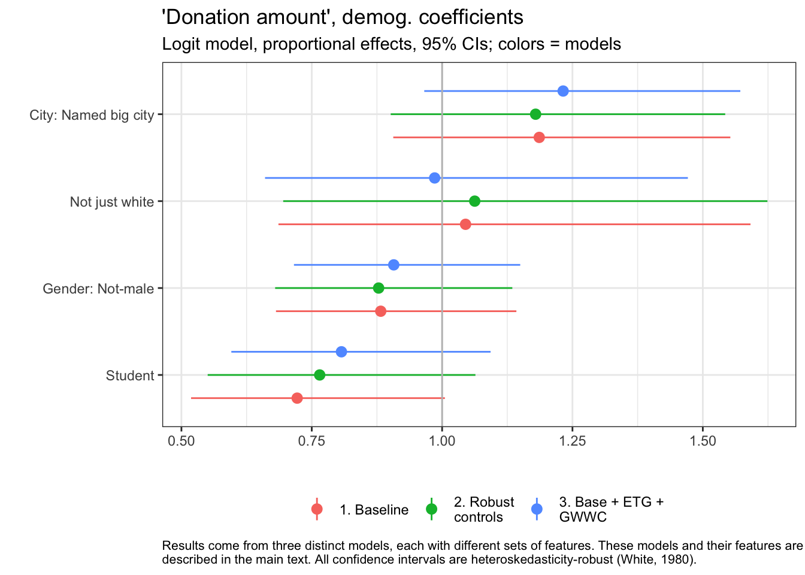
In the figure above, the vertical bar at “1” represents the coefficient of “no difference in donation between these groups, all else equal.” … (possible brief discussion of key results here, or only in Forum post).
fp_demog_coefs_fl
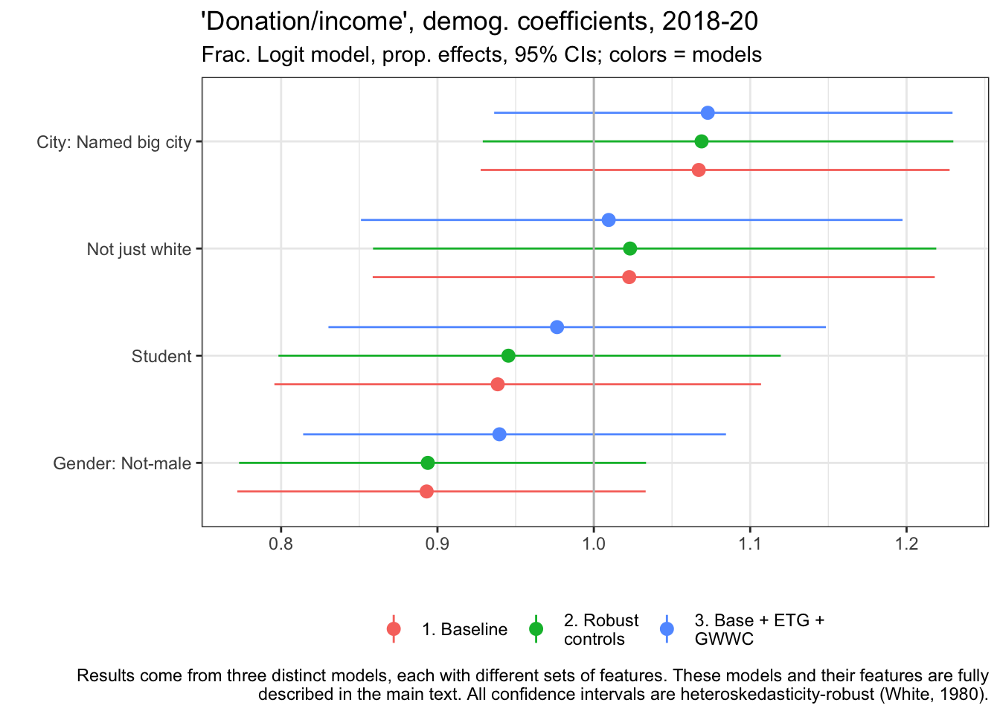
Above we plot the estimates, for the same features, for our (Fractional Logit) models of the ‘share of income donated.’39
…
rpct <- function(x){ (round(x, 3) -1)*100}
…
EAs living in named cities donate … a roughly 6.7% greater share in our baseline model.40
Non-males seem to be donating a … 89.3% as high a share in our baseline model. Students also seem to donate … 93.9% as high in our baseline model.
fp_demog_coefs_logit
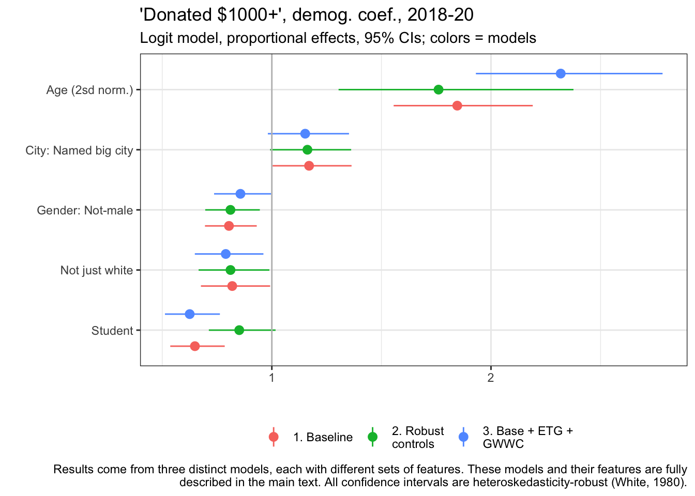
The final outcome variable is ‘whether an individual donated $1000 or more.’41
Age has a … a two standard deviation increase in age (about 19.6 years older) is associated with a near-doubling of the probability of donating 1000 USD or more in our model. (1.85 times as high in our baseline model.)
Again, in our baseline model…
EAs living in named big cities are … roughly 17% more likely,
Non-males are about 80.4% as likely as males,
‘Not-just-white’ people about 81.9% as likely as white people,
and students 64.9% as likely as nonstudents…
…to donate at least 1000 dollars, all else equal.
The graph suggests that each of these results are …
Model theme: Employment/career, GwwC, EtG, (income)
Next we consider employment and career-related features.42
fp_emp_gw_etg_coefs_qp
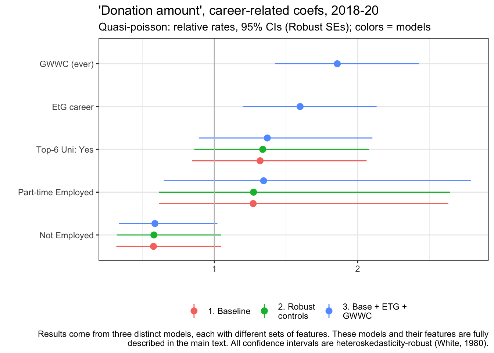
… GWWC pledge
Those who attended global top-6 universities (defined above) donate about 31.9% more in our baseline model point estimate.
…
fp_emp_gw_etg_coefs_fl
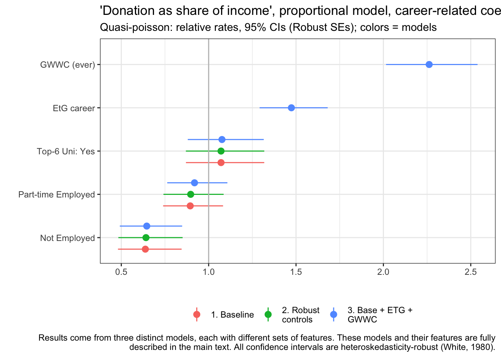
… Discussions: patterns for shares of income, key relationships…
fp_emp_gw_etg_coefs_logit
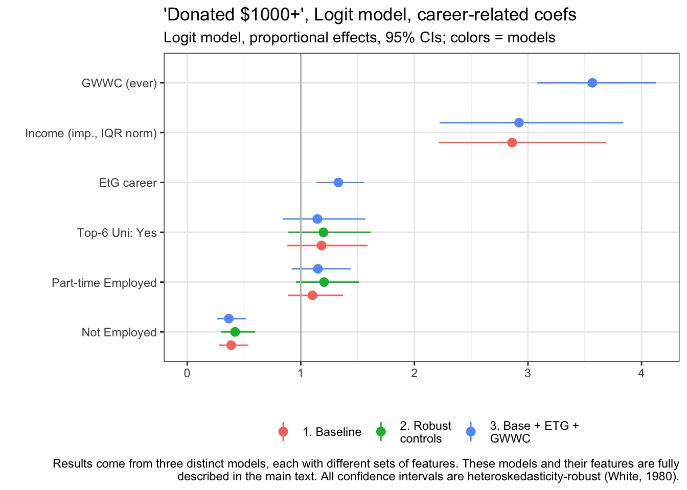
{atterns for our logit models of “whether donated at least 1000 USD” … (compare across models)
Here (for models without the two-part controls) we also present the relationship to income. An income that is 56787 USD greater (the 25-75 ‘interquartile range’) is associated with a 2.86 times greater probability donating 1k or more.
… (other standouts)
Age, time-in-EA, Income, Year; possible nonlinearity
#Making table of *raw coefficients* for logged income variables here, as these have elasticity interpretations nonlin_tables <- bind_rows(nonlin_coefs_qp_combo, nonlin_coefs_fl_combo, nonlin_coefs_logit) %>% select(outcome, term, model_name, estimate, std.error, p.value, conf.low, conf.high) %>% mutate( term = str_replace_all(term, c("ln_" = "log ", "EApost_med" = "EA (post median)")), term = str_replace_all(term, key_eas_all_labels), term = str_replace_all(term, c("Involved" = "in")), term = str_replace_all(term, c("_bc5k" = "")), term = str_replace_all(term, c("imp." = "imp., bc")), term = str_replace_all(term, c("years_inv_d2spost_med" = "Years in EA (2sd norm) post-median")) ) %>% filter(!str_detect(model_name, "GWWC")) %>% mutate( outcome = str_replace_all(outcome, key_eas_all_labels ) ) %>% arrange(term) %>% group_by(outcome) %>% group_split nonlin_don_avg_tab <- nonlin_tables[[1]] %>% select(-outcome) %>% .kable(caption = nonlin_tables[[1]][[1,"outcome"]], col.names = NA, digits=3) %>% .kable_styling("striped") nonlin_don_gt1k_tab <- nonlin_tables[[2]] %>% select(-outcome) %>% .kable(caption = nonlin_tables[[2]][[1,"outcome"]], col.names = NA, digits=3) %>% .kable_styling("striped") nonlin_donshare_tab <- nonlin_tables[[3]] %>% select(-outcome) %>% .kable(caption = nonlin_tables[[3]][[1,"outcome"]], col.names = NA, digits=3) %>% .kable_styling("striped")
Discussion of modeling continuously-valued features:
We next present the estimates, from six of the nine models (excluding models involving GWWC and earning-to-give), for the continuous-valued features (age, income, and years-in-EA) as well for the survey-year categorical feature. We present these for both the baseline and the ‘Robust control’ models; the latter allow us to consider distinct patterns where values are above-median. We present these in tables rather than forest plots, as the interpretation is subtle.
nonlin_don_avg_tab
| term | model_name | estimate | std.error | p.value | conf.low | conf.high |
|---|---|---|---|---|---|---|
| log age |
|
0.506 | 0.327 | 0.123 | -0.136 | 1.147 |
| log age |
|
0.372 | 0.392 | 0.343 | -0.397 | 1.140 |
| log Age (if age > med.) |
|
0.033 | 0.049 | 0.504 | -0.064 | 0.129 |
| Log income (imp., bc) |
|
0.951 | 0.095 | 0.000 | 0.765 | 1.138 |
| Log income (imp., bc) |
|
0.929 | 0.115 | 0.000 | 0.704 | 1.154 |
| Log Income (imp., bc) (if above med.) |
|
0.013 | 0.020 | 0.509 | -0.026 | 0.053 |
| log Years in EA |
|
0.627 | 0.099 | 0.000 | 0.434 | 0.821 |
| log Years in EA |
|
0.526 | 0.141 | 0.000 | 0.251 | 0.802 |
| log Years in EA (post median) |
|
0.076 | 0.114 | 0.505 | -0.147 | 0.299 |
| Year of survey: 2019 |
|
1.199 | 0.357 | 0.611 | 0.596 | 2.411 |
| Year of survey: 2019 |
|
1.176 | 0.351 | 0.644 | 0.591 | 2.338 |
| Year of survey: 2020 |
|
1.208 | 0.382 | 0.620 | 0.572 | 2.554 |
| Year of survey: 2020 |
|
1.176 | 0.380 | 0.670 | 0.558 | 2.476 |
In the Baseline model… we see that, unsurprisingly, donations clearly and strongly increase in income, all else equal; in the parlance of Economics, donation seems to be a ‘Normal good.’ The estimated income elasticity is 0.951, suggesting that, all else equal, on average, as income increases in our data by some share ‘X,’ donations increase by slightly … than this share.
In model 2 we include an adjustment coefficient to allow nonlinearity, allowing the elasticity of donations in income to be distinct for income levels above the median. …
Age: the baseline coefficient suggests that as age doubles, contributions increase by 50.6% on average, all else equal. …
Time-in-EA is strongly related to donations, even ‘controlling for age, etc.’ (and vice versa). A doubling of years in EA is associated with a 62.7% greater donation. The nonlinear adjustment term …
Each of the ‘survey year difference’ estimates (for 2019 and 2020, with 2018 as the base year) are (… update/doublecheck) fairly close to 1 (representing ‘no difference’). However, 95% confidence intervals are rather … wide, suggesting a lack of statistical power to discern a difference. …
We next present the corresponding coefficients for our fractional logit models of ‘donations as a share of income.’
nonlin_donshare_tab
| term | model_name | estimate | std.error | p.value | conf.low | conf.high |
|---|---|---|---|---|---|---|
| log age |
|
0.819 | 0.146 | 0.000 | 0.533 | 1.105 |
| log age |
|
0.877 | 0.192 | 0.000 | 0.500 | 1.254 |
| log Age (if age > med.) |
|
-0.012 | 0.025 | 0.622 | -0.061 | 0.036 |
| Log income (imp., bc) |
|
0.045 | 0.042 | 0.289 | -0.038 | 0.128 |
| Log income (imp., bc) |
|
0.017 | 0.058 | 0.766 | -0.097 | 0.132 |
| Log Income (imp., bc) (if above med.) |
|
0.008 | 0.009 | 0.389 | -0.010 | 0.026 |
| log Years in EA |
|
0.597 | 0.048 | 0.000 | 0.504 | 0.691 |
| log Years in EA |
|
0.654 | 0.082 | 0.000 | 0.494 | 0.814 |
| log Years in EA (post median) |
|
-0.044 | 0.056 | 0.427 | -0.153 | 0.065 |
| Year of survey: 2019 |
|
0.713 | 0.125 | 0.007 | 0.558 | 0.912 |
| Year of survey: 2019 |
|
0.719 | 0.125 | 0.008 | 0.562 | 0.919 |
| Year of survey: 2020 |
|
0.694 | 0.136 | 0.007 | 0.532 | 0.905 |
| Year of survey: 2020 |
|
0.701 | 0.136 | 0.009 | 0.538 | 0.915 |
The baseline models suggest that donation as a share of income is roughly (… constant, or slightly increasing in income. For every doubling of income, the share of income donated is seen to increase by 4.5%. …
Discussion (or forum only): age vs donation share…
Finally, we consider the models of ‘donated 1k or more’:
nonlin_don_gt1k_tab
| term | model_name | estimate | std.error | p.value | conf.low | conf.high |
|---|---|---|---|---|---|---|
| Age (2sd norm.) |
|
1.846 | 0.087 | 0.000 | 1.556 | 2.191 |
| Age (2sd norm.) |
|
1.761 | 0.153 | 0.000 | 1.305 | 2.376 |
| Age if older (norm.) |
|
1.063 | 0.153 | 0.690 | 0.787 | 1.436 |
| Income (imp., bc, IQR norm) |
|
2.860 | 0.130 | 0.000 | 2.217 | 3.691 |
| Income (imp., bc, IQR norm) |
|
4.535 | 0.075 | 0.000 | 3.918 | 5.248 |
| Income (imp., bc, IQR norm)_if_richer |
|
0.374 | 0.125 | 0.000 | 0.293 | 0.477 |
| Year of survey: 2019 |
|
0.730 | 0.134 | 0.019 | 0.561 | 0.949 |
| Year of survey: 2019 |
|
0.747 | 0.138 | 0.034 | 0.570 | 0.978 |
| Year of survey: 2020 |
|
0.625 | 0.141 | 0.001 | 0.474 | 0.825 |
| Year of survey: 2020 |
|
0.652 | 0.146 | 0.003 | 0.489 | 0.869 |
| Years in EA (2 sd norm.) |
|
2.427 | 0.077 | 0.000 | 2.086 | 2.823 |
| Years in EA (2 sd norm.) |
|
8.111 | 0.184 | 0.000 | 5.651 | 11.644 |
| Years in EA (2sd norm) post-median |
|
0.149 | 0.266 | 0.000 | 0.089 | 0.251 |
Here we present exponentiated coefficients, representing relative proportional rates of this outcome for the distinct groups.
Age is …
Year coefficients 43
The ‘years in EA’ coefficients are (…) extremely strong. These suggest that a 2 sd increase in tenure in EA (4.89 years) is associated with a 2.43 times greater relative chance of donating 1k or more relative to the base group), all else equal.
2.9.2 Predictive models
We use elastic-net and random-forest modeling approaches with validation (these are standard in the modern ‘machine learning’ tooklit), to derive a model that ‘predicts well.’*
Discussion: why build ‘predictive models of donation?’ :
TODO: move (some?) of this to methods section
We focus on predicting the individual’s donation in a year, focusing on the same set of outcomes used in the previous section. For this model to be useful for an actual prediction problem going forward, it would need to rely on ‘ex-ante’ characteristic that were already observable at the time of a career/EtG/pledge decision.44 These might include immutable demographics, career plans, and pledges previously taken, and consider year and trend effects.
Although we have these models in mind, this is not what we are doing here. We are not posing a specific ‘prediction problem’ per se. Instead we are using machine learning tools built for prediction problems to generate ‘data-driven insights’ about factors related to EA donation behavior. Here, we do not than directly specifying all of the included components of the model (features, interaction terms, etc.). Instead we provide a large set of possible ‘inputs’ and use ML techniques to train models that should predict well outside of the data they are trained on. These models should do a good job of accomplishing the task: ‘if you gave me a set of features of an EA, I should have a fairly accurate guess at what they will donate.’
The insights from these models should also be treated with caution. Again, they may not be deriving causal relationships. Furthermore, the parameters derived from model-fitting ML procedures are not in general unbiased or consistent, and it is difficult to derive proper confidence intervals for these parameters.
Still, the benefit of this exercise may be considered ‘the derivation of robust and predictive relationships in the data that are mainly driven by the data itself, rather than our preconcieved ideas.’ These models may also be useful building blocks towards future predictive work.
Discussion: ‘elastic net’ models:
TODO: move (some?) of this to methods section
In brief, the elastic net models involve linear models (log-linear in our case), i.e., ‘regressions,’ that carefully ‘penalize’ the (squared) magnitude of coefficients, in effect shrinking these towards zero. The penalties are specifically ‘tuned’ and ‘validated’ to maximize the predictive power of the model. As these are essentially regression approaches, we can report the sign and magnitude of the coefficients used in the ‘optimally tuned’ predictive model. (However, we should be careful about interpreting these parameters, and statistical inference is challenging. See e.g., Mullainathan & Spiess (2017a) for a detailed discussion.)
Discussion: ‘Decision tree’ models:
TODO: move (some?) of this to methods section
Decision tree models (which we do not report on here) take a different approach, attempting to discern optimal ways to split the data into conditional groups (e.g., ‘income over 20k’) and subgroups (e.g., ‘students versus nonstudents with income below 20k’), and finally making a prediction for each subgroup at the ‘bottom of the tree.’ The random forest approach extends the above to allow a sort of averaging across an ensemble of trees that are derived independently, each selecting a random subset of the features.
We fit these models/approaches, starting with a wide set of potential features, to explain each of the three main outcomes considered above.45 Below, we plot the seven most ‘important’ features (aka variables) for predicting the log of donation amount (average of planned and actual, where available) according to the random forest and elastic net (‘regression’) models.
# Need to see each of these variables for all models tuning_folder <- here("analysis", "intermed_results", "donation_prediction", "tuning_results") final_models <- here("analysis", "intermed_results", "donation_prediction", "final_models") l_don_av_2yr_best_params <- readRDS(here(final_models, "l_don_av_2yr.Rdata")) %>% filter(!grepl("decision", model, ignore.case = TRUE)) don_share_inc_imp_best_params <- readRDS(here(final_models, "don_share_inc_imp.Rdata")) %>% filter(!grepl("decision", model, ignore.case = TRUE)) d_don_1k_best_params <- readRDS(here(final_models, "d_don_1k.Rdata")) %>% filter(!grepl("decision", model, ignore.case = TRUE)) l_don_av_2yr_best_params_filter <- readRDS(here(final_models, "l_don_av_2yr_filter.Rdata")) %>% filter(!grepl("decision", model, ignore.case = TRUE)) # don_share_inc_imp_best_params_filter <- readRDS(here(final_models, "don_share_inc_imp_filter.Rdata")) # d_don_1k_best_params_filter <- readRDS(here(final_models, "d_don_1k_filter.Rdata")) l_don_av_2yr_best_params <- l_don_av_2yr_best_params %>% bind_rows(l_don_av_2yr_best_params_filter) #don_share_inc_imp_best_params <- don_share_inc_imp_best_params %>% bind_rows(don_share_inc_imp_best_params_filter) #d_don_1k_best_params <- d_don_1k_best_params %>% bind_rows(d_don_1k_best_params_filter)
recode_params <- function(df){ # Shortcut function to tidy up variable names in parameter df df <- df %>% dplyr::select(model, vi) %>% tidyr::unnest(vi) %>% mutate(model = str_replace_all(model, c("preprocess_" = "", "_" = " ")), Variable = str_replace_all(Variable, key_eas_all_labels), Variable = str_replace_all(Variable, c("_" = " ", "_Student" ="", "ln" = "log")), Sign = if_else(is.na(Sign), "NA", Sign)) } norm_vi <- function(df, slice_top = 7){ # Shortcut function for calculating normalized variable importance # Not reproducible... df %>% group_by(model) %>% mutate(Norm = scale_var(Importance)) %>% group_by(Variable) %>% mutate(Total_Norm = sum(Norm)) %>% group_by(model) %>% slice_max(Total_Norm, n = slice_top) %>% mutate(Variable = fct_reorder(Variable, Norm)) } plot_vi <- function(df, shapes = shape_colours){ # Shortcut function for plotting normalized variable importance (output of norm_vi) df %>% ggplot(aes(y = Variable, x = Norm, colour = model, shape = Sign)) + scale_shape_manual(values = shapes) + geom_point(size = 4, stroke = 5) + xlab("Normalised feature importance") + ylab("") } #specific changing of variable and signs for the below. mutate_labels_sign_snip <- function(df) { df %>% mutate( Variable = str_replace_all(Variable, c("First-heard EA"="Heard EA:", "response" = "resp.", "Gender Gender" = "Gender", "unknown" = "No resp.", "Student Student" = "Student", "X80000" = "80000")), Sign = if_else(is.na(Sign), "NA", Sign) ) } # Set colors for shapes as a named vector shape_colours <- c("NA" = 120, "NEG" = 95, "POS" = 43)
# Tidy up parameters l_don_av_2yr_best_params_recode <- l_don_av_2yr_best_params %>% filter(is.na(filter_name)) %>% recode_params l_don_av_2yr_best_params_recode_filter <- l_don_av_2yr_best_params %>% filter(!is.na(filter_name)) %>% recode_params don_share_inc_imp_best_params_recode <- don_share_inc_imp_best_params %>% recode_params d_don_1k_best_params_recode <- d_don_1k_best_params %>% recode_params
#NOT RUN # Starting to plot decision trees (early stages) l_don_av_2yr_tree <- l_don_av_2yr_best_params %>% mutate( model = str_replace_all( model, c("preprocess_" = "", "_" = " ")) ) %>% filter(!grepl("decision", model, ignore.case = TRUE)) ) %$% workflowsets::extract_fit_parsnip(fit[[1]]) # l_don_av_2yr_treeX <- l_don_av_2yr_best_params %>% # mutate( # model = str_replace_all( # model, c("preprocess_" = "", "_" = " ")) # ) %>% # filter(str_det(model, "decision tree")) %$% # workflowsets::extract_fit_parsnip(fit[[1]])
#, fig.dim = c(10, 10) ( iplot_l_don_av_2yr_best_params <- l_don_av_2yr_best_params_recode %>% filter(!grepl("tree", model, ignore.case = TRUE)) %>% norm_vi(slice_top = 10) %>% mutate_labels_sign_snip %>% slice_max(Total_Norm, n = 10) %>% mutate(Variable = fct_reorder(Variable, Norm)) %>% ggplot(aes(y = Variable, x = Norm, colour = model, shape = Sign)) + scale_shape_manual(values = c(120, 95, 43)) + geom_point( position = position_jitter(seed = 42, width = 0.1, height = 0.1), size = 4, stroke = 5) + xlab("Normalised feature importance") + ylab(element_blank()) + ggtitle("Normalized importance scores: predicting log(don.)") )
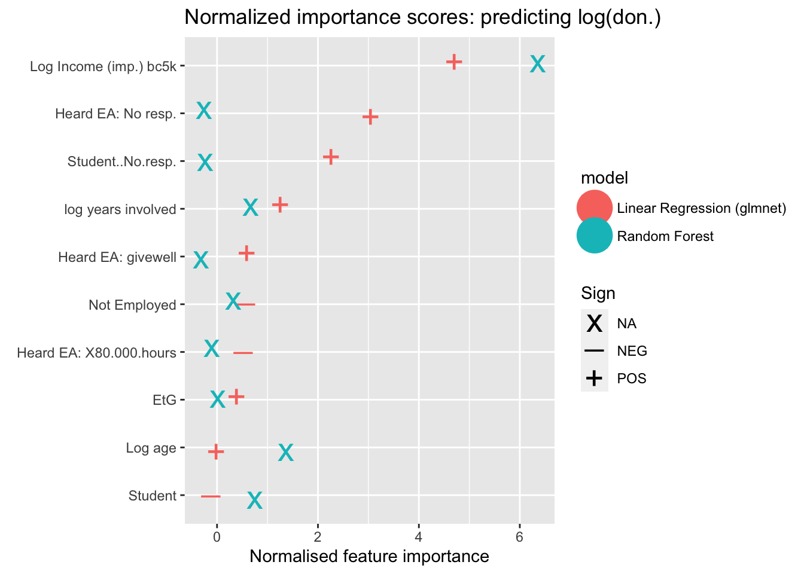
Above, we report the ‘importance scores’ for the ten most important features (‘variables’) for two distinct approaches to predicting log (average) donation.46
These importance scores are technically defined here. For the elastic net (“linear reg”) approach, we depict the coefficients’ signs with a “+” or “-”; for tree/forest-based modeling this is less straightforward.
Most important predictors…
The ‘non-response’ features:
As they are difficult to interpret, and probably not useful for future predictions, we will basically not discuss the non-response features further.47
As our data exhibited some large donation-amount outliers, (which is naturally tied to high income), we re-trained models on a subset of the data with only respondents who earned less than $500,000, with importance scores reported below.
( iplot_l_don_av_2yr_best_params_filter <- l_don_av_2yr_best_params_recode_filter %>% filter(!grepl("tree", model, ignore.case = TRUE)) %>% norm_vi(slice_top = 10) %>% mutate_labels_sign_snip %>% slice_max(Total_Norm, n = 10) %>% mutate(Variable = fct_reorder(Variable, Norm)) %>% ggplot(aes(y = Variable, x = Norm, colour = model, shape = Sign)) + scale_shape_manual(values = c(120, 95, 43)) + geom_point( position = position_jitter(seed = 42, width = 0.1, height = 0.1), size = 4, stroke = 5) + xlab("Normalised feature importance") + ggtitle("Importance: predict log(don.) (filter: income < 500k)") )
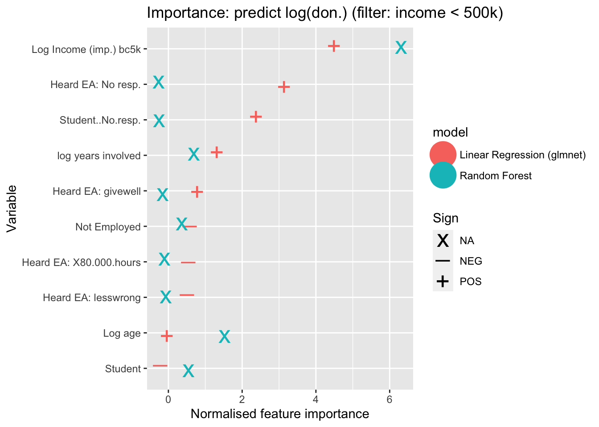
The results are …
We next focus specifically on the elastic-net regression-based model.
# TODO -- important -- what are the base groups here, especially for 'first-heard'? I thought in previous work we made "don't remember" the base group! This is important for interpreting the coefficient signs! # Plot all coefficients for elastic net model #TODO (DR @ OF -- plot the coefficients rather than the importance weights? (the latter are absolute value t-values anyways)) #TODO/check DR @ OF -- why is 'year of survey 2015' (and 2017) in here? those years should have been removed from the dataset; I think they have been, but still it somehow reports an importance score? -- OK I am removing '0' importance scores for now ( enet_coefs_ldon <- l_don_av_2yr_best_params_recode %>% filter( grepl("regression", model, ignore.case = TRUE) & Importance!=0) %>% mutate_labels_sign_snip %>% #mutate(Norm = scale_var(Importance)) %>% mutate(Variable = fct_reorder(Variable, Importance)) %>% ggplot(aes(y = Variable, x = Importance, shape = Sign)) + scale_shape_manual(values = c(95, 43)) + geom_point(size = 2, stroke = 4) + xlab("Feature importance") + ggtitle("Importance scores: predicting log(don.)") )
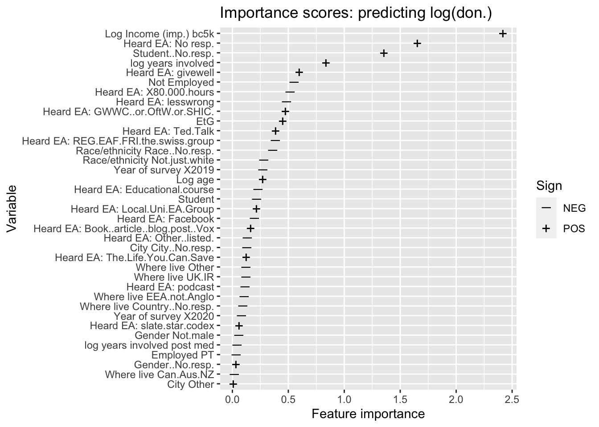
The graph above presents the overall ranking of importance scores within the elastic-net linear regression model, with symbols depicting whether these features take on a positive or negative sign. Results…
Predictive model: Donated 1k USD or more
( iplot_don_1k_best_params <- d_don_1k_best_params_recode %>% filter(!grepl("tree", model, ignore.case = TRUE)) %>% mutate_labels_sign_snip %>% norm_vi(slice_top = 10) %>% plot_vi() + ggtitle("Importance scores: predicting donation > 1k USD ") )

Results…
Next, we plot the (nonzero) importance scores for all of the coefficients in the elastic-net logistic model of donating 1k or more.
( plot_enet_coefs_don_1k <- d_don_1k_best_params_recode %>% filter( grepl("logistic", model, ignore.case = TRUE) & Importance!=0) %>% mutate_labels_sign_snip %>% #mutate(Norm = scale_var(Importance)) %>% mutate(Variable = fct_reorder(Variable, Importance)) %>% ggplot(aes(y = Variable, x = Importance, shape = Sign)) + scale_shape_manual(values = c(95, 43)) + geom_point(size = 2, stroke = 4) + xlab("Feature importance") + ggtitle("Importance scores: predicting donation > 1000k USD") )
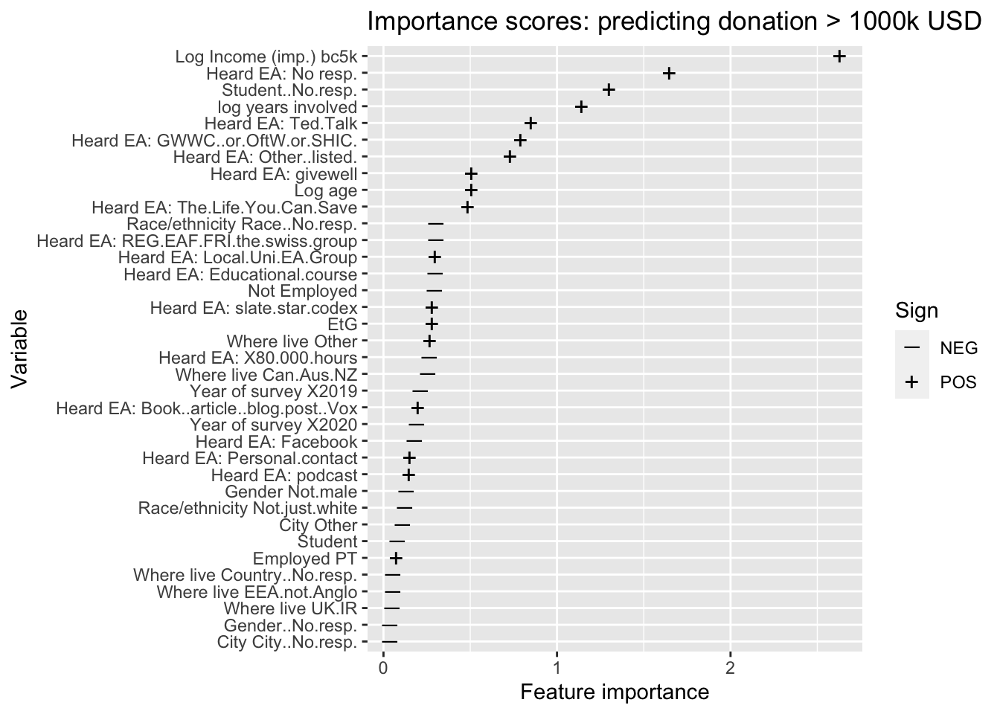
Model Performance
We consider ‘how well these models predict.’ Overall, these models offer (…) some predictive power. E.g., note that about 46% of the relevant sample reports over 1k in donations. Our logistic regression model can correctly predict … ]
Discussion: measuring prediction success :
We may want to consider ‘how successful’ our predictive models are at making practically useful predictions. In other words, ‘how far off’ are the predictions and classifications on average, from the actual outcomes. This procedure considers the fit on randomly-drawn set-aside ‘testing data,’ data that has not been used in ‘training’ (or ‘fitting’) the model. Below, we consider some commonly-used metrics.
Regression Model Performance
In order to assess the usefulness of each predictive regression model we consider both root-mean-square-error (RMSE) and mean-absolute-error (MAE).
Computing RMSE:
NOTE: probably move this to the methods book
RMSE (aka RMSD) can be interpreted as the average ‘Euclidean distance’ between the actual values and the model’s prediction. For each observation (in the set-aside ‘testing sample’), to construct RMSE we:
- Measure the differences between the actual and predicted outcome (e.g., donation), 2. Square these differences
- Take the average of these squared differences across all observations, 4. Take the square root of this
Computing MAE :
NOTE: probably move this to the methods book
To construct mean-absolute-error (MAE) we simply 1. Measure the absolute-value differences between the actual and predicted outcome (e.g., donation) for each observation. 2. Take the average of these across all observations
MAE has a much more straightforward interpretation: it simply asks ‘how far off are we, on average?’
Use of RMSE vs MAE :
NOTE: probably move this to the methods book
While the RMSE is used in the model fitting for various reasons, it is arguably less-interpretable and less-relevant than MAE in judging the model’s fit in cases like this one. RMSE error negatively assesses the model fit based on squared deviations, and is thus very sensitive to ‘large mistakes.’ This may be relevant where ‘large errors are much much worse than small ones’ – here, this is not so clearly the case. In the presence of data with large outlying observations, prediction will tend to be poor by this measure.
To address this we: 1. Present both RMSE and MAE 2. Re-run the models of (log average) donations for the subset of individuals with incomes at or below 500,000 USD. For this subset, there are fewer influential donation outliers.
The latter also allows us to consider how sensitive the model fit is to outliers.
Dealing with transformed outcomes :
NOTE: probably move this to the methods book
Note that when considering models where the outcome is transformed (e.g., log(donations)) we construct the RMSE and MAE by exponentiating to generate predictions for the level outcomes, and then measure the deviations on the level scale.
When considering predicted outcomes on the logarithmic scale, both RMSE and MAE indicate roughly ‘how many exponential orders of magnitude our predictions for the non-logged outcomes are off. E.g., a MSE of 1.5 for ’log donation’ suggests an we are off by about \(exp(1.5) =\) 4.48 times in terms of donations, getting them off by a factor of about 5. This conversion avoids such complications.
l_don_av_2yr_best_params <- l_don_av_2yr_best_params %>% mutate(dv = "Donation amount*") don_share_inc_imp_best_params <- don_share_inc_imp_best_params %>% mutate(dv = "Donation as a share of income") ( reg_model_performance <- purrr::map(list(l_don_av_2yr_best_params, don_share_inc_imp_best_params), ~.x %>% dplyr::select(dv, rmse, mae, model, matches("filter_name")) ) %>% bind_rows() %>% mutate(filter_name = if_else(is.na(filter_name), "None", filter_name)) %>% rename("Dependent variable" = dv, "RMSE" = rmse, "MAE" = mae, "Model" = model, "Filter" = filter_name) %>% kable(caption = "Regression model performance", digits = 2) %>% kable_styling() %>% add_footnote("Note: While the model was trained using logs of the dependent variable, RMSE and MAE were calculated in levels", notation = "symbol") )
| Dependent variable | RMSE | MAE | Model | Filter |
|---|---|---|---|---|
| Donation amount* | 66980.31 | 7259.41 | Random Forest | None |
| Donation amount* | 65011.02 | 7287.65 | Linear Regression (glmnet) | None |
| Donation amount* | 25944.63 | 4706.42 | Random Forest | Income (imp.)_bc5k < 500000 |
| Donation amount* | 26010.45 | 4757.24 | Linear Regression (glmnet) | Income (imp.)_bc5k < 500000 |
| Donation as a share of income | 0.10 | 0.06 | Random Forest | None |
| Donation as a share of income | 0.11 | 0.06 | Linear Regression (glmnet) | None |
| * Note: While the model was trained using logs of the dependent variable, RMSE and MAE were calculated in levels |
p_load(ie2misc) mad_naive <- ie2misc::madstat(eas_all_s_rl_imp$donation_c, na.rm=TRUE) sd_naive <- round((sd(eas_all_s_rl_imp$donation_c, na.rm=TRUE)), 0)
How does this compare to a ‘naive model’ in which we predict the average donation for everyone? Note that for the comparable unfiltered data, the mean absolute deviation is 13,306 and the standard deviation is 106,109. The predictive model reduces this uncertainty substantially (…).
Classification Model Performance
- ROC curve to consider the differences in the predictive power of the various models.
- Comparison to uninformed classifier, which would simply predict a positive outcome with some random probability \(p\) (this maps out the 45 degree line).
# Add column for ROC curve roc_curve <- yardstick::roc_curve unnest <- tidyr::unnest pr_curve <- yardstick::pr_curve # Calculate ROC curve d_don_1k_best_params$roc_curve <- d_don_1k_best_params %>% select(true_y, preds, pred_prob, model) %>% unnest(cols = everything()) %>% group_by(model) %>% group_map(~ roc_curve(., true_y, .pred_FALSE)) # Calculate AUC d_don_1k_best_params$auc <- d_don_1k_best_params %>% select(true_y, preds, pred_prob, model) %>% unnest(cols = everything()) %>% group_by(model) %>% group_map(~ yardstick::roc_auc(., truth = true_y, estimate = .pred_FALSE)) # Extract AUC d_don_1k_best_params <- d_don_1k_best_params %>% unnest_wider(., col = auc) %>% select(-c(.metric, .estimator)) %>% rename(auc = .estimate) # Plot ROC curve (roc_curve_d_don_1k <- d_don_1k_best_params %>% select(roc_curve, model) %>% unnest(cols = everything()) %>% rename_with(snakecase::to_title_case) %>% ggplot(aes(x = 1-Specificity, y = Sensitivity, colour = Model)) + geom_line() + geom_abline(slope=1, intercept = 0, linetype = "dotted") + theme_bw() )
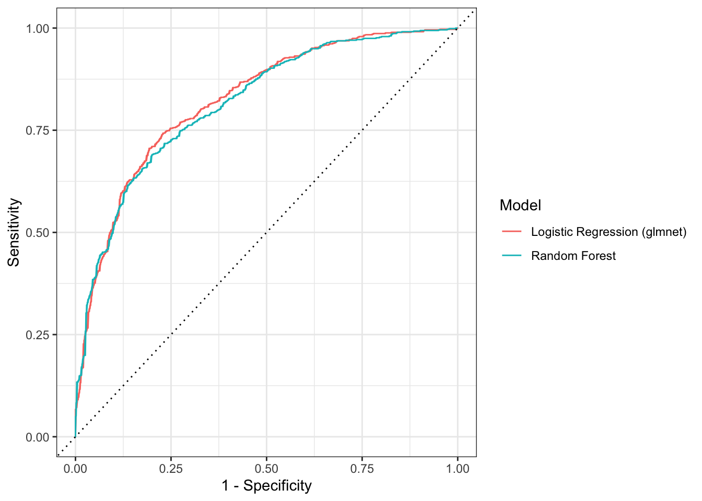
Discussion: ROC curve, AUC:
NOTE: probably move this to the methods book
An ROC curve plots the true positive rate (sensitivity) as a function of the false positive rate (1-specificity). Here the true positive rate gives the rate at which our model correctly predicts a respondent to donate over $1000, with the false positive rate giving the rate at which these predictions are incorrect.
Better classifiers will have an ROC curve that is further North-West, with the perfect classifier being an L-shaped curve passing through \((0,0) \rightarrow(0,1) \rightarrow(1,1)\). Where classifiers ROC curves do not cross, it is clear that one will be performing better than another. That is not the case here. Both models seem to be performing relatively similarly, with the ROC curves overlapping somewhat. It is difficult to discern which model is performing the best, and this will depend on our criterion.
However, both models yield curves substantially above the 45 degree line, thus substantially outperforming an uninformed classifier. For example, if we are willing to accept about a 25% rate of false positives (falsely predicting a 1k+ donation), the logistic regression model correctly predicts about 75% of true positives (and the random forest model about 73%).
We can use the area under the curve (AUC) measure to compare classifiers for all costs of misclassification. This measure quantifies how close the ROC curve is to the optimal L-shaped curve.
calculate_metrics <- function(df, metrics, preds = preds, true_y = true_y){ df %>% mutate(purrr::map2_dfr({{true_y}}, {{preds}}, ~ purrr::map_dfc(metrics, do.call, list(.x, .y)))) } class_metrics <- list(accuracy = yardstick::accuracy_vec, recall = yardstick::recall_vec, precision = yardstick::precision_vec, f1_score = yardstick::f_meas_vec) # Adding a no skill classifier to d_don_1k ## Messy code truth <- d_don_1k_best_params$true_y[[1]] majority <- tail(names(sort(table(truth))), 1) pred_majority <- as.logical(rep(majority, length(truth))) .pred_FALSE <- 1 - pred_majority .pred_TRUE <- 1 - .pred_FALSE pred_prob <- tibble(.pred_FALSE, .pred_TRUE, truth) no_skill <- tibble(model = "No Skill", true_y = list(truth), pred_prob = list(pred_prob), preds = list(factor(pred_majority, levels = levels(truth)))) %>% calculate_metrics(class_metrics) no_skill$auc <- yardstick::roc_auc_vec(truth, .pred_TRUE) purrr::map_df(list(no_skill, d_don_1k_best_params), ~.x %>% select(model, auc, accuracy)) %>% rename_with(snakecase::to_title_case) %>% rename(AUC = Auc) %>% kable(digits = 3) %>% kable_styling()
| Model | AUC | Accuracy |
|---|---|---|
| No Skill | 0.500 | 0.537 |
| Random Forest | 0.817 | 0.739 |
| Logistic Regression (glmnet) | 0.824 | 0.735 |
Here we see that the …
# Calculate precision recall curve # d_don_1k_best_params$pr_curve <- d_don_1k_best_params %>% select(true_y, preds, pred_prob, model) %>% # unnest(cols = everything()) %>% # group_by(model) %>% # group_map(~ pr_curve(., true_y, .pred_FALSE)) # # d_don_1k_best_params %>% select(pr_curve, model) %>% # unnest(cols = everything()) %>% # ggplot(aes(x = recall, y = precision, colour = model)) + # geom_path() + # coord_equal() + # theme_bw() + # geom_hline(aes(yintercept = 0.46))
best_d_don_1k_preds <- d_don_1k_best_params %>% filter(f1_score == max(f1_score)) %$% preds[[1]] d_don_1k_true <- d_don_1k_best_params %>% filter(f1_score == max(f1_score)) %$% true_y[[1]] #DR: @Oska, I'm just guessing this is what you wanted d_don_1k_preds_df <- tibble(preds = best_d_don_1k_preds, truth = d_don_1k_true) cm <- yardstick::conf_mat(d_don_1k_preds_df, truth, preds) autoplot(cm, type = "heatmap") + scale_fill_gradient(low="#D6EAF8",high = "#2E86C1") + ggtitle("Predicting Donations over $1k")
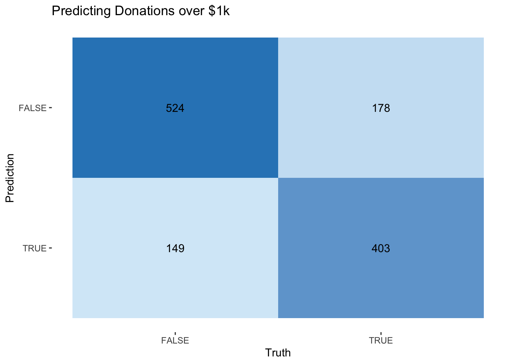
2.9.3 Summary of modeling results – see introduction
2.10 Appendix: Extra analysis and robustness checks
EA Forum Post: “See bookdown appendix for further analysis and robustness checks.”
This appendix contains further and analysis and robustness checks, as mentioned or alluded to in the above ‘main text.’
This section is part of the ‘Bookdown’ version only and not in the EA forum post.
‘Saved to donate later’
Added 30 Oct 2021
A comment from TylerMaule prompted us to revisit this question.
In 2020, after the main donation questions, we also asked
Are you presently saving money to donate later, rather than donate now? If so, roughly how much money are you planning to save in 2020 for this purpose?
We report on this only briefly here. We did not emphasize it for several reasons.
It is unclear how much this responses reflects a strong intention or commitment (e.g., a DAF contribution) that will be manifested in actual later donations. The amount someone reports they are “presently saving … to donate later” could express only a a vague intention to donate late and may be subject to them changing their mind, changes in financial circumstance, or value drift.
It is difficult to aggregate this savings with actual donations, as this could lead to double-counting. However, reporting all results for both measures (saving and actual donations) could make this report bulky.
However, we hope to look more closely at saving-to-donate behavior in future. This may be particularly relevant for patient longtermists.
Key figures
eas_new %<>% rowwise() %>% mutate( donate_later_amount_na0 = if_else( is.na(donate_later_amount_c), 0, donate_later_amount_c), donate_later_amount_min50 = max(50, donate_later_amount_c), donate_later_amount_min50_na0 = if_else( is.na(donate_later_amount_min50), 0, donate_later_amount_min50) ) %>% ungroup() #TODO: maybe move above to build side num_savdon <- sum(str_det(eas_new$donate_later, "yes")==TRUE, na.rm=TRUE) num_na_savdon <- sum(is.na(eas_new$donate_later)==TRUE, na.rm=TRUE) count_eas_new <- NROW(eas_new) med_savdon <- med(eas_new$donate_later_amount_c) mean_savdon <- mean(eas_new$donate_later_amount_c, na.rm=TRUE) mean_savdon0 <- mean(eas_new$donate_later_amount_na0, na.rm=TRUE) med_savdon0 <- med(eas_new$donate_later_amount_na0) mean_savdon0_lt100k <- mean(eas_new$donate_later_amount_na0[eas_new$donate_later_amount_na0<=100000], na.rm=TRUE)
17.9% of responses report saving to donate later. (This represents 24.6% of those who answered this question).
Among those who report saving to donate, median donations are 5000 USD and mean donations are 134,267 USD
Setting nonresponses to zero the mean ‘saved to donate’ amount (including zeroes) is 17,175 (and the median is 0 of course)
We provide a histogram below, with the horizontal axis on a logarithmic scale.
#ddate -- adding 'saving to donate' amount here #eas_new %>% tabyl(donate_later) %>% .kable() %>% .kable_styling() ( sav_don_ty <- eas_new %>% hist_plot_lscale(eas_new$donate_later_amount_min50, breaks = breaks) + labs(title="Histogram of 'saved to to donate later, 2020, bottom-coded at 50'", x = "Amount in USD", y = "Number of respondents"))
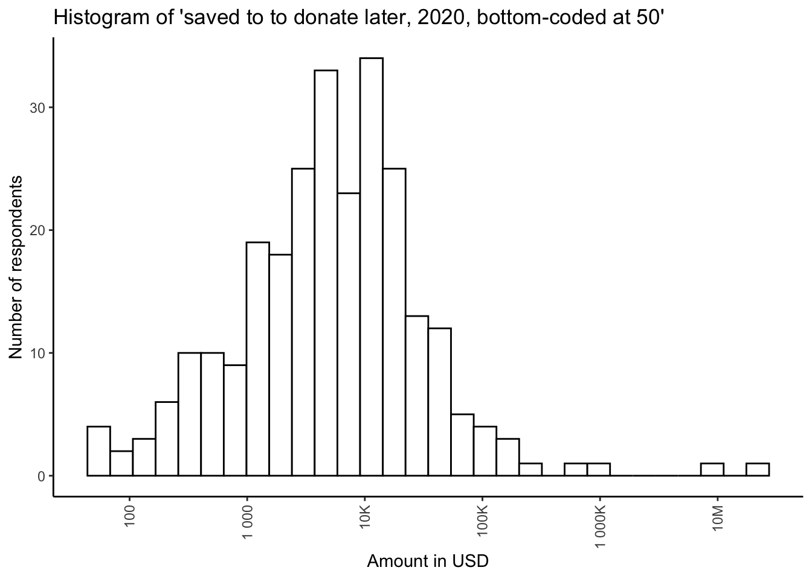
Donations by engagement level
don_share_income_by_engage_sp
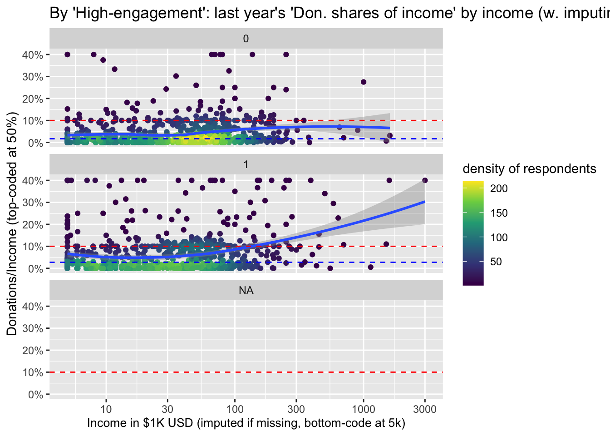
Donations and income by student/employment status
Below, we tabulate income and donations, split by student and employment status.
don_inc_by_student
| Characteristic | N | Overall, N = 1,636 | employed_ft, N = 707 | employed_pt, N = 70 | not_employed_looking, N = 57 | Other, N = 120 | self_employed, N = 127 | student_doctoral, N = 119 | student_masters, N = 155 | student_undergrad, N = 281 |
|---|---|---|---|---|---|---|---|---|---|---|
| Income in $1000 USD | 1,400 | |||||||||
| Median | 33 | 60 | 33 | 15 | 24 | 42 | 26 | 12 | 4 | |
| 10%-90% | 1-130 | 14-182 | 6-70 | 1-92 | 0-107 | 10-126 | 6-55 | 0-56 | 0-17 | |
| Mean [se] (SD) | 61 [4] (138) | 93 [6] (144) | 43 [6] (48) | 37 [8] (54) | 52 [17] (160) | 87 [28] (290) | 28 [2] (18) | 22 [3] (34) | 8 [1] (9) | |
| Last year's donation (in USD) | 1,413 | |||||||||
| Median | 528 | 1,420 | 679 | 284 | 500 | 1,247 | 548 | 178 | 110 | |
| 10%-90% | 0-9,822 | 0-17,048 | 0-5,975 | 0-4,200 | 0-9,000 | 0-15,249 | 0-3,793 | 0-2,367 | 0-1,000 | |
| Mean [se] (SD) | 7,516 [1,944] (73,062) | 10,048 [1,769] (44,507) | 2,779 [743] (5,944) | 3,541 [2,072] (14,503) | 4,085 [1,158] (11,048) | 28,589 [22,709] (238,179) | 1,505 [209] (2,165) | 953 [199] (2,329) | 450 [77] (1,141) | |
| Latest planned donation | 1,393 | |||||||||
| Median | 1,000 | 3,052 | 1,319 | 349 | 578 | 1,751 | 1,500 | 327 | 200 | |
| 10%-90% | 0-12,039 | 0-21,500 | 0-7,167 | 0-5,114 | 0-8,085 | 0-12,534 | 0-5,678 | 0-2,869 | 0-2,000 | |
| Mean [se] (SD) | 10,002 [1,993] (74,389) | 14,473 [2,895] (72,421) | 3,352 [789] (6,314) | 5,990 [4,166] (28,864) | 10,903 [5,619] (52,712) | 26,841 [19,090] (196,545) | 2,655 [480] (4,919) | 990 [163] (1,906) | 691 [93] (1,372) |
# don_inc_by_student %>% as_image(width = 8)
Additional: Donations and income by whether a Longtermist cause is top priority
We were asked to compare the donations of those who prioritize longtermist causes to the remainder of EAs. Below, we tabulate this by whether a respondent gives some longtermist cause as high a priority rating as any other cause.
#eas_new %>% tabyl(lt_above_mn_priority) #lt_4plus_priority = case_when( don_income_by_priority <- eas_new %>% dplyr::select(income_k_c, donation_c, donation_plan_c, don_share_inc_imp, lt_top_priority) %>% tbl_summary( by = lt_top_priority, type = c(all_continuous()) ~ "continuous2", statistic = list(all_continuous() ~ sumstatvec), label = list(income_k_c ~ "Income in $1000 USD", donation_c ~ "Last year's donation (in USD)", donation_plan_c ~ "Latest planned donation", don_share_inc_imp ~ "Last year's donation as share of (imputed) income" ), missing = c("no") ) %>% bold_labels() %>% add_n() %>% add_overall() don_income_by_priority
| Characteristic | N | Overall, N = 1,616 | FALSE, N = 796 | TRUE, N = 820 |
|---|---|---|---|---|
| Income in $1000 USD | 1,361 | |||
| Median | 34 | 38 | 29 | |
| 10%-90% | 1-130 | 2-129 | 0-130 | |
| Mean [se] (SD) | 61 [4] (138) | 59 [4] (111) | 62 [6] (161) | |
| Last year's donation (in USD) | 1,374 | |||
| Median | 559 | 700 | 500 | |
| 10%-90% | 0-10,000 | 0-10,000 | 0-10,000 | |
| Mean [se] (SD) | 7,688 [1,998] (74,077) | 6,212 [1,289] (33,823) | 9,172 [3,794] (99,297) | |
| Latest planned donation | 1,354 | |||
| Median | 1,053 | 1,320 | 939 | |
| 10%-90% | 0-12,759 | 0-12,049 | 0-12,796 | |
| Mean [se] (SD) | 10,186 [2,050] (75,431) | 9,446 [2,188] (57,095) | 10,935 [3,481] (90,311) | |
| Last year's donation as share of (imputed) income | 1,373 | |||
| Median | 0.02 | 0.03 | 0.02 | |
| 10%-90% | 0.00-0.14 | 0.00-0.15 | 0.00-0.14 | |
| Mean [se] (SD) | 0.13 [0.05] (1.82) | 0.09 [0.01] (0.33) | 0.16 [0.10] (2.55) |
# don_income_by_priority %>% as_image(width = 8) # Todo (medium): fix labeling and titles above # Todo (High): add standard error and perhaps tests, perhaps Bayes factors # Todo (Medium-high): visualization of donations by top-priority category (poverty, animals, LT, meta/other)
don_inc_priority_plot <- eas_new %>% grp_sum(income_c_imp_bc5k, donation_c, XXX) %>% plot_grp(country_big) + xlab("Mean income in USD (imputed if <5k/missing") + ylab("Mean donations, CIs")
The above presentation is meant to be broadly descriptive. Overall, it appears that those who prioritize long-term causes tend to donate a bit less at median but more at mean, and there is a lot of overlap between the two groups.
2.10.1 Planned donation by year, comparison tests
We report the amount people say they expect to donate in the current (survey) year below. Note the high share of missing values for 2017, and the substantially-larger sample in 2018. As noted above, this suggests that comparing the planned donations for 2018 (in EA survey 2018) to actual donations for 2018 (reported in 2019 EA survey) may not be informative.
( plan_don_per_year <- eas_all %>% filter(year>=2017) %>% group_by(year) %>% summarise("Number reported" = sum(!is.na(donation_plan_c)), N = n(), "Number missing" = sum(is.na(donation_plan_c)), "Proportion missing (%)" = sum(is.na(donation_plan_c))/n()*100, "Mean planned donation" = mean(donation_plan_c, na.rm=TRUE), "Median planned donation" = median(donation_plan_c, na.rm=TRUE)) %>% kable(caption = "Planned donation per year") %>% kable_styling() )
| year | Number reported | N | Number missing | Proportion missing (%) | Mean planned donation | Median planned donation |
|---|---|---|---|---|---|---|
| 2017 | 831 | 1845 | 1014 | 54.95935 | 1806.744 | 10.00 |
| 2018 | 1790 | 2599 | 809 | 31.12736 | 11045.812 | 1156.22 |
| 2019 | 1678 | 2509 | 831 | 33.12077 | 10704.457 | 1088.80 |
| 2020 | 1402 | 2056 | 654 | 31.80934 | 9992.946 | 1000.00 |
Below, the results of the signed rank test for plan versus actual donation, excluding 0 donations.
w_signed_test_planned_actual_no0s
##
## Wilcoxon signed rank test with continuity correction
##
## data: planned_actual_ly_ty_no_0$donation_last_survey_year and planned_actual_ly_ty_no_0$planned_donation_prior_survey_year
## V = 23282, p-value = 0.00000009715
## alternative hypothesis: true location shift is greater than 0
## 95 percent confidence interval:
## 271.685 Inf
## sample estimates:
## (pseudo)median
## 425.72622.10.2 Donations by income ‘earning-to-give’ career status
( don_income_etg <- eas_all %>% filter(year_n>=2018) %>% ggplot(aes(x = income_c_imp_bc_k, y = donation_2019, color = d_career_etg)) + geom_point(size = 1, alpha = 0.7) + # draw the points geom_smooth(aes(method = 'loess', fill = d_career_etg)) + # @Oska -- note I am using local smoothing here. scale_x_log10(name = "Income in $1K USD (imputed if <5k/missing)", n.breaks = 5, limits = c(5, 5000)) + scale_y_log10( name = "Donation amount", # labels = scales::dollar, labels = scales::label_number_si(prefix = "$"), n.breaks = 10 ) + scale_color_discrete(name = "Earning to give") + scale_fill_discrete(guide = "none") + theme(axis.text.x = element_text( angle = 90, vjust = 0.5, hjust = 1 ), legend.position = c(.87,.15), legend.background = element_rect(fill=alpha('blue', 0.01))) )
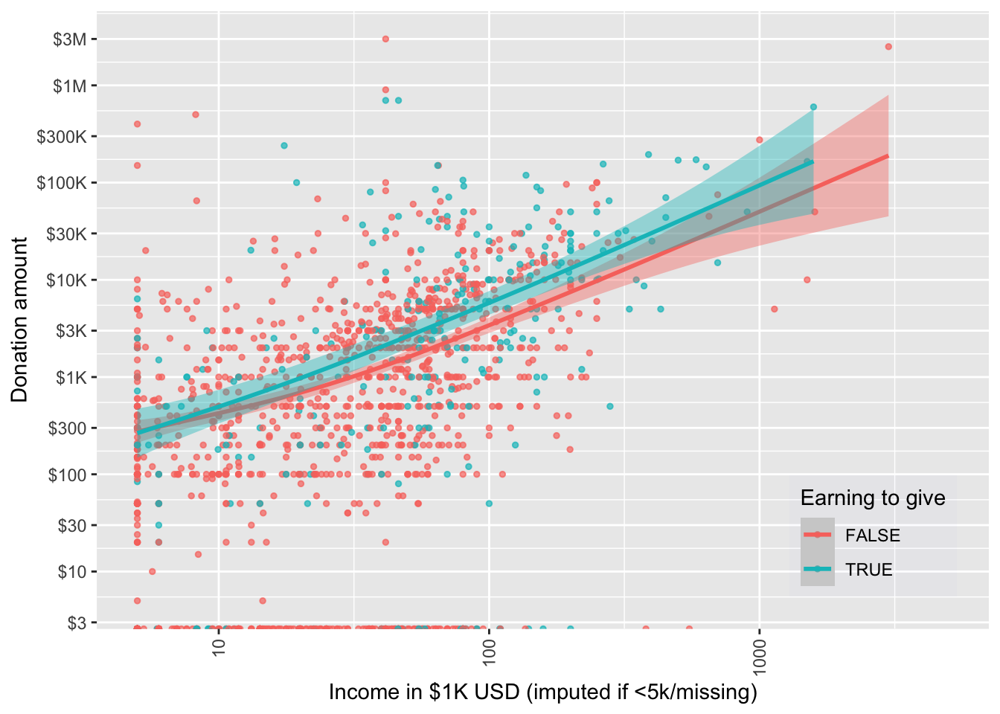
#don_income_etg + facet_wrap(~d_gwwc_ever)
2.10.3 Donation shares by income (by US-residence, 2019)
By request, we consider median and mean shares of income donated, separately tallying for US residents and others. This allows us to compare donation rates to those reported for the US overall. In particular, Meer & Priday (2020) reports a roughly 1.6-2.1% percent share of income donated throughout all of the US income quantiles (except or the lowest 5%). The statistics below suggest that EAs who fill out the donation questions in the survey to donate a greater share of their income, perhaps at least twice as much.
Recall that the mean share of total (imputed) income donated (for 2019) was 9.4% (imputing income where below 5k or missing).
If we focus on US-resident nonstudents across all years, the mean share is 7.94%.
mean_don_sharenonstud_usa_w20 <- eas_all %>% filter(d_live_usa==1 & d_student==0) %>% rowwise() %>% mutate(don_share_inc_imp_bc5k = min(don_share_inc_imp_bc5k, 0.2)) %>% ungroup() %>% summarize(mean_share_nonstud_usa_w20 = mean(don_share_inc_imp_bc5k, na.rm=TRUE) )
We could also ‘average the individual shares donated’; as this is highly sensitive to outliers (e.g., people with the lowest incomes reporting donating many times this share), we ‘Winsorise,’ capping each individual’s ‘share of income donate’ at some percent. Following this procedure and capping at 20%, the mean share of income donated, across all years, for US-resident non-students in the EA survey, is 5.67%.
We plot donation shares on a log scale, for US and non-US residents separately (across all years). Below, the blue dash gives us the median for USA (vs non-USA), and the smoothed curve tries to best fit the mean. The left graph is ‘Winsorised’ at 20%, and right one at 40%
don_share_income_by_usa <- eas_all %>% filter(!is.na(d_live_usa)) %>% rowwise() %>% mutate(don_share_inc_imp_bc5k = min(don_share_inc_imp_bc5k, 0.4)) %>% ungroup() %>% group_by(d_live_usa) %>% mutate(med_usa = median(don_share_inc_imp_bc5k, na.rm=TRUE)) %>% ungroup() %>% ggplot(aes(x = income_c_imp_bc_k, y = don_share_inc_imp_bc5k)) + ggpointdensity::geom_pointdensity(adjust = 0.25) + geom_smooth(method = "loess") + geom_hline(aes(yintercept=med_usa), linetype="dashed", size=0.5, color = "blue") + geom_hline(yintercept=0.1, linetype="dashed", size=0.5, color = "red") + scale_y_continuous(labels = scales::label_percent(accuracy = 1L)) + scale_x_log10(breaks = scales::log_breaks(n=7)) + scale_color_viridis_c("Neighbours") + xlab("Income in $1K USD (imputed if missing, bottom-code at 5k)") + theme(axis.title.x = element_text(size = 10)) + ylim(NA,.21) + ylab("Donations/Income (top-code at 40%)") + facet_wrap(~d_live_usa) + labs(title="By US residence: 2019 'Don. share of income' by income (w/ imputing)") don_share_income_by_usa_w20 <- eas_all %>% filter(!is.na(d_live_usa)) %>% rowwise() %>% mutate(don_share_inc_imp_bc5k = min(don_share_inc_imp_bc5k, 0.2)) %>% ungroup() %>% group_by(d_live_usa) %>% mutate(med_usa = median(don_share_inc_imp_bc5k, na.rm=TRUE)) %>% ungroup() %>% ggplot(aes(x = income_c_imp_bc_k, y = don_share_inc_imp_bc5k)) + ggpointdensity::geom_pointdensity(adjust = 0.25) + geom_smooth(method = "loess") + geom_hline(aes(yintercept=med_usa), linetype="dashed", size=0.5, color = "blue") + geom_hline(yintercept=0.1, linetype="dashed", size=0.5, color = "red") + scale_y_continuous(labels = scales::label_percent(accuracy = 1L)) + scale_x_log10(breaks = scales::log_breaks(n=7)) + scale_color_viridis_c("Neighbours") + xlab("Income in $1K USD (imputed if missing, bottom-code at 5k)") + theme(axis.title.x = element_text(size = 10)) + ylab("Donations/Income ('Windsorised' (top-coded) at 40%)") + ylim(NA,.21) + facet_wrap(~d_live_usa) + labs(title="By US residence: 2019 'Don. share of income' by income (w/ imputing)") mean_don_share_income_usa_nonstudent_w20 <- eas_all %>% filter(d_live_usa==1 & d_student==0) %>% rowwise() %>% mutate(don_share_inc_imp_bc5k = min(don_share_inc_imp_bc5k, 0.2)) %>% ungroup() %>% dplyr::summarise(mean_don_share= mean(don_share_inc_imp_bc5k, na.rm=TRUE) ) #don_income_etg + facet_wrap(~d_gwwc_ever)
2.10.4 Models: nonresponse coefficients
Below we report the ‘no response’ coefficients for all of the models presented above (recall that these are ‘controls’ included in each specification). These are exponentiated, as in the presentations above. We report these only here because we suspect they are of less direct interest.
# make nice table (and/or forest plot?) of nonreseponses ( nr_coefs_table <- bind_rows(nr_coefs_qp, nr_coefs_fl,nr_coefs_logit) %>% select(outcome, term, model_name, estimate, std.error, p.value, conf.low, conf.high) %>% filter(!str_detect(model_name, "GWWC")) %>% filter(str_detect(term, "response|na|NA")) %>% mutate( outcome = str_replace_all(outcome, key_eas_all_labels) ) %>% arrange(term) %>% .kable(digits=3) %>% .kable_styling() )
| outcome | term | model_name | estimate | std.error | p.value | conf.low | conf.high |
|---|---|---|---|---|---|---|---|
| Don. ‘avg’ | City: No response |
|
0.639 | 0.176 | 0.011 | 0.452 | 0.902 |
| Don. ‘avg’ | City: No response |
|
0.627 | 0.175 | 0.008 | 0.444 | 0.884 |
| Don./Income (imp, bc) | City: No response |
|
0.827 | 0.195 | 0.331 | 0.564 | 1.212 |
| Don./Income (imp, bc) | City: No response |
|
0.825 | 0.196 | 0.326 | 0.562 | 1.211 |
| Don. > 1k USD | City: No response |
|
0.979 | 0.180 | 0.905 | 0.687 | 1.394 |
| Don. > 1k USD | City: No response |
|
0.933 | 0.187 | 0.713 | 0.647 | 1.347 |
| Don. ‘avg’ | Gender: No response |
|
0.833 | 0.262 | 0.486 | 0.499 | 1.392 |
| Don. ‘avg’ | Gender: No response |
|
0.847 | 0.265 | 0.532 | 0.504 | 1.425 |
| Don./Income (imp, bc) | Gender: No response |
|
0.996 | 0.211 | 0.986 | 0.658 | 1.508 |
| Don./Income (imp, bc) | Gender: No response |
|
0.998 | 0.212 | 0.992 | 0.659 | 1.511 |
| Don. > 1k USD | Gender: No response |
|
0.860 | 0.226 | 0.505 | 0.553 | 1.339 |
| Don. > 1k USD | Gender: No response |
|
0.956 | 0.234 | 0.848 | 0.604 | 1.513 |
| Don. ‘avg’ | Live: Country: No response |
|
1.309 | 0.274 | 0.326 | 0.765 | 2.242 |
| Don. ‘avg’ | Live: Country: No response |
|
1.308 | 0.279 | 0.336 | 0.757 | 2.258 |
| Don./Income (imp, bc) | Live: Country: No response |
|
1.332 | 0.284 | 0.313 | 0.763 | 2.323 |
| Don./Income (imp, bc) | Live: Country: No response |
|
1.335 | 0.285 | 0.311 | 0.764 | 2.332 |
| Don. > 1k USD | Live: Country: No response |
|
1.094 | 0.200 | 0.655 | 0.738 | 1.620 |
| Don. > 1k USD | Live: Country: No response |
|
1.144 | 0.208 | 0.517 | 0.761 | 1.721 |
| Don. ‘avg’ | NA |
|
0.817 | 0.378 | 0.592 | 0.389 | 1.713 |
| Don. ‘avg’ | NA |
|
0.817 | 0.385 | 0.599 | 0.384 | 1.738 |
| Don./Income (imp, bc) | NA |
|
0.844 | 0.169 | 0.317 | 0.606 | 1.176 |
| Don./Income (imp, bc) | NA |
|
0.842 | 0.169 | 0.310 | 0.604 | 1.174 |
| Don. > 1k USD | NA |
|
0.854 | 0.190 | 0.407 | 0.588 | 1.240 |
| Don. > 1k USD | NA |
|
0.781 | 0.201 | 0.219 | 0.526 | 1.158 |
| Don. ‘avg’ | Student: No response |
|
0.236 | 0.862 | 0.094 | 0.044 | 1.277 |
| Don. ‘avg’ | Student: No response |
|
0.245 | 0.753 | 0.062 | 0.056 | 1.072 |
| Don./Income (imp, bc) | Student: No response |
|
0.350 | 0.381 | 0.006 | 0.166 | 0.737 |
| Don./Income (imp, bc) | Student: No response |
|
0.351 | 0.379 | 0.006 | 0.167 | 0.738 |
| Don. > 1k USD | Student: No response |
|
1.090 | 0.761 | 0.910 | 0.245 | 4.845 |
| Don. > 1k USD | Student: No response |
|
1.164 | 0.740 | 0.838 | 0.273 | 4.958 |
| Don. ‘avg’ | Top-6 Uni: NA |
|
1.083 | 0.338 | 0.814 | 0.558 | 2.100 |
| Don. ‘avg’ | Top-6 Uni: NA |
|
1.078 | 0.337 | 0.823 | 0.557 | 2.086 |
| Don./Income (imp, bc) | Top-6 Uni: NA |
|
0.775 | 0.120 | 0.034 | 0.612 | 0.980 |
| Don./Income (imp, bc) | Top-6 Uni: NA |
|
0.778 | 0.120 | 0.037 | 0.615 | 0.985 |
| Don. > 1k USD | Top-6 Uni: NA |
|
0.777 | 0.127 | 0.046 | 0.606 | 0.995 |
| Don. > 1k USD | Top-6 Uni: NA |
|
0.819 | 0.130 | 0.124 | 0.634 | 1.057 |
References
either merging in a sentence from a previous post, adding an updated link, or briefly characterizing the result ‘manually.’↩︎
All figures here refer to survey responses, so we won’t write ‘reported in the survey’ each time. These (2019-20) numbers exclude a single survey donation response in the billions that was ruled to be implausible. A total of NA observations were dropped for implausible income, donations, or ages. Averages are for those who answered the donation question(s), including those who reported donating zero. Nonresponses are not counted in these statistics except where specifically mentioned. Unless otherwise mentioned, all figures simply add, average or otherwise summarize individual responses from the EA Survey years mentioned.↩︎
Many respondents do not reveal their income, or report zero or implausibly small incomes (if we consider income to include transfers and family support); among these, many do report donations. To get a meaningful measure of average shares of income donated (and other stats) including these individuals, we need to put some measure reflecting yearly spending power in the denominator. We thus make a rough imputation, selecting the average income for individuals from their same country and same student-status who do report an income value. To avoid sensitivity to outliers, countries with small numbers of participants are lumped together into an “other” group for this imputation. Where this (or reported income) falls below 5000 USD, we ‘bottom-code’ it this as at 5000 USD. (Note that we hope to improve this imputation in future work, incorporating features such as age in the imputation.)↩︎
We do not include 2014 in the above tables and plots because of very low response rates to the student status and EtG-relevant questions.↩︎
Note, we report on amounts ‘planning [to] save in 2020 to donate later in an appendix section.’↩︎
Here we impute income where it is missing or below 5000 USD. However, the figure removes observations where income as well one of either country or student status is missing; in these cases income cannot be simply imputed from these.↩︎
We have shown ‘where the donations were in 2019’ (and across years). However, we are not suggesting that this provides direct evidence of differences in EA generosity by country.↩︎
In stratifying donation and income statistics by employment/student status we exclude those who gave no information on this question (or who answered that they prefer not to answer). (These nonresponses make up 20.4% of the sample).↩︎
Note that thus is reporting means and not medians. The ‘self-employed’ group clearly reflects outliers, and its upper CI is truncated at 30000 to save space.↩︎
… update to new data The UK clearly contains some notable donation outliers, leading to very large confidence intervals for the UK mean (truncated above at 30000 USD).↩︎
As discussed in other posts and bookdown chapters, this may be reflecting differences in who stays in EA (and continues responding to the survey) as much as it reflects how people themselves change from year to year.↩︎
David, is it a problem that plotly gives individual point info here, for confidentiality?↩︎
We exclude the year 2014, because of the very low response rate to the donation question in this survey. ↩︎
The final column in each table presents a statistical test forsignificant differences in means each donation category by GWWC status. (Note that ‘no significance stars’ implies a lack of statistical significance at the \(p<0.10\) level in two-tailed tests).↩︎
I.e., for ‘whether someone reports a donation in a particular cause category’)↩︎
Should this section be repeated every year, done in an aggregated fashion across years, or skipped going forward (just referring back to 2019-20)↩︎
Matched through an anonymized email↩︎
These EAs, who happened to respond to the survey in both years and give a matchable email, may not be typical EAs; we discuss this further below.↩︎
As the distribution of values is highly negatively skewed, we present this on a logarithmic scale, with values from 0-50 USD ‘bottom-coded’ as 50 USD.↩︎
However, note that we are currently considering these distributions rather than the individual differences for linked individuals’; we present the latter in the next subsection.↩︎
In particular, having fulfilled one’s planned donation might make one more likely to want to complete the follow-up survey, and perhaps more keen to provide one’s donation data in particular.↩︎
Here we compare the ‘amounts planned for the year of a survey’ to the ‘amounts reported for the previous year, in the following year’s survey.’ We do this separately for each available year. While this offers us a larger sample, and may be less vulnerable to the bias just-mentioned, it brings up other sample selection issues, and these comparisons should also be treated with some caution (see fold/footnote).↩︎
As noted earlier, this contrast might be because people who have met or exceeded their donation plans are more likely to respond to surveys in subsequent years, and report donations in each. As discussed earlier, for the ‘matched individuals’ (those who can be linked from 2019 and 2020 surveys) the mean and median of the distribution of actual donations exceeds that of planned, but these differences are not statistical significant in the permutation tests. However, for the matched individuals, these differences are positive and significant (or close to significant) in tests that take advantage of the linked nature of this data and look at the individual differences themselves.↩︎
Classical economic theory suggests that most goods are ‘normal,’ with the amount consumed increasing in income. Empirical evidence supports this for charitable giving; recent work suggests that share of income is relatively constant across the income distribution, implying that wealthier people give more in absolute terms.↩︎
As discussed in other posts ‘how people were introduced to EA’ has changed over the years. We also expect those who have been involved in EA for a longer period of time to be more engaged, and perhaps donate more (possibly due to differential attrition). Thus, it seems reasonable that in tracking the association between donation and introducer, we might want to ‘control for’ (difference out or hold constant) the differences in ‘time-in-EA’ between these groups. Still, we admit that these specifications are not based on an explicit causal model or identification strategy.↩︎
“Top-6 university” refers to whether the individual lists any of the six universities (Oxford, Stanford, Harvard, CalTech, MIT, Cambridge) appearing in the top-10 of all of USNWR, QS, and THE rankings. However, university was not asked in the 2018 survey ↩︎
We refer to the latter as “controls” because they aid our interpretation of other features of interest, as noted above. However, these are also of independent interest.↩︎
Here we focus on the average of last-year’s and next year’s donation for each individual, where both are present, and otherwise we use whichever one is present. In the presence of recall and reporting error, we expect this will improve the reliability of our estimates. The plots and figures above also suggest that planned and actual donations are closely related. We report a set of related results for the simpler donation outcome in the robustness appendix.↩︎
Where income is missing or where income was reported as 0 we impute it based on student status and country.↩︎
We report log-linear models in the robustness appendix.↩︎
We focus on the ‘average of planned and actual, where present, otherwise the non-missing value.’ Although this outcome variable is continuous (and this cannot strictly follow a Poisson distribution, the quasi-poisson model is still able to obtain consistent parameter estimates, provided that the conditional mean is correctly specified (Silva & Tenreyro, 2006).↩︎
“log” notes that the natural log was taken (allowing a proportional ‘elasticity’ relationship).↩︎
This simple ‘two part’ specification is partially related to the DataColada discussion here.↩︎
In the ‘Robust controls’ model there are two coefficients for each of age, income and ‘time in EA’ for below-median values, and a second one representing the adjustment to this coefficient for above-median values of each of these. We leave these coefficients out of the forest plots to avoid confusion, reporting them in tables under “Age, time-in-EA, Income, year; possible nonlinearity” instead.↩︎
We use the natural log of income in our models of donation amounts and ‘donation/income’ outcome. Here the (untransformed) coefficients have an elasticity interpretation — percent increase in donations (or donation share) for a given percentage increase in income. As this scale is not comparable to our other coefficients, we do not report it in these forest plots. We report this in tables under “Age, time-in-EA, Income; possible nonlinearity” instead .↩︎
To avoid clutter we present the results for nonresponse feature set in an appendix tableonly.↩︎
Again, we want to emphasize that each these are from models which also ‘control’ for a wide set of characteristics (e.g., income, age, and time-in-EA), as catalogued above.↩︎
The exponentiated coefficients presented here can be interpreted as ‘in considering average donations for each group, by what amount should we multiply this if we look at an individual with the variable ’switched on’ versus switched off’, all else equal’? For continuous variables, it expresses ’how much do we multiply this if we increase our the variable by one (normalized) measure?↩︎
Where income is imputed where 0 or below 5000, as explained above. Here, we topcode the (relatively few) responses that report donations in excess of income to have a value of 1 (donated 100% of income.) As in all of these plots, these are from models containing the three broad sets of features outlined above, including (the log of) reported income; thus we do not impose an exact proportional relationship between income and donations.↩︎
Note – this doesn’t mean they donate 20 more percentage points of their income; the share of the income they donate, on average, is 20% larger. E.g., if a group of non-big-EA-city-people donated 10% of their income on average, we might expect a comparable big-EA-city group of people to donate 12% of their income on average.↩︎
Here we also present the normalized age coefficient. Recall, for the models of other outcomes we present age in a later table, in elasticity terms)↩︎
We consider the relationship between income and donations and donations as a share of income in the next section. For these models we express income in natural logs, so the interpretation of the ‘raw coefficients’ are approximately income elasticities; these are not on the same scale as the standardized coefficients below.↩︎
However, as noted above, we are cautious about these ‘year coefficients’ because of potential changes in EA survey promotion and response that may not reflect actual changes in the EA population.↩︎
An alternate project might try to predict future total EA donations in total in subsequent years and decades. This could embody both a prediction problem for individuals and uncertainties at the aggregate level. This is even further from what we are doing here, but seems worthwhile for future work, combining the EA survey with other measures and assessments.↩︎
The features include (nearly) all of those considered above, as well as ‘where first heard of EA’ responses. Giving What we Can’ pledge was not included here, because this seems to be too close to the outcome of interest (i.e., it seems to be a very strong collider). We do not include the decision-tree model in this plot: while such models are useful for interpretation, they are relatively unstable.↩︎
Note that (as is common in machine learning modeling) all features have been normalized to be on the same scale; for continuous features such as age and income we take the natural log of each, and divide each by two standard deviations of the logged feature, following Gelman (2008).↩︎
We might expect non-response to be associated with lower engagement, and perhaps lower donation rates. However, we are considering non-responses to particular questions among those who did report a donation amount. We could speculate about why non-response to the ‘where heard of EA’ question seems to be associated with donating more. E.g., perhaps people who donate more tend to come from a group that don’t feel as connected to any of the EA organizations/sources listed, but didn’t want to put “other/don’t remember” so skip the question. Or perhaps this nonresponse is picking up something about the value of time or income that was not fully captured in the income question (which not everyone answers) We hope to investigate this in future work. However, we don’t expect that this nonresponse will be useful in models aimed at predicting future donations, as the nonresponse here is basically occurring contemporaneously with donations. Note also that statisticians and economists caution against drawing inferences from machine-learning predictive models (Mullainathan & Spiess (2017b)).↩︎
…With income imputed and bottom-coded as mentioned in previous sections.↩︎